| アダムのリンゴ : 歴史から生まれた世にもおもしろい英語 (eBookJunkie) | |
| 小泉牧夫 | |
| ibukkujankii (2019) | |
 「創世記」からのプロローグ
「創世記」からのプロローグ
Adam's apple「アダムのリンゴ」という英語が何を意味するかご存じでしょうか？ Adam「アダム」はもちろん旧約聖書の「創世記」に登場する初めての人間のことです。神は初めに天地を創造し、その後に植物を、次いで魚や鳥、獣を生み出しました。そして土の
神は2人に「どの果実を食べてもいいが、このエデンの園の中央に生えている木の果実だけは、決して食べてはいけない」と言います。しかし、イヴは蛇に誘惑されて、その"禁断の果実"（forbidden fruit）を食べてしまい、アダムにも勧めて食べさせたのです。
その果実を
神は禁断の木の実を食べた罰として、アダムに「食べ物を得るために労働する苦しみ」を、イヴには「陣痛の苦しみ」を与えました。
しかし、その"禁断の果実"がapple「リンゴ」だとは、聖書のどこにも書かれていません。絵画では、15世紀にフランドルの画家ヒューホ・ファン・デル・フースが描いた「人間の堕落」（表紙画） に、リンゴを手にしてアダムに食べるように勧めるイヴの姿が描かれていますが、文献に初めて登場するのは17世紀後半になってからのことです。
イギリスの詩人John Milton「ジョン・ミルトン」（1608～1674） が「創世記」を題材にして書いた大叙事詩"Paradise Lost"『失楽園』（1667） に、「美しい林檎の実を味わいたいという烈しい欲望にかられ、なんとかそれを充たそうと心に決め、それ以上躊躇う気持ちを綺麗に捨てました」（平井正穂訳・岩波文庫） と記しているのです。
さらに、天使がイヴとアダムが禁断の果実を齧るところを目撃したという場面も、それが喉につかえたという記述も、聖書にはもちろん『失楽園』にさえありません。喉仏がそのせいで膨らんだというのも、民間伝承として語り継がれてきたものでしょう。しかし、このAdam's apple「アダムのリンゴ」という英語表現の発想のもとには、聖書の「創世記」や『失楽園』の記述があったことは確かです。
Adamを使った英語表現は他にもあります。まずAdam's wine「アダムのワイン」とAdam's ale「アダムのビール」です。両方とも「水」のことなのです。アダムの時代には、当然ながら「ワイン」や「ビール」はまだできていません。ですから飲み物と言ったら「水」しかなかったのです。since Adam was a boyという表現もあります。直訳すると「アダムが少年の頃から」ですから「大昔から」という意味になります。
not knowsomeone from Adamという俗語表現もあります。know A from Bは「AとBを区別する、見分ける」という意味ですから、「ある人とアダムの見分けがつかない」「その人のことを全く知らない、面識がない」ということです。That gentleman said hello to me, but I didn't know him from Adam.と言ったら、「あの紳士は私にこんにちはと言ったが、私は彼のことを全く知らなかった」ということになります。
アダムは人類最初の人間ですし、イヴが誕生してからもエデンの園では男性はアダムたったひとりだけだったのですから、アダムと他の人とを見分ける必要などなかったのです。とてもユーモラスでウイットに富んだ表現だとは思いませんか？
本書では、Adam's apple「喉仏」から始まって、人類の歴史の流れの中で生まれてきた「おもしろい英語」の数々を紹介したいと思います。歴史上の大きな出来事はもちろんのこと、神話や伝説や宗教、歴史上の人物、文学作品、発明や技術革新、疫病や治療法、人々の普段の生活からも次々に新しい英単語や表現が誕生しました。
それらを「古代ギリシア編」「古代ローマ編」「中世編」「近世前編」「大航海編」「近世後編」「アメリカ大陸編」「近代編」「2つの世界大戦編」「戦後・21世紀編」の10章に分けて、順に紹介しようと思います。きっと英語が、いかに激しく歴史という荒波に揉まれ続けて来たのか、なぜこんなにもバラエティに富んだ豊かな
それでは、ギリシア神話から現在のIT用語まで──「英語をめぐる遥かなる歴史の旅」を始めることにしましょう。
＊ギリシア語やラテン語、古英語、フランス語、ドイツ語、イタリア語など、現代の英語以外は斜体で表記しています。
＊英語の発音は便宜上、カタカナで表記しています。
表紙画......ヒューホ・ファン・デル・フース「人間の堕落」。イヴにリンゴを食べるよう誘惑した蛇は、神の罰で手足を失い地面を這いまわるようになったという伝説がある。（ウィーン美術史美術館蔵）
Contents
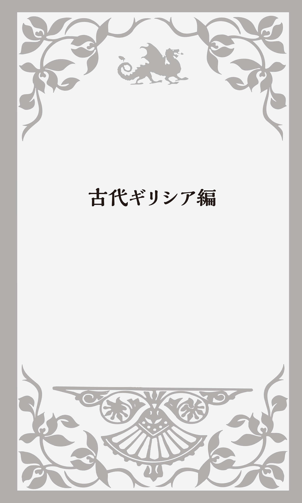
混沌の神「カオス」
旧約聖書「創世記」の冒頭は「初めに、神は天地を創造された」で始まり、「地は混沌であって......」と続く。『日本書紀』にも冒頭に「
聖書や『日本書紀』と同じようにギリシア神話でも、この世は最初は天と地が混然一体となって無秩序の状態にあったとされている。古代ギリシア人は、その混沌の状態を擬人化してChaos 「カオス」という最初の神をつくり出した。英語のchaos「ケイオス」「混沌、無秩序」は、ここから来ている。
そのChaos からできた造語がgas「ガス、気体」だ。時代は飛んで1600年のことになる。オランダのJan van Helmont「ヤン・ファン・ヘルモント」（1579～1644） という化学者が「気体」という概念を考えつく。木炭を燃やすと最後に灰だけが残った。その灰の重さを量ってみると、はるかに軽くなっている。きっと燃焼によって空気中に放出したものがあるはずだと考えたのだった。
ヘルモントは、その物質をChaos のオランダ語風発音をヒントにしてgasと名づけたと言われている。
chaos「混沌」と対をなすのがcosmos「秩序、調和」だ。「宇宙」という意味もある。天体は秩序ある調和のとれた体系と考えられていたからだ。これも古代ギリシア語のkosmos 「秩序」に由来し、哲学者・数学者で宗教家でもあったピタゴラス（前582～前497） が最初に用いた言葉だとされる。
ちなみに日本語の漢字で「秋桜」と書く「コスモス」も英語でcosmosだ。宇宙で星がきれいに並ぶように、美しい花びらが整然と並んでいることから名づけられた。cosmetic「化粧品」も同じ語源を持つ英語だ。体裁を「整えて」見栄えを良くするからだということは、この語の成り立ちを考えれば分かるだろう。
大地の女神「ガイア」
Chaos 「カオス」から生まれたのが大地の女神Gaia 「ガイア」だ。ラテン語や英語ではGaea（英語の発音は「ジーア」） とも綴るが、またの名をGē 「ゲー」とも言う。geology「地質学」、geography「地理学」、geopolitics「地政学」など、「土地」や「地球」に関する単語にはgeo-が付くが、それはこのGē から来ている。
ガイアは、自らの力だけでŪranos 「ウラノス」という天空の神を産む。全宇宙を支配した神とされ、今英語のUranusは「天王星」の意味にもなっている。ガイアは何と息子であるウラノスと交わり、12人（男6人、女6人）の子供を産む（神を数える単位は普通「柱」を使うが、本書では「人」とする） 。それがTītān 「ティタン」という巨大な神だ。私はずっとティタンはひとりの神だと思っていたのだが、12人の兄弟姉妹で、「ティタン族」とか「ティタン神族」とも呼ばれる。
英語のtitanは「タイタン」と発音するが、日本語では「チタン」とも言う。どちらにせよ現在の我々の生活に密接に結びついている。まず「チタン」という元素だ。英語ではtitaniumだ。原子番号22で、元素記号はTi。軽いわりには強度があり耐食性と耐熱性にも優れているため、航空機や自転車、ゴルフクラブなどに使用されている。
土星の衛星のひとつもTitan「タイタン」だし、現在の日本に目を向ければ爆笑問題が所属している芸能プロダクションも「株式会社タイタン」だ。
だが何といっても、真っ先に思い出されるのが1911年に建造され処女航海で大氷山に激突し沈没した大型豪華客船the Titanic「タイタニック号」のことだろう。titanicはtitanの形容詞で、「チタン元素の」、そして「巨大な」という意味だ。
少し英文法について触れると、「the＋形容詞」で「～なもの」「～な人々」という意味になり、例えばthe unknownで「未知のもの」、the richで「裕福な人々」となる。the titanicは「巨大なもの」という意味で、それを「巨大な船」の名前にしたのである。
名詞のtitanには「大きな力や影響力を持つ人・もの」という意味もあり、例えばbusiness titansで「大物実業家たち」ということになる。
ティタン族6兄弟のひとりが、海神Ōkeanos 「オケアノス」だ。ギリシア神話の世界観では、円形の大地の周りを海が取り囲んでいると考えられていた。その海流を神格化したのがオケアノスで、地上を流れる全ての川や湖や泉の源ともされた。綴りが似ているので分かると思うが、英語のocean「海」はこのŌkeanos から来ている。
愛と美の女神「アフロディテ」
ガイアとウラノスには、他にもたくさんの子供がいたが、その中に目がひとつのKyklōps 「キュクロプス族」（英語ではCyclops「サイクロプス」と言う） と100の腕と50の頭を持つHekatoncheir 「へカトンケイル族」（英語ではHecatonchires「ヘカトンカイリズ」と言う） がいた。
夫のウラノスはこの怪物のような子供たちを嫌い、地獄に閉じ込めてしまう。怒った妻のガイアは、もうひとり別の息子Chronos 「クロノス」にウラノスを殺害させる。クロノスは父親ウラノスの男根を切り落とし、海に投げ込んだのだった。
この時、海にこぼれた精液が泡となり、そこからAphrodītē
「アフロディテ」が生まれた。英語ならAphrodite、愛と美の女神だ。英語で「
アフロディテとエロスにまつわるこんな話がある。人間の美しい3人姉妹がいた。その末娘はPs 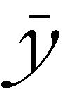 chē 「プシュケー」（英語ではPsyche「サイキ」） という名で、その美貌に多くの男たちが魅惑されていた。アフロディテがそのプシュケーに嫉妬し、息子エロスに「プシュケーが世界一醜く下賤な男に恋するようにしておくれ」と頼む。
ある夜、エロスが部屋に忍び込み、眠っているプシュケーに近寄った。あまりの美しさに見とれていると、彼女は目を覚ましてしまう。慌てたエロスは、その時誤って自分の矢で自分を傷つけてしまう。エロスはプシュケーに恋をしてしまうのである。
この"psyche"という文字を見て何か気づくことはないだろうか？ これはもともと古代ギリシア語で「息、呼吸」を意味し、そこから「命」、さらには「心」や「魂」を意味するようになったものだが、英語でもpsycho-やpsychi-から始まる単語がある。みんな「心」に関連する単語だ。psychologyは「心理学」だし、psychiatryは「精神医学」、psychicは形容詞なら「精神的な」「心霊の」、名詞なら「霊能者」になる。psychoも「精神病患者」という意味の口語で、1960年に公開されたヒッチコック監督の"Psycho"「サイコ」は有名な心理サスペンス恐怖映画だ。
初めてpsychologyという英単語を見た時、「サイコロジー」ではなく「プシチョロギー」などと読んだ方もいるかもしれないが、語源からすればそれもあながち間違いとは言えないのである。
勝利の女神「ニケ」
先ほど説明したティタン族の子孫にNīkē 「ニケ」という勝利の女神がいた。ルーヴル美術館には「サモトラケのニケ」という大理石の彫像が展示されている。頭部と両腕は失われているものの翼を大きく広げたダイナミックな女性の像で、紀元前2世紀に彫られたといわれている。1863年にギリシアのサモトラケ島で胴体部分が、続いて片翼などの断片が次々と見つかって復元されたものだ。
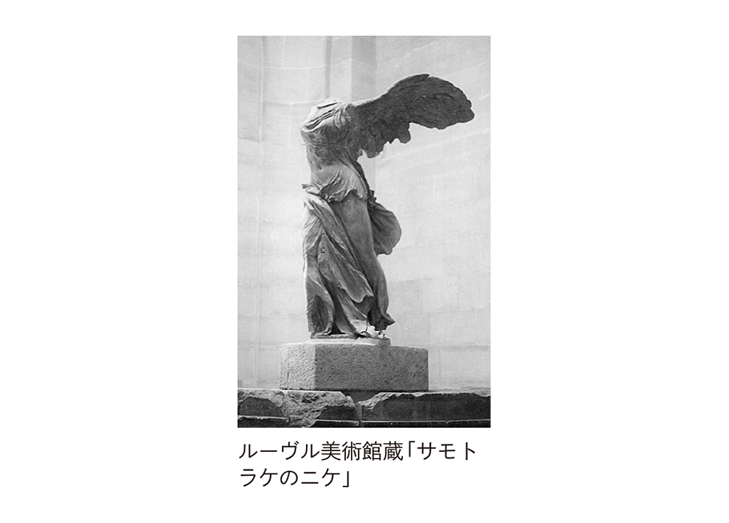
この勝利の女神Nīkē 「ニケ」を社名にしている世界的企業がある。スポーツ関連商品メーカーのNikeだ。日本でもそうだが、英語でも「ナイキ」と言う（英語ではiを「アイ」と発音することも多く、Nikonは「ナイコン」、Ikeaは「アイケア」と言う） 。
ニケはローマ神話ではVictōria 「ウィクトリア」となる。そう、英語で「勝利」を意味するvictory「ヴィクトリー」はここから来ている。
芸術の女神「ミューズ」
英語でMuse「ミューズ」と呼ばれる女神をご存じだろうか？ ギリシア語ではMūsa 「ムーサ」と言う。
先ほど父親の男根を切って海に捨てたクロノスのことを書いたが、そのクロノスが何と妹のレアと結婚してできた子供がZeus 「ゼウス」だ。全知全能の、ギリシア神話における"最高神"で、神々と人間たちの父とされている。そのゼウスがティタン族6人姉妹のひとり、記憶の女神Mnēmosynē 「ムネモシュネ」と交わって生まれたのがMūsa 「ムーサ」、つまりMuse「ミューズ」だ。
ミューズもひとりではなく9人姉妹で、「学問・芸術をつかさどる女神たち」なのである。彼女たちにはそれぞれの専門分野があって、カリオペは「叙事詩」、クレイオは「歴史」、エウテルペは「抒情詩」、メルポメネは「悲劇」、タレイアは「喜劇」、テルプシコラは「音楽舞踏」、エラトは「恋愛詩」、ポリュヒュムニアは「賛歌」、ウラニアは「天文」の担当となっていた。
英語のmuseum「博物館」「美術館」は、このMuseが語源になっている。もともとミューズ神を祀る神殿のことだったが、それが後に学問研究をする場所、さらには図書や絵画を収蔵・展示する建物の意味になったのである。
そして、ミューズ姉妹のテルプシコラが「音楽舞踏」をつかさどっていたことでも分かるように、music「音楽」という単語もMuseから来ている。「ミューズの女神たちの技法」という意味なのである。
乳房のない「アマゾン族」
ギリシア神話には、Amazōn 「アマゾン」と呼ばれる勇敢な女だけの種族が登場する。黒海沿岸に住み、戦争や狩猟中心の生活をしていた騎馬民族だ。彼女たちは弓を引くのに邪魔にならないように、片方の乳房を切り取っていたという。ギリシア語のAmazōn は「a （無）＋mazos （乳房）」から来ているとされる。「乳房がない」ということだ。
子供が欲しい時は周辺の部族の男のところに行き交わり、男児が産まれた場合は、殺すか奴隷とするか父親にあずけた。そして女児だけを部族に残し後継者として育て上げたのだった。英語ではamazonは「女性戦士」や「男勝りの女性」「女傑」などという意味になる。
南米の「アマゾン」という地名は、16世紀にスペインの探検隊が広大なジャングルの奥地に「勇猛な女性戦士の部族」が存在するという噂を聞いて名づけたといわれるが、実際に攻撃を受けて戦ったとする説もある。
世界的な通販サイトAmazon「アマゾン」の正式社名はAmazon.com, Inc.だ。1994年にジェフ・ベゾスがアメリカ・ワシントン州でCadabra.comという社名のインターネット書店を設立した。災厄を払うおまじないのabracadabra「アブラカダブラ」からとったものだったが、電話で社名を伝えたところ、相手はcadaver「解剖用の死体」と聞き間違えた。そのため、Amazon.comと改名されたのである。
世界一の流域面積を誇るアマゾン川のように、豊富な商品を販売し大きなシェアも得られるようにとの願いを込めたものだ。ちなみにロゴマークにはaからzに向けて矢印が入っている。これにもAからZまで、ありとあらゆる商品を扱いたいという社の理念が込められているという。
話を古代ギリシアに戻すと、詩人Homēros 「ホメロス」（英語ではHomer「ホーマー」） が紀元前9～8世紀頃に書いたĪlias 『イリアス』という叙事詩に「アマゾン族」が登場する。ギリシアとトロイアのthe Trojan War「トロイア戦争」に参戦し、トロイア側について戦ったという。アマゾン族の女王ペンテシレイアが、ギリシアの武将アキレスに殺されたという記述もある。
実は、アマゾン族は実在していたのではないかという説がある。彼女たちが住んでいたとされるのは黒海周辺だが、黒海はかつて「アマゾン海」と呼ばれていた。そして何よりも19世紀にドイツの考古学者Heinrich Schliemann「ハインリッヒ・シュリーマン」（1822～1890） によってトロイアの遺跡が発見されたことで、この戦争を戦ったアマゾン族の存在も真実味を帯びてきたのである。
「アキレス」の弱点
『イリアス』の中で、主人公となって大活躍するのが英雄「アキレス」だ。ギリシア語ではAchilleus 「アキレウス」、英語ではAchilles「アキリーズ」と言う。その母親は海の女神Thetis 「テティス」、美貌で知られた女神で、ゼウスに言い寄られたのだが拒絶してしまう（「生まれてきた子がゼウスを追い出して支配者になる」という予言で結婚を諦めたともされる） 。ゼウスはテティスが神と結ばれることを許さず、人間の王と結婚させたのだった。神である母親は不死身だったが、半神半人のアキレスには不死は受け継がれなかった。
そのためテティスはアキレスが産まれた時、子供を不死身にしようと
アキレスは、トロイア戦争で敵将のトロイア王子Paris 「パリス」にその部分を毒矢で射られて死んでしまう。アキレスに息子テネスを殺された光の神Apollōn 「アポロン」（英語ではApollo「アポロ」と言う） が、パリスにアキレスの唯一の弱点を教えたとも、矢がそこに向かうように運命を操ったともいわれている。
そこから、踵の骨とふくらはぎの筋肉をつなぐ太い腱のことをAchilles tendonあるいはAchilles heel「アキレス腱」と呼ぶようになった。人、特に屈強な人の「弱点」「急所」の意味でも使われ、His Achilles heel is his carelessness.と言えば、「彼の欠点は不注意なことだ」ということになる。
ギリシア人の贈り物
ホメロスは『イリアス』の続編としてOdysseia
『オデュッセイア』を書いた。英語ではOdyssey、「長期の波乱に富んだ冒険旅行、精神的
その物語の主人公がギリシアの英雄Odysseus 「オデュッセウス」。ギリシアの小さな島国「イタケ」の王だった彼が、トロイア戦争の後、故郷に帰るまでの10年にわたる苦難の冒険の旅が描かれている。
Trojan Horse「トロイアの木馬」という有名な話がある。実は、この奇想天外な作戦を言い出したのが、このオデュッセウスなのである。
ギリシア連合軍が、敵対するトロイアの市内に入る門の前に「大きな木馬」を置いたまま慌てて撤退する。木馬の周囲に集まったトロイア人がギリシア兵がひとり残っているのを見つけて拷問すると、「ギリシア軍はもう撤退してしまった。木馬は女神の怒りを鎮めるためにつくったもので、なぜこんなに大きいかというと、この木馬がトロイア市内に入るとギリシアが負けると占い師に予言されたからだ」と白状した。そこでトロイア人たちは木馬を引いて市内に運び込んだ。一説によると、木馬が大きかったため門の一部を壊して中に入れたともいう。
実は、木馬の中にはギリシア兵が隠れていて、夜になると忍び出て門を開き、大勢の味方の軍勢も中に入れてトロイアを占領したのである。
ここからGreek gifts「ギリシア人の贈り物」という表現が生まれた。「贈られた人に災難をもたらす油断できない贈り物」のことだ。Beware of Greeks bearing gifts.「贈り物を持ってくるギリシア人には気をつけろ」という警句もある。「和解しても、敵だった相手には油断するな」とか、「敵やライバルが親切な行為をしてきたら警戒しろ」といった意味で使われる。
ところで21世紀の現在、このTrojan Horse「トロイアの木馬」という言葉がコンピューター用語になっていることをご存じだろうか？ 正体を偽ってコンピューターに侵入し、データを消去・
良き師「メンター」
この『オデュッセイア』にMentōr 「メントール」という賢者が登場する。オデュッセウス王の家来であり、戦友であり、良きアドバイザーでもあり、王から全幅の信頼を勝ち得ていた。それ故オデュッセウスは自分が戦争で不在の間に、このメントールに息子の王子Tēlemachos 「テレマコス」の教育を託したのだった。
その賢者の名前からmentor「メンター」は英語で「良き指導者・助言者」という意味になった。「人生の目標となる良いお手本」という意味でも使われる。
この英語は最近、日本でも特にビジネスの場で使われ出している。新入社員や後輩社員に対して、仕事の指導だけでなく人生上の悩みも聞くなど精神的なサポートも担当する先輩社員のことだ。すぐに会社を辞める若者も多いためか、最近この「メンター制度」を採用する企業が多くなっている。mentoringは「新入社員教育」「人材育成制度」という意味の英語だ。
「セイレン」の歌
英語のsiren「サイレン」は「人々に注意を喚起したり、危険を知らせたりする警報音・警報装置」のことだ。この言葉も、『オデュッセイア』に登場するギリシア神話の海の妖精Seirēn 「セイレン」から来ている。
上半身は美しい女性で、翼があり下半身は魚という姿のセイレンは、シチリア島近くの小島に住み、甘美な歌声で船乗りたちを誘惑しては、近づく船を難破させて死に追いやっていた。
オデュッセウスは、部下の水夫たち全員の耳に
1819年にフランスの物理学者Cagniard de la Tour「カニャール・ドゥ・ラ・トゥール」（1777～1859） が、穴の空いた円板を向かい合わせて回転させ、両方の穴が合った時だけ空気が振動して大きな音を出す装置を発明した。ラ・トゥールは『オデュッセイア』の海の妖精のことを思い出し、siren「サイレン」と名づけたのだった。
このサイレンは、かつては空襲警報や火事、あるいは工場で労働者に始業や終業時間を知らせるための大音響だった。今でもパトカーや救急車、消防車など緊急車両の警報音、甲子園で行われる高校野球の試合開始と終了の合図にも使われている。人々を夢の世界に誘い込むのではなく、注意を促し現実に引き戻す大音響となり、ギリシア神話の「セイレン」とは全く逆のものになってしまったのである。
牧神「パン」のpanic
Pān
「パン」という牧神は、顔は長い
ある時パンは妖精のĒchō 「エコー」に恋をする。しかしエコーはパンの求愛を拒む。怒ったパンは配下の羊飼いたちを狂気に陥れ、エコーを殺させてしまう。それ以来、パンが笛を吹くと、どこからともなく「やまびこ」が聞こえてくるようになったといわれる。英語のecho「エコー、反響、こだま」は、この妖精から来ている。
echoは動詞でも使われる。もちろん「こだまする、反響する」ということだが、「まねる」「そのままおうむ返しに繰り返す」という意味もあり、The politician only echoed the famous news commentator's opinions.と言ったら、「その政治家は、有名なニュース・コメンテーターの意見をそのまま述べたに過ぎない」ということになる。
エコーについては、こんな話も伝わっている。この妖精はNarkissos 「ナルキッソス」という美しい青年に恋をしたのだが、失恋してやせ細り、ついには声だけが残ることになった。ナルキッソスは池に映る自分の姿を見て、あまりの美しさに自分自身に恋をしてしまい、エコーには見向きもしなかったのである。英語のnarcissism「自己愛、ナルシシズム」、narcissist「ナルシシスト（英語ではまれにnarcistとなり、日本語でも普通「ナルシスト」と言う） 、自己陶酔者、うぬぼれや」は、この青年の名前から来ている。
ナルキッソスは水面に映る自分の顔に見とれている時に、うっかり池に落ちて溺れ死んでしまう。すると、神々が哀れんで彼を水仙の姿に変えたのだった。「水仙」は英語でnarcissus「ナルシシス」となる。
この花には人を麻痺させる力があるとされていて、その名前はギリシア語のnarkē 「麻痺」に由来するともいわれる。英語にはnarcosis「麻酔」やnarcotic「麻酔薬（の）、睡眠薬（の）」、あるいはnarcolepsy「ナルコレプシー」という居眠り病など、narco-で始まる単語がいくつかあるが、みんな「麻痺」や「催眠」に関連する言葉になっている。
『イソップ物語』から生まれた英語
Aisōpos 「アイソポス」、英語にすればAesop「イソップ」（?～前564頃） は古代ギリシア時代の紀元前6世紀に実在した寓話作家だとされる。"Aesop's Fables"『イソップ物語』は昔から日本でもお馴染みの童話で、文禄2（1593） 年に天草で印刷されたローマ字版が大英博物館に保存されているし、江戸時代初期には仮名草子の『伊曾保物語』が出版され評判になった。
『イソップ物語』に由来する英語表現は数多いが、その中から代表的なものを紹介しよう。まずcry wolf「狼が出たぞと叫ぶ」だ。「狼と少年」の話はよくご存じだろう。「狼が来た」と噓ばかりついていた少年がいて、村の人々に迷惑をかけていた。ある晩、本当に狼が来たのだが、村人はまた噓だろうと思ってそのまま放っておいたために、その少年は襲われて食べられてしまったという話だ。そこからcry wolfは「虚報を伝えて人を騒がせる」という意味で使われるようになった。
wolf「狼」といえば、wolf in sheep's clothingあるいはwolf in a lamb's skinという表現もある。これも『イソップ物語』から来ている。「羊の皮をかぶった狼」、つまり「外見は柔和に見えるが本当は危険な人」ということで、「偽善者」という意味でも使われる。
同じような表現が、新約聖書のMatthew「マタイによる福音書」にもある。Be on your guard against false prophets; they come to you looking like sheep on the outside, but on the inside they are really like wild wolves.「偽預言者を警戒しなさい。彼らは羊の皮を身にまとってあなたがたのところに来るが、その内側は貪欲な狼である」（「聖書 新共同訳」日本聖書協会） という一節だ。
イソップのsour grapes「酸っぱいブドウ」という話もよく知られている。キツネがブドウを取ろうとしたが、手が届かなかったために「あれは酸っぱい」と負け惜しみを言ったという話だ。そこからcry sour grapes「負け惜しみを言う」という表現ができた。
kill the goose that lays the golden eggsという表現もある。lay eggsは「卵を産む」という意味で、「金の卵を産むガチョウを殺す」ということだ。金の卵を産むガチョウを飼っている農夫がいた。だが1日にひとつしか産まない。強欲な農夫はガチョウのお腹の中には金塊が詰まっているに違いないと考え、腹を切り裂いて死なせてしまう。「目先の利益のために将来の利益を台無しにするな」という教訓的な寓話だ。
農家の娘が乳しぼりを終えて、牛乳の入った桶を頭の上に載せて歩いていた。娘は「この牛乳から乳脂ができる。それでバターをつくって市場で売り、そのお金でたくさん卵を買って、ひながかえったらニワトリを売って、きれいなドレスを買って身に着けると、村の若者たちが言い寄ってきて......」などと妄想を膨らませているうちに、頭の上の牛乳の入った桶のことをすっかり忘れてしまう。桶を地面に落とし牛乳も全部こぼれてしまい、全てが台無しになってしまった。最終的な結果をきちんと見きわめるまでは、油断してはいけないという戒めになっている。
A bird in the hand is worth two in the bush.という諺もある。「手の中の鳥1羽は繁みの中の2羽の価値がある」ということだ。「明日の百より今日の五十」と訳されることもある。「手に入るかどうか分からない多くの物に固執するより、確実に手に入る少ない物に満足した方がいい」という意味だ。
『イソップ物語』の中で使われたこれらの表現が古代ローマ時代でも盛んに引用され、時代を経て今でも英語や日本語の諺となって使われている。
「ヤギの歌」と「酒宴の歌」
古代ギリシアと言えば、悲劇や喜劇が盛んに上演されていた。英語のtragedy「悲劇」は、ギリシア語の「tragos （ヤギ）＋ōidē （歌）」から来ている。「ヤギの歌」ということだ。
なぜ「悲劇」が「ヤギの歌」なのかというと、悲劇が開演される前にヤギを
comedy「喜劇」は、ギリシア語の「kōmos
（酒宴）＋ōidē
（歌）」に由来する。古代ギリシアのある地方では、酒の神ディオニュソス（ローマ神話ではバッカス）を信仰していた。その祭りの日に人々は大酒を飲み
ちなみにギリシア語のōidē 「歌」だが、これもいくつかの英単語で使われている。melody「メロディ」、rhapsody「狂想曲」、parody「パロディ」などだ。parodyは「歌」には関係ないではないかと思われるかもしれないが、これは「para （傍らの）＋ōidē （歌）」からなり、もともと「他の人がつくった歌をおちょくるために新たにつくられた歌」ということで、喜劇において観客を飽きさせないようにするための手法だった。それがやがて文学作品など真面目な作品を巧みにまねて、滑稽で下品な内容に変えてからかうといった意味に変わったのである。
喜劇の中のソクラテス
古代ギリシアの喜劇作家ではAristophanēs 「アリストファネス」（「アリストパネス」とも言う） （前446頃～前385頃） が有名だ。『鳥』という作品がある。地上での生活に愛想を尽かした2人のアテネ人が、たくさんの鳥を集めて空中に城をつくる。そこが「雲の中のカッコーの国」で、神と人間の領域の中間にある"理想の国"とされた。
ここからcloud-cuckoo landは「現実離れした気楽で幸福な場所」を意味し、He is living in cloud-cuckoo land.と言えば「彼は現実離れした夢想の中で生きている」となる。
アリストファネスには他に『雲』という作品もある。驚きなのは、この喜劇の中に哲学者のSōkratēs （英語ではSocratesと綴る） 「ソクラテス」（前469?～前399） が登場することだ。ある老人が、ペロポネソス戦争で農地を荒らされ、息子も道楽にふけったりして、莫大な借金をつくってしまう。そこで老人は息子をソクラテスが主宰する「塾」に入学させる。そこでは正しいことでも不正なことでも、必ず相手を言い負かすことができる弁論術を教えてくれる。その論法を使って、借金取りが来ても、たとえ裁判になったとしても、議論をふっかけて借金を帳消しにできると考えたのだ。
ソクラテスの塾で学んだ息子は、借金取りを
この喜劇が生まれた背景には、ギリシア語でsophistēs 「ソピステス」、英語にすればsophist「ソフィスト」と呼ばれる人々の存在があった。お金を取って、言葉を巧みに駆使して他人を説き伏せる技術を教える知識人たちのことだった。知恵や言葉を、真理を発見するためでなく議論に勝つための道具として教えたのである。ソクラテスもそんなソフィストのひとりだと誤解されていた。それが後に裁判にかけられ死刑となった理由のひとつだった。
そんな見せかけの弁論術が世の中のブームになり、巧妙な言葉で言論を支配する「扇動的民衆指導者」が現れる。冷静に政治的判断を下すべき民会も、言葉だけの"言論ゲーム"の場になってしまい、現実的な政治は行われなくなってしまった。
「扇動的民衆指導者、デマを流す人」は英語でdemagogue「デマゴーグ」と言うが、これは古代ギリシア語の「dēmos （民衆）＋agōgos （指導者）」から来ている。日本でも虚偽の噂を流して扇動する人のことを「デマゴーグ」と言う。「扇動的な宣伝や噓」はイギリス英語ではdemagogy「デマゴギー」、アメリカ英語ではdemagoguery「デマゴグァリー」となり、日本語では略して「デマ」とも言う。
愚かな2年生
ご存じの方も多いと思うが、英語のphilosophy「哲学」はギリシア語の「philos （愛する）＋sophiā （智）」に由来する。「智を愛する」ということだ。ちなみに上智大学の正式英語名Sophia UniversityのSophia「ソフィア」は、このsophiā 「智」から来ている。
先ほど紹介したsophist「ソフィスト」にもsophi-という文字が入っている。日本でもよく「洗練された」という意味で「ソフィスティケイト」というカタカナ英語を使う人もいるが、これは英語のsophisticateあるいはsophisticatedから来ている。
以前、アメリカ人から「あなたは洗練されている」という意味でYou are sophisticated.と言ってはいけないと注意されたことがある。「世慣れしていてずる賢い」というニュアンスがあるからだという。sophistという単語の成り立ちを考えてみれば、何か分かるような気がする。
ところで、「大学2年生」のことを英語でsophomoreと言うことをご存じだろうか？ 「1年生」がfreshman、「3年生」がjunior、「4年生」がseniorなのに、2年生だけこんな不思議な英語になる。sopho-はお分かりのように「智」「賢さ」だが、-moreはギリシア語で「間抜け、愚か」という意味のmōros から来ている。英語で言うと"wise fool"ということだ。2年生になると、1年間勉強しているので一見賢そうに見えるが、中身はまだまだ子供っぽくて愚かだというところから来ている。
ケンブリッジ大学で17世紀中頃に、このsophomoreという言葉が使われていたという記録が残っている。
プラトンの愛
ソクラテスの弟子として知られるのがPlatōn 「プラトン」（英語ではPlatoと綴り「プレイト」と発音する） （前427～前347） だ。ソクラテスは著書を残していないが、偉大な哲学者として後世に名が残っている。それはプラトンがソクラテスの語った言葉を書き残したからだ。
プラトンが弟子に哲学を説いたのがアテネ郊外の庭園に建てられた学校だった。そこには、かつて誘拐されていたゼウスの娘Helenē 「ヘレネ」を救出したAkadēmos 「アカデモス」の墓があり、その英雄を祀る神域ともなっていてAkadēmeia 「アカデメイア」と呼ばれていた。英語のacademy「学校、学会、学士院」やacademic「学問の」「学究的な」はここから来ている。
英語のPlatonicは「プラトンの」「プラトン哲学の」という意味だ。英語でも日本語でもよく使われる言葉にPlatonic love「プラトニック・ラブ」がある。よく「男女間の肉体関係のない精神的な愛」という意味で使われる。だが、これは誤解に基づいて生まれた言葉だということは意外と知られていない。
プラトンが書き残した対話形式の著書のひとつに『饗宴』がある。タイトルは古代ギリシア語ではsymposion 、「一緒に酒を飲むこと」という意味で、英語のsymposium「シンポジウム」はここから来ている。
『饗宴』の副題は「愛とは何か」。プラトンの師ソクラテスをはじめ文学青年、喜劇作家、悲劇詩人、政治家、医師などが、愛をテーマに自分の考えを即興で語るという内容になっている。
まず、最初に発言した文学青年は、神話や文学作品を引用しながら、
このような様々な「愛」についての議論が続く中、ソクラテスの発言で様相は一変する。究極の愛とは「美のイデアを愛し求めることだ」というのである。ideā 「イデア」とはギリシア語で「姿、形」という意味だ。「原型」「本質」などという訳があてられることもある。さて「美のイデア」とはいったい何なのだろうか？
例えば、あなたが男性で、ある女性をとても美しいと思ったとしよう。だが、彼女の「美」は永遠のものではない。年老いていけば容姿は当然衰えてくるだろう。あるいは、もっと美しいと思う女性と出会ったら、最初に美しいと感じた人には美を感じなくなってしまうかもしれない。野に咲く花を美しいと思うこともあるだろう。だが、他の場所にもっと美しい花が咲いているかもしれない。
目で見える物以外にも「美」はある。内面の美しさや、人の生き方や行動が美しいという場合もあるだろう。「知識の美しさ」というものもある。例えば、数学者は「三角形の内角は180度である」という法則に「美」を見出すという。どんなに小さくても、大きくても、正三角形であろうが二等辺三角形であろうが、どこで測ろうが、「内角は180度」という法則は変わらないのである。
『饗宴』の中でソクラテスは、個々の美ではなく、人それぞれの感覚で判断されるものでもなく、どんなに時間が経過しても、どんな場所にあっても変わらない、全てを超越した絶対的な「美そのもの」「美の本質・原型」を「美のイデア」と定義し、それを愛し求めることが「本当の愛」だと結論づけたのである。
それが現在のような意味に変わったのは、15世紀のルネサンス期のことだった。フィレンツェにMarsilio Ficino「マルシリオ・フィチーノ」（1433～1499） というプラトン研究家がいた。メディチ家の庇護を受けて『プラトン全集』をラテン語に翻訳し、『饗宴』の注釈書『愛について』を書いたのだが、その際にamor platōnicus 「アモル・プラトニクス」（プラトン的愛）という言葉を使った。
それが17世紀前半になってキリスト教的な愛の理念agapē 「アガペー」と融合して、「男女間の性的関係のない精神的な愛」と解釈されるようになったのである。この「純潔な男女の関係」という発想は『饗宴』には出てこない。ここに至って「美のイデア」からはかけ離れたものになってしまったのである。
犬の哲学
ソクラテスには、もうひとりAntisthenēs 「アンティステネス」（前444～前365） という弟子がいた。「キュニコス学派（キニク派）」の祖とされる。Kynikos 「キュニコス」とは「犬のような」という意味で、英語ではcynicとなる。「キュニコス主義」はcynicism「シニシズム」、日本語では「犬」に儒教の「儒」と書いて「犬儒主義」と言う。その時々の時流や社会通念を無視して、世間の動きに関わらずに遠巻きに見てあざ笑うという"われ関せず"の思想だ。cynical「シニカル、冷笑的な」はここから来ている。
開祖のアンティステネスの弟子にDiogenēs
「ディオゲネス」（前412?～前323）
がいる。道端で樽の中を
ディオゲネスは何も行動を起こさなかったにもかかわらず、当時その名は世に轟いていた。紀元前336年、アレクサンドロス大王が彼に会いに行った時の有名な話がある。日向ぼっこをしていたディオゲネスに王が挨拶をして「何か望みはないか」と聞くと、「あなたがそこにいると日陰になるからどいてください」と言ったという。
禁欲と快楽の哲学
ギリシア哲学の一学派にStoa「ストア派」がある。stoic「ストイック」という英語があるが、これはこの「ストア派」から来ている。形容詞なら「禁欲的な」、名詞なら「禁欲主義者」ということになる。Zēnōn
「ゼノン」（英語ではZeno「ジノ」、同名のギリシア哲学者と区別するためZeno the Stoicなどと呼ばれる）
（前335～前263）
が代表的な哲学者で、弟子に講義を行った場所がアテネのアゴラと呼ばれる広場に面した「屋根のある
「ストイック」という言葉は、現在では「どんな苦しみにも我慢強く耐える」といった意味で使われるが、そのような解釈は16世紀になって現れたものだ。もともとの「ストア派」の哲学とは、感情にとらわれずに理性に従い倫理・道徳的な実践を行うことによって、心の平安を得ることを目指す哲学だった。
epicurean「快楽主義者」「快楽主義の」という英語もある。これはギリシアの哲学者Epikūros 「エピクロス」（前341～前270） から来ている。英語ではEpicurusと綴る。この哲学者は「快楽が至高の善であり人生の最大の目的」と考えた。人間が最も恐れる死の恐怖に対しては「私が存在する限り死は存在せず、死が存在する時には私は存在しない」と不安を解消し、すぐに消えてしまうはかない快楽という感情をもっと大きく長続きさせるための哲学を追究した。
しかし、悦楽的な行為によって、その後に苦痛や不安が大きく増し長く継続するような場合には、そのような快楽は選択すべきでないとした。故に肉体的享楽的快楽を「悪」ととらえ、精神的で崇高な快楽を重視し、哲学的思索の中にこそ最高の快楽があると考えたのである。
厳しい法律家Draco
紀元前7世紀にDrakōn 「ドラコン」（英語ではDraco「ドレイコ」と言う） （前650頃） という法律家が現れた。ギリシアで初めての「成文法」をつくった貴族だ。この法律はとても厳しいものだったために、後世になってlaws written in blood「血で書かれた法律」と称されるようになった。
そして、このDracoという名前からDraconianあるいはDraconicという英語が生まれた。「法律や判決が厳格・残酷な」という意味だ。Draconianismと言えば、「ドラコン主義、厳罰主義」ということになる。
そんな過酷な法律をつくったドラコンだから、私は当然、嫌な奴でみんなから忌み嫌われていたと思っていた。ところが民衆の間では大人気だったというのだ。それまでは貴族や金持ちが罪を犯しても甘い量刑となり、平民には厳しいなどの不公平が見られた。しかし法律を明文化することによって、
だが、よくよく考えてみると、人々から信頼され愛されている人物だからこそ、こんなに厳しい法律をつくっても大きな批判を受けずにすんだのではないだろうか？
こんな逸話がある。芝居を見ようと劇場に入ったドラコンを多くの観客たちが熱狂的に迎え入れ、彼に向けてたくさんのコートや帽子などの衣類を投げた。これは当時の歓迎や敬意の表し方だったのだが、ドラコンの頭上にあまりに多くの衣類が飛んできたために、その中にうずまってしまい、息ができなくなって死んでしまったという。
にわかには信じがたい出来事だが、このエピソードからkillsomeone
with kindness「親切心で殺す」という英語表現が生まれたとされている。「
陶片追放
古代ギリシアでは紀元前8世紀に、貴族の中から順番に役人が選ばれて政治を行うようになった。これを「貴族政治」、英語ではaristocracyと言う。ギリシア語の「aristo （最上の）＋kratiā （支配）」から来ている。「優れた者による支配」ということだ。
しかし貴族政治は、理想通りの「最上の支配」ではなかった。貴族の中には独裁的権力を得ようとする者も出てくる。例えば、戦争で活躍して人気を得たPeisistratos
「ペイシストラトス」（?～前527）
は、いろいろな
このように血統ではなく、武力など非合法な手段で君主の座を得た者をギリシア語でtyrannos
「
その僭主の出現を防ぐために「陶片追放」という制度ができた。政治を行うのに不適当だと思われる人物の名前を陶器の
ostracismは動詞になるとostracize「陶片追放する」となる。そこから「追放する」という意味になった。She was declared a witch and ostracized by the villagers.なら「彼女は魔女だと宣告されて村人たちによって追放された」ということだ。さらに「仲間はずれにする」という意味にもなり、例えばTom's friends ostracized him after his father's arrest.で「トムの父親が逮捕されてから友人たちは彼を仲間はずれにした」となる。
民主政治と「外国人嫌い」
陶片追放のような試行錯誤を繰り返しながらも、紀元前5世紀頃からは「民主政治」が行われるようになっていった。「民主制」「民主主義」は、ご存じのように英語でdemocracyとなる。これは古代ギリシア語のdēmokratiā から来ている。「dēmos （民衆）＋kratiā （支配）」ということだ。
貴族政から民主政に移行したのは、戦争の影響があった。平民も戦争に参加して勝利に貢献するようになると、発言力が高まり参政権を持つようになったのだ。しかし、女性や奴隷は政治から排除されていた。また国内に居住する外国人は参政権もなく不動産も所有することができなかった。
このようにギリシア人は、内においては民主政を実現したものの、他民族に対しては排他的な姿勢をとり、彼らをbarbaroi 「訳の分からない言葉を話す人たち」と呼んで軽蔑した。外国人の話す言葉が「バルバル」と聞こえたからだともいわれている。英語のbarbarian「未開人、野蛮人」はこれに由来する。ここから派生してbarbarism「野蛮、未開（状態）」、barbarize「（人を）野蛮にする、残忍にする」という言葉も生まれた。
古代ギリシア語では「見知らぬ人」のことをxenos 「クセノス」と言った。英語でxenophobia「ゼノフォビア」と言うと「外国人嫌い」という意味になる。xeno-は「外国の」、-phobiaは「～嫌い」「恐怖症」という意味だ。これに対して、-phileは「～好き」ということで、xenophile「ゼノファイル」と言うと「外国好き」「外国かぶれ」ということになる。
アルキメデスのEureka!
古代ギリシアを代表する科学者がArchimēdēs 「アルキメデス」（前287～前212） だ。ギリシアの植民市だったシチリア島のシラクサで生まれた数学者、物理学者、発明家、天文学者である。最も知られているのが「黄金の王冠」のエピソードだろう。
アルキメデスは王様から、職人のつくった黄金の王冠が本当に純金でできているのかどうか、何か混ぜ物をしてごまかしていないかどうかを調べるように命令される。王冠を壊さないで解決する方法を考えなければならなかった。
アルキメデスは入浴中に、自分が浴槽に入ると水面が高くなることに気づいた。もし王冠が全て黄金でできていれば、同じ重さの純金と同じところまで水面が上昇するはずだ。その2つを比較すればいい。アルキメデスは"Heurēka! "「分かった！」と叫んで、裸で通りに飛び出したのだった。
この言葉は英語にもなっていてeurekaと綴る。イギリス人やアメリカ人は何かを発見した時に、その嬉しさを冗談交じりに"Eureka!"「分かった！」と言ったりする。"I've found it!"という意味だ。アメリカ・カリフォルニア州の北西部にはEureka「ユリーカ」という小さな港町もある。
日本の青土社という出版社が発行している月刊誌に『ユリイカ』がある。これはこのEurekaから名づけられたものだ。もともと詩や文学、思想などを扱う総合芸術誌だったが、最近ではサブカル・オタク路線に変わっている。
またNMB48のナンバーに「僕らのユリイカ」（秋元康作詞・高田暁作曲） という曲がある。歌詞は「僕らのユリイカ / 発見したんだ / ずっと近くにいたのに / 初めての感情」となっている。
現在の日本にも、古代ギリシアの言葉が息づいているのである。
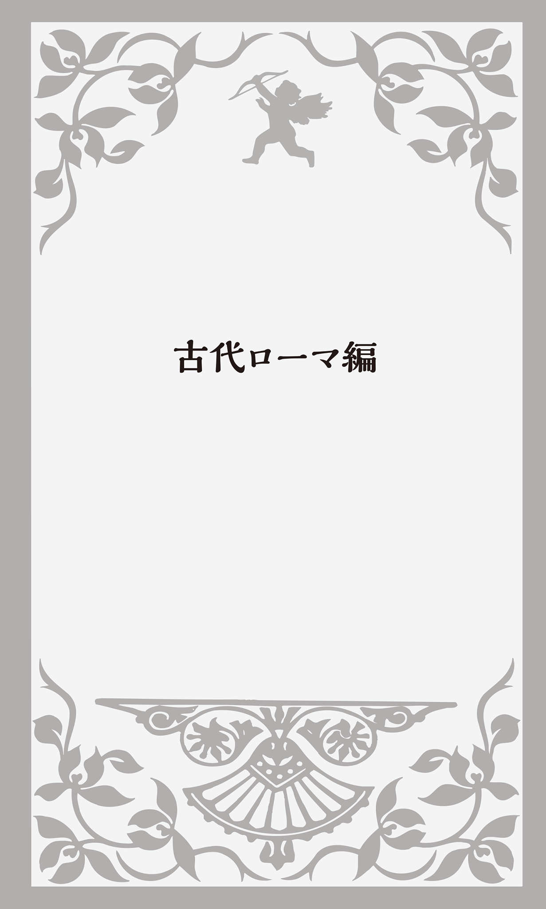
ローマの建設者
永遠の都と称えられる「ローマ」は、伝説によればギリシア神話の英雄Aineiās 「アイネイアス」の子孫、Rōmulus 「ロムルス」によって建設された街だとされる。
アイネイアスは愛と美の女神アフロディテとトロイア王家につながる軍人の子供で、トロイアが滅びた時に脱出し、苦難の旅の末にイタリア半島にたどり着き、小さな国の王となった。
時は流れ、アイネイアスの末裔の王の娘レア・シルヴィアは美しい女性に成長していた。そのレアを、天から降りてきた戦いの神Mārs
「マルス」が見初めて
自分たちが王の子孫であることを知った2人は、かつて自分たちが小舟に乗せられて打ち上げられた地点に新しい都市を建設することにした。ところが、どちらが王になるかでいろいろ競争をしているうちに喧嘩になり、ロムルスがレムスを殺してしまう。こうして初代王となったRōmulus 「ロムルス」の名前から、この都市はラテン語でRōma 「ローマ」、イタリア語でRoma 、英語やフランス語ではRomeとなったのである。
この殺人事件が起こったのが、紀元前753年4月21日だとされている。現在でもローマ市民はこの日が来ると、街が誕生した記念日として祝うのである。また「雌の狼」がこの街のシンボルになっていて、市内に7つある丘の中で一番高いカピトリーノの丘にある美術館には、「雌狼の乳を飲むロムルスとレムス」の銅像が展示されている。
ちなみに、「カピトリーノの丘」はラテン語でCapitōlīnus 「カピトリヌス」と言ったが、現在のイタリア語の地名はCapitolino となる（Campidoglio 「カンピドリオ」とも言う） 。英語のCapitol「アメリカ連邦議会議事堂」は、この丘の名前から来ている。
エロスとキューピッド
古代ローマ人はギリシア神話の物語を積極的にローマ神話の中に取り入れた。それだけギリシアの影響が強かったのである。だから神様の名前が違うだけで、同じような話がたくさんある。
例えば、前述のギリシア神話の愛と美の女神アフロディテは、ローマ神話ではVenus 「ウェヌス」、英語では同じ綴りのVenus「ヴィーナス」となる。アフロディテと同じように海の中で泡から生まれた。
ルネサンス期のフィレンツェの画家ボッティチェリ（1445?～1510） の作品"The Birth of Venus"「ヴィーナスの誕生」（1486） には、帆立貝の貝殻の上に乗った全裸のヴィーナスが両の手で胸と秘所を隠した姿で描かれている。ヴィーナスが海の中で誕生した後、西風に吹き寄せられてキプロス島に流れ着いたとされる場面だ。
前述のように、ギリシア神話ではアフロディテの息子だった愛の神エロスはCupīdō 「クピド」になる。英語ならCupid「キューピッド」だ（ちなみに英語でcupidityと言うと「色欲、貪欲」という意味になる） 。
エロスは青年として描かれることが多かったが、キューピッドは背中に翼をつけて恋の矢を放つ幼児に変わった。これもボッティチェリの作品だが、"Primavera"「プリマヴェーラ」（1482頃） という絵画には、優雅に踊っている三美神に上空から矢を向けるキューピッドが描かれている。
双面神「ヤヌス」
ローマ神話独自の神もいる。そのひとつが双面神Jānus 「ヤヌス」だ。英語ではJanus「ジェイナス」と言う。2つの顔を持ち、ひとつの顔が前を、もうひとつが後ろを向いている。英語のJanuary「1月」はこのJānus から来ている。前の年（過去）を振り返り、新しい年（未来）に希望を抱く月だからだ。またヤヌスは「門の守護神」ともされた。軍隊や使節が儀式用の特別の門をくぐって出発するしきたりがあり、あらゆる物事の始まりをつかさどる神でもあったのである。
しかし、Januaryが年の初めの「1月」になったのは、紀元前153年になってからのことだった。その前はどうだったのだろうか？ 少し複雑な話になるが、順を追って説明していこう。
1月と2月のない暦
古代ローマで最初の暦は紀元前8世紀中頃、ローマ建国の父ロムルスがつくった「ロムルス暦」。この暦では1年は10か月だった。寒くて農作業のできない60日（2か月）間は、何と暦から除かれていたのだ。もともと暦は、いつ種を蒔いて、いつ収穫するかという農耕作業の時期を明確にするためにつくられたものだった。寒い真冬の間（現在の1月・2月）は農作業ができなかったために、空白期間となっていたのだ。
故に1年の最初の月は今で言う「3月」で、Mārtius 「マルティウス」と呼ばれた。戦いの神Mārs 「マルス」の月ということだ。春になり気候も良くなって農耕を始める季節であり、同時に軍隊を動かすにもちょうど良い時期だったからである。
しかもマルスはローマ建国の祖ロムルスの父親とされている。年の最初の月としたのもうなずけるだろう。そして、もうお分かりのように、現在の英語のMarch「3月」は軍神Mārs 「マルス」の月から来ている。
暦になかった2つの月が加わったのは紀元前8世紀末、ロムルスの次の王ヌマが定めた「ヌマ暦」だった。この暦では、従来の10か月の後に、第11月をJanus「双面神」にちなんでJānuārius
「ヤヌアリウス」、第12月を
このフェブルウスについては少し説明が必要だろう。王はローマが犯した過去の罪を償い、戦死者たちの霊を慰めるためにFebruālia 「フェブルアリア」という祭りを催した。その時に祀ったのが贖罪の神Februus だった。英語のFebruaryはここから来ている。
そのまま600年近く暦は変わらなかった。しかし紀元前153年になって「ヌマ暦の改革」が行われた。最後にあったJānuārius とFebruārius を最初にまわし、年の初めの「1月」「2月」としたのだった。
Septemberは「第7の月」
ところが......である、ここでSeptember（第7の月）からDecember（第10の月）までが2つずつずれてしまったのである。
英語のSeptember「9月」は、もともとの年の最初の月Mārtius 「マルティウス」から数えて「7番目の月」だった。フランス語を齧った方ならsept は数字の「7」だということをご存じだろう。これはラテン語で「7」を意味するseptem 「セプテム」から来ている。October「10月」は、8本の足を持つタコがoctopusなので分かると思うが、ラテン語のoctō 「オクト」「8」に由来している。November「11月」はラテン語のnovem 「ノウェム」「9」、December「12月」もラテン語のdecem 「デケム」「10」から来ている。年の最初にJānuārius とFebruārius という「2つの月」を加えたために、このようなずれが生じてしまったのである。
よく言われているのは、Jūlius Caesar 「ユリウス・カエサル」（前100～前44） 、英語ではJulius Caesar「ジュリアス・シーザー」が7月に自分の名前を割り込ませてJulyにしたとか、最初のローマ皇帝Augustus 「アウグストゥス」（前63～後14） が8月に自分を押し込んでAugustにしたから、月の数字がずれてしまったということだ。だが、これは大きな誤解で、カエサルやアウグストゥスが生まれる前から、すでに数字のずれは生じていたのだ。
Julyはカエサルの名前
カエサルが紀元前46年に定めたのが「ユリウス暦」だ。1年を原則365日とし、4年に1度の
カエサルの姉の孫であった初代皇帝アウグストゥスも紀元8年にユリウス暦を改暦した（アウグストゥスの改暦）時に、8月を自分の名前をとってAugustus 「アウグストゥス」に変更してしまった。これが英語でAugustになった。
それでは7月、8月はそもそも何と言われていたのだろうか？ 7月はQuīntīlis 「クウィンティリス」。5人で楽器を演奏したり歌ったりすることをquintet「クインテット」と言うので分かると思うが、「5番目の月」ということだ。8月はSextīlis 「セクスティリス」と呼ばれていた。ラテン語でsex 「セクス」は6なので「6番目の月」という意味だった。
先ほどSeptemberからDecemberまでの数字が2つずつずれたと書いたが、これは現在の視点で考えたもので、実は「7月」はもともと3月から数えて「第5の月」、「8月」も「第6の月」であり、ここでもすでに月の数字のずれは生じていたのである。
「アウグストゥスの改暦」に関して、こんな話がある。それまでは奇数月が31日の「大の月」、偶数月が30日の「小の月」（2月は29日）となっていて、とても分かりやすかった。だが、アウグストゥスが皇帝たる自分の月を冠した「8月」が他の月より日数が少ないのは威厳にかかわるとして、1日増やして31日にしてしまったのだ。しかし、カエサルの月「7月」の日数を減らすわけにはいかず、2月をさらに1日減らして28日にすることにした。そのために「7月」と「8月」が2か月連続して31日となってしまった。
「小の月」を「西向く侍」＝「
執政官と元老院議員
ローマが紀元前6世紀に王を追放して共和政となると、「執政官」という役職の人が貴族の中から選挙で選ばれ、平時は政治の最高責任者となって政治を行い、戦時は軍の最高司令官として指揮を執った。執政官はcōnsul 「コンスル」と言った。これは今も英語で「領事」という意味で使われている。例えば「ニューヨーク駐在の日本領事」はJapanese consul in New Yorkとなる。「領事館」はconsulate、「総領事」はconsul generalだ。
「執政官」を指導監督し国政の実権を握っていたのが「元老院」で、役職経験者の終身議員など長老によって構成された。ラテン語で「元老院」はsenātus 「セナトゥス」、「元老院議員」はsenātor 「セナトル」と言った。アメリカ「上院」のSenate、「上院議員」のsenatorはここから来ている。
やがて平民が兵士として国防に重要な役割を果たすようになると参政権も与えられ、元老院や執政官の決定に拒否権を持つ平民の「護民官」という公職も設置された。護民官は「平民会」から選ばれ、また護民官は平民会を招集するという役割も担っていた。だが、実質的には元老院が政治的権力を持ち続け、非常時には強大な権力を持つdictātor 「ディクタトル」と呼ばれる「独裁官」を指名した。これが英語のdictator「独裁者」の語源だ。
"輝かしい"奴隷
古代ギリシアと同じように古代ローマの社会も奴隷制を基盤として成り立っていた。「奴隷」は英語でslaveと言う。これがSlav「スラヴ民族」から来ていると言うと驚かれる方もいると思う。これはもともと「栄光」とか「輝かしい民族」という意味だった。しかし、古代ローマ時代に多くのスラヴ人を捕えて奴隷にしたことから、「スラヴ人＝奴隷」となり、もとの意味とは逆のものになってしまった。
貴族の庇護のもとでいろいろな役割を果たした「隷属平民、庇護民」という人々もいた。ラテン語でcliēns 「クリエンス」と言った。「有力者の保護を求める人」、あるいは「命令を求め常に耳を傾ける人」という意味で、そこから「従属者、家来」となった。これが英語のclient「依頼人、顧客」の語源となっている。何と「お客様」とは、もともとは「家来」のことだったのである。
その隷属平民を保護した貴族をラテン語でpatrōnus 「パトロヌス」と言った。これは「父親」という意味のpater 「パテル」から来ている。確かに父親は子供を「保護する」立場にある。これが英語でpatron「後援者」となり、「作家や画家など芸術家を庇護し創作活動をさせる王や貴族」も意味するようになった。また、日本語の「パトロン」もそうだが、「愛人に金銭的援助をして囲う人」という意味もある。
白衣の「候補者」
古代ローマで、布を身体にゆったりと巻きつけて着用した上着をtoga 「トガ」と言った。公職に就くための選挙に立候補する人は、特に白いトガを身に着けて演説をした。なぜ白かというと、自らの潔癖さと民衆への忠誠心を表すためだったといわれる。この「白い服を着た人」のことをcandidātus 「カンディダトゥス」と言った。これが英語で「候補者」「志願者」を意味するcandidateの語源となっている。
candidateに似たcandidという英単語もある。これは「率直な」という意味だが、ラテン語で「輝く」という意味のcandēre
「カンデレ」から来ており、「白く輝く」という意味だった。「
英語のalbumもラテン語のalbum 「白い」から来ている。これが名詞で、公式の通達や記録を書いた「白い掲示板」のことになり、英語になって切手や写真を挟み込む空白ページのあるノート、あるいは複数の曲を収録したレコードやCDへと意味が広がったのである。
イギリスはかつてAlbiōn 「アルビオン」と呼ばれていた。「白い国」という意味だ。カエサルがドーバー海峡越しにブリテン島を眺めた時に岸壁が白く見えたことで、そのように呼んだといわれている。だが、カエサルが最初にこの島に攻め込んだのは紀元前55年のこと。それより300年前の文献に、すでにこの言葉が使われていたことで、最初はケルト語だったのではないかともいわれている。
歩きまわる「野心家」
古代ローマの選挙に話を戻すと、「白い服」を着た候補者はいろいろな場所で演説を行い、町を歩きまわって多くの人に自分に投票してくれるよう呼びかけた。現在の日本のように「公職選挙法」もなかったので、戸別訪問も積極的に行った。このように「歩きまわること」をラテン語でambitiō 「アンビティオ」と言った。英語のambition「野心、野望、大志」はここから来ている。自分に票を入れてくれるように訴えながら一生懸命に「歩きまわる」人は、「野心」があると思われたからだ。
ambitionの形容詞がambitiousだ。Boys, be ambitious!「青年よ、大志を抱け！」は、札幌農学校（現・北海道大学）の初代教頭だったクラーク博士が、学生との別れの際に言ったとされる有名な言葉である。日本人的な感覚からすると、かなり
カエサルと「帝王切開」
共和政ローマ期の軍人・政治家といえば、何といっても「ユリウス・カエサル」の名前が真っ先に思い浮かぶ。そのカエサルにまつわる言葉のいくつかは、現在の英語にも残っている。
まずはCaesarean sectionだ。sectionとは「セクション」、つまり「部署」とか「一部」「断片」ということだが、この場合は「切開」「分離」という意味だ。このCaesarean sectionとは「カエサルの切開」、つまり「帝王切開」のことなのである。Caesarean operationとも言い、「妊婦のお腹を切開して子宮から胎児を取り出す手術」のことだ。
よくカエサル自身が「帝王切開」で生まれたので、こう呼ばれるようになったといわれているが、当時の医療技術では不可能だった。こんな手術をしたら母親は確実に死んでいただろう。カエサルの母親のJūlia 「ユリア」は54歳まで生きた。当時からすれば、ものすごく長生きだった。だからCaesareanは「カエサルの」という意味ではなく、ラテン語で「切られた」という意味のcaesus 「カエスス」から来ているのではないかとする説もある。
ルビコン川を渡る
紀元前1世紀の中頃、カエサルはCrassus 「クラッスス」（前115～前53） 、Pompēius 「ポンペイウス」（前106～前48） と強く結びつき、三頭政治の一角を担うことになる。クラッススは大富豪だった。ポンペイウスは軍に絶大な影響力を持っていただけでなく、カエサルの娘ユリアを妻にしていた。3人の利害が微妙なバランスを保ちながらも一致したのだ。
カエサルは執政官として次々と新しい政策を行い、民衆からの人気を得ると、今度は自らをガリア総督に任命する。イタリア半島の北西、現在のフランスとその周辺地域はGallia 「ガリア」と呼ばれ、ローマの属州となっていた。「属州」とはローマが征服し統治したイタリア半島以外の領土のことで、ラテン語でprōvincia 「プロウィンキア」と言った。それが今フランスのひとつの地域の名称となっている。Provence 「プロバンス地方」だ。
英語にはprovinceという単語がある。「地方」「田舎」という意味だが、キリスト教の「教会管区」、あるいはイギリスのロンドン以外の全ての地域のことを総称してprovinceと言うこともある。カナダの「州」や中国の「省」もprovinceだ。the Province of Ontarioは「オンタリオ州」、Fujian Provinceは「福建省」となる。
カエサル率いるローマ軍は、数少ない兵員で敵の波状的な攻撃を破りガリアを平定する。そして海を渡ってBritannia 「ブリタンニア」（現在イギリスがあるブリテン島の南部。１世紀中頃〜５世紀初頭までローマの属州となる） にまで遠征したのである。戦争で自軍を勝利に導くことは政治家としての能力を示すことでもあり、カエサル人気はローマでも沸騰した。
だが、クラッススが戦死し、ポンペイウスが妻としていたカエサルの娘のユリアを亡くすと、状況は大きく変わってくる。ポンペイウスは、力をつけすぎたカエサルを危険な存在とみなし、元老院との関係強化をはかる。自らの執政官の任期延長を元老院に認めさせ、カエサルの総督の任期が切れた後も権力を維持できるよう画策した。カエサルも総督の任期延長を要請したが、認められなかった。執政官の立候補者はローマ在住の者に限るという法律もあった。そうするとガリア総督カエサルはローマに戻っても何の役職にもつけず、政治的に無力となってしまう。
ガリアで軍隊を増強したこと、ライン河を越えてゲルマン人と戦い、海を渡ってはブリタンニアまで遠征したことなど、カエサルが元老院の承認を受けずに勝手にやったことが数多くあった。また、総督在任中になぜ莫大な富を手に入れることができたのか、何か不法なことを行っていたのではないか、など追及される疑惑はいくらでもあった。カエサルが"丸腰"でローマに帰ると、裁判にかけられ死刑になる可能性さえあったのである。
そして、ついに元老院でカエサルのガリア属州総督解任と本国召還を命じる勧告が発布される。カエサルは軍を率いてローマへと向かう。ガリアとローマの境界を流れるルビコン川を軍隊が武装して渡ることは禁じられており、ローマに対する反逆を意味していた。そこからcross the Rubicon「ルビコン川を渡る」という表現ができた。それは「もう後戻りができないような思い切った決断をする」という意味で、今も使われている。
カエサルはルビコン川を渡る時、兵士たちに向かって、The die is cast.「
クレオパトラの鼻
ポンペイウスは多くの元老院議員や貴族とともに逃走しギリシアに向かったので、カエサルは簡単にローマを制圧することができた。カエサル軍はポンぺイウス軍を追撃し、初戦こそ敗れたものの徐々に巻き返して勝利を重ねたのだった。
追い詰められたポンペイウスは、以前から親しくしていたエジプトのプトレマイオス王を頼り、海路でアレクサンドリアに向かった。だが船が港に着いた直後、エジプト軍の兵士によって刺殺されてしまう。プトレマイオス王と宰相がローマの内乱に巻き込まれることを恐れたためだ。カエサルがポンペイウスを追いかけてアレクサンドリアに着いたのは、その数日後のことだった。
このような運命に導かれて、カエサルはCleopatra 「クレオパトラ」（前69～前30） と出会うことになる。カエサルはクレオパトラの魅力にとりつかれてしまう。
ここで思い起こすのは、フランスの啓蒙思想家Blaise Pascal「ブレーズ・パスカル」（1623～1662）
の"If Cleopatra's nose had been shorter, the whole face of the earth would have changed."という言葉だ。「もしクレオパトラの鼻がもう少し低かったら、大地の全表面は違ったものになっていただろう」などと訳されている。「鼻が低かったら」とは、「もっと不細工だったら」ということなのか、それとも「もっと美人だったら」ということなのだろうか？ 日本なら「鼻が高い」のは「美人」になるが、欧米では「不美人」ということになる。
これまで多くの歴史家が様々な考えを示してきたが、いまだ結論が出ていない。どちらにせよ、パスカルが言いたかったことは、「鼻の高さのような些細なことで、歴史は大きく変わるほど流動的だ」ということではないか、というところに落ち着きつつある。
もうひとつ気がつくのは、英語では"If Cleopatra's nose had been shorter"となっていることだ。鼻が「低かったら」ではなくshorter「短かったら」となっている。これはフランス語の"plus court
"「より短い」の直訳である（実際に前田陽一・由木康訳『パスカル』（中央公論新社）では「もっと短かったなら」と訳されている）
。私は学生時代にパスカルの"Pensées
"『パンセ』をフランス語で講読したのだが、鼻を「高い、低い」ではなく「長い、短い」と表現することを知って
ネロと大火とヴァイオリン
カエサルは最後には「終身独裁官」になってローマの全権力を掌握したが、「皇帝」にはなっていない。ローマ初代皇帝は、カエサルの姉の孫で養子でもあったアウグストゥスだった。もともとOctaviānus 「オクタウィアヌス」という名前だったが、ラテン語で「尊厳ある者」という意味のAugustus と名乗り、おまけにCaesar という名前を「ローマ皇帝」の称号として用いた。
中世になってできた神聖ローマ帝国の皇帝をKaiser 「カイザー」と言い、また帝政ロシアでは皇帝のことをCzar 「ツァーリ」と呼んだ。どれもみなCaesarを語源とする称号だ。
数多くの皇帝がいた中で、最もよく知られているのが、Nerō 「ネロ」（37～68） だろう。第5代皇帝で、「暴君」といわれた。確かに母や妻を殺害し、ネロの悪口をちょっと言っただけで家来を処刑したりした。だが暴君といわれた最大の理由はキリスト教徒に激しい弾圧を加えたからだ。後の時代のキリスト教徒が「極悪人」というイメージを植えつけたのである。
ネロにまつわる話で有名なのが、64年にローマで起こった大火のことだ。ネロは放火の犯人をキリスト教徒と決めつけ虐殺を始めた。放火犯はネロ自身だという説もあった。古い街並みを壊し、新しい都をつくるために火事を起こしたというのだ。しかしその晩、ネロはローマから80キロ離れた生まれ故郷アンティウムの別荘に滞在していたので、それは不可能だった。だが、家来に命じて、自分が不在の間に火事を起こさせたという可能性も捨てきれない。
この事件から生まれた英語表現にfiddle while Rome burnsがある。「ローマが燃えている間に、フィドル（ヴァイオリン）を弾く」とは、「非常時と知りながら何もしなかったり、それとは関係ないどうでもいいことをする」ということだ。ネロが大火の最中に、浮かれてヴァイオリンを弾いていたという噂から生まれた英語だ。
今でも、例えばこんな状況の時に使うことができる。While this country has its highest unemployment rate in decades, the President is on a long vacation; he's fiddling while Rome burns.「この国はこの数十年で最高の失業率となっているのに、大統領は長い休暇に入っている。ローマが燃えている時にヴァイオリンを弾いているのだ」
この表現ではfiddle「フィドル、ヴァイオリン」という単語が使われているが、実は古代ローマ時代にはこの弦楽器はなかった。ネロが弾いていたのはlyrā 「リュラ」、英語ではlyre「ライア」、日本語なら「リラ」と言う「竪琴」だったのではないかといわれている。
lyreの形容詞のlyricは「竪琴の」「抒情詩の」という意味で、lyric poemなら「抒情詩」となるが、名詞では「歌の詞」つまり「歌詞」となる。音楽好きの方はよく目にされると思うが、「作詞～」をwords by... とする代わりにlyrics by... と表記することがある。
円形闘技場と剣闘士
大火の後にネロは豪華絢爛なDomus Aurea 「黄金宮殿」を建てた。ネロの死後、この宮殿の庭園にあった人工池の跡地に5万人収容の「円形闘技場」、Colossēum 「コロッセウム」が建設された。現代のイタリア語ではColosseo 「コロッセオ」、英語では通常Coliseum「コロシアム」となる。ローマにはいくつか闘技場があったが、観客が増えて手狭になったため新しく大きな施設をつくる必要に迫られたのである。
落成を祝って大規模な闘技会が開かれた。剣闘士（ラテン語ではgladiātor 「グラディアトル」、英語ではgladiator「グラディエーター」） 同士の戦いの他、剣闘士と猛獣との死闘、そして何と大量の水をグランドに貯めての模擬海戦などが100日にわたって繰り広げられたのである。
2000年に公開されたラッセル・クロウ主演の映画"Gladiator"「グラディエーター」をご覧になった方もいると思う。戦いに勝った剣闘士が相手に最後のとどめを刺そうとする。その時に観客がこぶしを握り親指を下に向けた場合は「殺せ」という合図で、反対に上に向けた時は「よく戦った」という称賛を意味し、命が助かったのだ。
ここから英語でthumbs downが「否決」、thumbs upが「賛成」という表現が生まれた。今でもOKの意味で親指を上に向けることがあるし、「ダメ」の場合には下に向け、場合によってはブーイングまで起こる。
この表現は現在、ビジネスの場でも使われていて、例えばThis project plan got the thumbs up.で「このプロジェクト計画は承認された」となる。反対にOur proposal got the thumbs down.と言ったら「我々の提案は否決された」という意味だ。put / turnone's thumbs up（親指を上に向ける）で「承認する、賛成する」、put / turnone's thumbs down（親指を下に向ける）なら「拒否する、反対する」という意味になる。
ところが最近、親指を上に向けた時は「殺せ」で下に向けた場合が「よく戦ったので助けてやれ」の意味だった、という全く逆の新説が登場している。もしこれが真実だったら、英語表現も変わるのだろうか？
全ての道はローマへ
ローマ帝国は13代皇帝Trājānus 「トラヤヌス」（在位98～117） の時に領土が最大となり、支配地域全域に支線も含めて総延長15万キロにも及ぶ道路網が整備された。何と地球3周と4分の3の長さだ。
有名な諺にAll roads lead to Rome.「全ての道はローマに通ず」がある。もともとラテン語の格言だったが、17世紀のフランスの詩人La Fontaine「ラ・フォンテーヌ」（1621～1695） が"Fables "『寓話』の中で、この表現を使い広まったものだ。
ローマとヨーロッパ各地をつなぐ道がローマに向かって整備されていたことから、「物事が中心に向かって集中する」ことのたとえになっているが、そこから「真理は常にひとつだけであり、どのような道筋を通っても必ずたどり着くものだ」という意味にもなった。見方を変えれば、「正しい結論を得る方法はひとつだけではないので、いろいろな方法を試行錯誤してみることが大切だ」ということでもある。
ハドリアヌスの長城
ローマは43年から350年以上ブリタンニアを属州として支配した。第14代ローマ皇帝Hadriānus 「ハドリアヌス」（在位117～138） は、122年にブリテン島の北部に住んでいたピクト族の侵入を防ぐために城壁を築かせた。それがHadrian's Wall「ハドリアヌスの長城」だ。全長120キロ、現在のイングランドとスコットランドの境界線になっている。中国の万里の長城ほどではないが、宇宙からも確認できるという。
ちなみに、このハドリアヌスは2012年に公開された映画「テルマエ・ロマエ」（原作はヤマザキマリの漫画）にも登場する。阿部寛演じる浴場設計技師のルシウスに命令を下す市村正親がその皇帝だ。
ローマ人が去った後、ラテン語が英語に残した影響はそれほど大きくなかった。ただイギリスの地名にはLancaster「ランカスター」やWinchester「ウィンチェスター」など、-caster「カスター」や-chester「チェスター」という語尾が残っている。これはラテン語のcastra 「野営地」に由来するのである。
「手を洗う」は「足を洗う」
イエス・キリストが十字架に架けられて処刑されたのは30年頃のこと、恐らくは史実だったのではないかとされている。場所はローマ帝国の属州「ユダヤ」で、キリスト処刑の最終判断をしたのが「ピラト」（ラテン語ではPīlātus 「ピラトゥス」、英語ではPilate「パイラット」と発音する） というユダヤ総督だった。
この話は新約聖書の「マタイによる福音書」に出てくる。ピラトは大勢の民衆の前でイエスを尋問したが、どうしても死刑に相当する罪状を見出せなかった。しかし、群衆は納得しない。「イエスをどうしたらいいのか」と民衆に尋ねると、「十字架につけろ」と言う。「イエスがいったいどんな悪事を働いたのか」と聞くと、群衆はますます激しく「十字架に架けろ！」と叫び続けた。
ピラトはもうそれ以上何を言っても無駄なばかりか、かえって騒動が起こりそうなのを見て、水を持って来させ群衆の前で手を洗って言った。"I am not responsible for the death of this man! This is your doing!"「この人の血について、わたしには責任がない。お前たちの問題だ」（『聖書 新共同訳』日本聖書協会）
この一節からwashone's hands of...（自らの手を洗う）という表現が生まれた。「～と手を切る、縁を切る」という意味だ。これが日本語では「足を洗う」という表現になるのもおもしろい。He washed his hands of politics and became a professor.と言えば、「彼は政治から足を洗って教授になった」という意味だ。
くつろぐロンギヌス
十字架に架けられたキリストは、槍で刺されて息絶える。この時、最後に脇腹に槍を刺して死を確認したのが、ローマ軍のLongīnus 「ロンギヌス」という隊長だった。そこからLance of Longinus「ロンギヌスの槍」という言葉が生まれ、今でもキリスト受難の象徴になっている。
このLongīnus という名前から、古フランス語のlongis 「のろま」を経てloungeという英語が生まれたという説がある。動詞では「リラックスして時間を過ごす、ぶらぶら歩く」、あるいは「ゆったり寄りかかる」という意味で、lounge aroundなら「ぶらつく」、lounge in an armchairで「安楽椅子にゆったりもたれる」ということになる。
もうお分かりだろうが、loungeは名詞でも使われ、日本語にもなっている。そう、空港やホテルロビーの休憩スペース「ラウンジ」だ。アメリカ人やイギリス人でもオーストラリア人でもニュージーランド人でも、loungeがキリストの
なぜ、ロンギヌスの名前がこんな意味になったのだろうか？ それはキリストが架けられた十字架の下で、兵士たちが忙しく動きまわっていた中で、ロンギヌスだけがひとりゆったりと座り込んでいたからだ。
ちなみに、後にロンギヌスはキリスト教に改宗する。キリストを槍で刺した時に血しぶきがかかり目に入った。白内障にかかっていたロンギヌスは失明寸前だったのだが、キリストの聖なる血が目に入ったために、視力を回復したとされている。
「黙示録」とArmageddon
旧約聖書はユダヤ教の経典で、そのユダヤ教に対して異議申し立てをしたのがイエス・キリストだった。「新約」「旧約」の「約」というのは「神との契約」のことだ。キリストによって更新された新しい神との契約が「新約聖書」なのである。そこには主にキリストとその弟子たちのことが描かれている。
ただ、その新約聖書にある「ヨハネの黙示録」だけは異様な内容になっている。キリスト十二使徒のひとりヨハネが啓示を受け、キリスト再臨までの過程を預言するという形で描かれている。幻想的で謎めいた表現も多く、数々の天変地異が人々を襲い、怪物や獣が次から次に現れてはいろいろな物を破壊する。そんな獣の1匹はローマ皇帝ネロを暗に示していると言われ、「黙示録」はキリスト教徒を迫害したローマ帝国への「抗議の書」ではないかとも考えられていた。
「黙示録」の中にArmageddon「アルマゲドン」という言葉が出てくる。ギリシア語ではHarmagedōn 「ハルマゲドン」となり、日本語では両方の言い方をする。Har はヘブライ語で「山」を意味し、Megiddo は今も残っている「メギド」という場所の名で、ハルマゲドンは「メギド山」ということになる。メギドはイスラエルのエルサレムからおよそ100キロ北にあり、今は遺跡になっているが、古代では有力な都市国家だった。実際にこの地で多くの戦いがあったとされる。
「黙示録」の中で「善」と「悪」、つまり「神」と「悪魔」が最終決戦をする場がこのメギド山なのである。ここからArmageddonは一般名詞で「最後の破壊的な大決戦」という意味にもなった。現在の現実世界においても、The arms race can lead to Armageddon.「軍備競争は破滅的な大決戦につながりかねない」などと使うことがある。
1998年にブルース・ウィリスの主演で大ヒットした"Armageddon"「アルマゲドン」という映画をご覧になった方もいるだろう。あと何日かで地球に衝突する小惑星の軌道を変えるために、そこに宇宙船で着陸して核爆弾を爆発させるというストーリーだ。
何かとてつもなく大きな出来事、それも最悪の出来事があった場合に、-mageddonを使って造語をつくることもある。例えばflu-mageddonは「インフルエンザの大流行」、snow-mageddonで「ものすごい大雪」「ドカ雪」となる。何年か前に、ロサンゼルスで2本の主要幹線高速道路の合流地点の改修工事があり、大渋滞が起こった。この時にラジオのアナウンサーが"car-mageddon"という大げさな表現を使って話題になったこともあった。
最近では"Farmageddon"（フィリップ・リンベリー他著『ファーマゲドン 安い肉の本当のコスト』野中香方子訳・日経BP社） という本も発行されている。農業や牧畜業の集約的工場化によって大量の農薬が使用され、家畜の餌に抗生物質やホルモン剤が多量に投与されている現実に警鐘を鳴らす内容だ。
「黙示録」は英語で"Apocalypse"と言う。ギリシア語のapokalypsis 「啓示、覆いを取る」が語源になっている。1979年にフランシス・コッポラ監督の「地獄の黙示録」という映画が公開され大ヒットした。その英語タイトルが"Apocalypse Now"だった。「現在の黙示録」という意味だ。ベトナム戦争の泥沼の中で、悲惨な戦いを余儀なくされた兵士たちの異常な日々を描いたものだが、ベトナムの実情を"白日のもとにさらす"というニュアンスも込められていたのかもしれない。
キリスト教公認
313年、ローマ皇帝Constantīnus 「コンスタンティヌス」（在位306～337） がEdict of Milan「ミラノの勅令」を発し、キリスト教を公認する。ローマ帝国がキリスト教の権威とシステムを利用して国をまとめる時代になったのである。
「黙示録」を新約聖書に含めるかどうかについては反対意見も多かったが、高位の聖職者たちによる会議で正式に聖典として組み入れることが決定された。ネロを悪魔の化身の「獣」として描き、ローマ帝国を非難した「黙示録」が、公式に認められたのである。何という皮肉だろうか。
コンスタンティヌスは、330年にビザンティオンを新しい首都に定め、自らの名をとってコンスタンティノポリス（コンスタンティノープル）と名前を変えた。現在のトルコ・イスタンブールである。これによりローマの東西分離の流れは勢いを増し、ついに395年Theodosius 「テオドシウス」（在位379～395） が東ローマ帝国と西ローマ帝国に分割して2人の子供をそれぞれの皇帝にしたのである。
破壊者「ヴァンダル族」
ローマ帝国が東西に分裂した後も、ゲルマン人は盛んにローマの支配地域に侵入した。中でもVandal「ヴァンダル族」は現在のフランス、スペインや北アフリカにわたる広大な地域を移動しながら、429年にはヴァンダル王国を建設する。
そして455年、ヴァンダル族はついにローマに侵入する。その攻撃の際に公共物・私有財産のみならず芸術品や宗教的宝物も情け容赦なく破壊した。そこから英語のvandalは、名詞で「芸術品の破壊者」、形容詞では「芸術・文化を破壊する」「野蛮な」という意味になった。vandalismは名詞で「破壊行為・蛮行」のことだが、「芸術文化の破壊」そして「落書きなども含む公共物の破壊」という意味にもなる。vandalism of public buildingsと言えば、「公共建築物の破壊行為」のことだ。vandalizeは動詞で「（芸術・文化・公共施設などを）破壊する」という意味になる。
ちなみに、ヴァンダル族が北アフリカに移動する途中に一時的にとどまったスペインのAndalusia 「アンダルシア地方」は、もともとVandalusia「ヴァンダルシア」 と呼ばれていたという言い伝えも残っている。
西ローマ帝国は476年、ゲルマン族の傭兵隊長オドアケルによって皇帝が退位に追い込まれ滅亡する。その最後の皇帝は何と「ロムルス・アウグストゥス」という名前だった。紀元前753年から約1200年続いた古代ローマ時代はここに終わる（東ローマ帝国（ビザンツ帝国）は１４５３年にオスマン帝国に滅ぼされるまで存続する） 。
古代ローマが国家として存続した1200年という年月を日本に当てはめてみると、何と平安時代から21世紀の
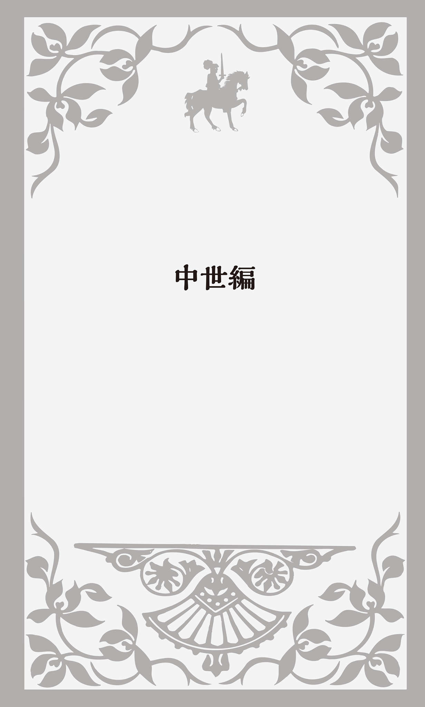
ブリトン人とアングロ・サクソン人
「中世」は英語でthe Middle Agesあるいはthe Medieval Periodと言い、ゲルマン民族の大移動が始まりローマ帝国が東西に分裂した4世紀末から東ローマ帝国が滅亡した15世紀までの時代を言う。Christianity「キリスト教」が民衆の中に浸透し、王・領主と家臣との主従関係を基盤としたthe Feudal Age（the Era of Feudalismとも言う） 「封建時代」だった。領主が家臣に土地を与える代わりに軍務の義務を課し、農民には農産物の耕作をさせて年貢を納めさせたのである。
中世はまたthe Dark Ages「暗黒時代」とも呼ばれる。絶え間ない戦乱に加えてペストなどの疫病が大流行し、人々の想像力や感性が硬直化した価値観の中に押し込まれて、華やかな文化の発展が阻害されたからでもあった。
属州のBritannia 「ブリタンニア」（ブリテン島）に住んでいたローマ人たちは、本国の弱体化に伴い、5世紀に撤退してしまう。その島にはもともとケルト系のBriton「ブリトン人」と呼ばれる人々が住み、Celtic「ケルト語」という言葉を話していた。いくつもの小国に分かれ戦いを繰り返していたのだが、ブリトン人の王の中には他の国よりも優位に立とうと、ゲルマン民族の一派アングロ・サクソン人を招き入れる者も出てきた。彼らの戦闘能力を利用しようとしたのである。だがその思惑ははずれ、アングロ・サクソン人はブリトン人への攻撃を始める。
戦いは武力に勝るアングロ・サクソン人がブリトン人を圧倒し、ブリトン人は島の中を逃げ惑う。西の端まで逃げてきたブリトン人の中には、海を渡ってヨーロッパ大陸に逃れる者も出てきた。彼らが移住した先は現在のフランスのBretagne 「ブルターニュ地方」。英語ではBrittany「ブリタニー」と言うが、この地名はラテン語のBritannia 「ブリタンニア」から来ている。
フランスのこの地は、後にLittle Britain「小ブリテン」とも呼ばれるようになる。なぜLittle「小」かと言うと、もっと面積の広いGreat Britain「大ブリテン」があったからだ。そう、ブリテン島のことだ。
現在のイギリスの正式国名は"United Kingdom of Great Britain and Northern Ireland"「グレートブリテン及び北アイルランド連合王国」と言うが、そのGreatは「偉大な」という意味ではなく「小さなブリテン」に対する「大きなブリテン」という意味なのである。
ブリテン島に侵入したアングロ・サクソン人が話していたのが、今の英語の祖先とも言うべきOld English「古英語」だった。「アングロ・サクソン語」とも呼ばれ、5世紀から11世紀まで使われていた。ちなみに英語史では、12世紀から15世紀まで使われていたのがMiddle English「中英語」、16世紀から18世紀までの英語をModern English「近代英語」、それ以降をPresent-Day English「現代英語」とおおまかに区分している。
kingは「血縁の子」
king「王」という言葉は古英語のcyning 「血縁の子」が語源とされている。cyn は「血縁」、-ing は「関連あるもの」から「～の子」という意味で、その短縮形のcyng が「部族の長子」から「王」へと意味が変化したのである。
現在の英語でもkinは「血族・親族」のことだ。この単語もkingと同じくcyn 「血縁」から来ている。よく似た単語にkind「親切な、優しい」があるが、これも同じ語源を持つ言葉だ。血縁関係にある人には、誰もが「親切」にするだろう。
kingが「一族の長」という意味なのに対して、emperor「皇帝」は軍事用語で、他の民族や部族と戦う状況の中で生まれた言葉だ。語源はラテン語のimperātor 「インペラトル」。もともと「命令者」「司令官」という意味だったが、ローマ市民が凱旋将軍を"Imperātor! Imperātor! "と歓呼して出迎えたことから、戦争で大勝利をおさめた将軍に与えられる称号となり、さらには「ローマ皇帝」の意味になったものだ。
queen「女王」は語源がギリシア語のgynē 「女性」で、古英語のcwēn 「女性、妻」から、中英語のquene 「王の妻、王女、女王」を経て今の英語になった。同じ語源から生まれた英語にqueanがある。「あばずれ女」とか「売春婦」ということだが、スコットランドでは今でも「結婚前の少女」という意味で使われている。
女性に関連する単語にはgyne-から始まるものが多い。gynecologyは「婦人科学」、gynecologistは「婦人科医」だし、gynecopathyは「婦人病」、gynephobiaとなると「女性恐怖症」のことだ。
アーサー王と円卓の騎士
5世紀末にアングロ・サクソンの一部族、アングル人を撃退したとされるブリトン人の伝説上の英雄にKing Arthur「アーサー王」がいる。ブリテン島の正統な統治者の象徴とされる魔法の剣Excalibur「エクスカリバー」を携えたこの王様とKnights of the Round Table「円卓の騎士」たちの物語は、「アーサー王伝説」として今に伝えられている。アーサー王が実在したかどうかについては今も歴史家の間で議論が続いているが、その話の多くは民間伝承や吟遊詩人たちによる創作だとされている。
「円卓の騎士」とは、アーサー王に仕えた精鋭の騎士たちのことで、王の城で円卓を囲んだことに由来する。円卓には上座下座がなく、全ての者が対等であった。人数が決まっていて、新しい円卓の騎士は空席ができて初めて仲間入りができた。
「騎士」は英語ではknightと言う。これは古英語のcniht 「少年」から来ている。それが「召使い」という意味になり、封建時代になって君主に仕えるようになると、武器を持つことを許され、戦争の時には馬に乗り主君に従って戦うようになる。
騎士とサーロイン
knightは貴族に次ぐ階級である「ナイト
おもしろいのは、Sirの次にはlast name「名字」ではなくfirst name「名前」が来ることだ。元ビートルズのPaul McCartney「ポール・マッカートニー」はknightの称号を授けられているが、Sir McCartneyではなくSir Paulと呼ばれている。
sirのつくものにsirloin「サーロイン」という肉がある。サーロイン・ステーキのサーロインだ。牛の「背中」の部分の肉のことで、肉質は最高で風味も抜群だとされる。これはフランス語のsurlonge 「腰の上」から来ている。sur は「～の上」という前置詞、longe は「腰、腰肉」という意味で、英語ならloinとなる。このsurlonge を英語にする時にsur をsirと間違えたとされている。つまりミススペリングだったというのだ。
だが、もうひとつ驚くべき珍説がある。16世紀の初めにHenryⅧ「ヘンリー8世」が牛肉のこの背中の部分のあまりのおいしさに、肉にknightの称号を与えてSir Loinと呼んだというのである。
金の「拍車」
spurという英単語をご存じだろうか？ 名詞では「拍車」という意味で、動詞では「拍車をかける」となる。日本語にも同じ表現があって聞いたことがあると思うが、「拍車」とはいったい何なのか？ これは「馬に乗る人の靴のかかとに取りつける金具」のことだ。拍車にはギザギザの歯車がついていて、それで馬の腹部を押して思うままに操ったり、蹴って気合を入れ速く走らせるのである。
そこから、刺激したり圧力を加えたりすることで物事の進行を早めることを、「拍車をかける」と言うようになった。他の日本語で言えば「活性化する」「活を入れる」ということだ。例えば「経済発展に拍車をかける」ならspur economic development、「停滞した経済に活を入れる」はspur the lagging economyとなる。
そのspurを使った表現に、win / earn / get / gainone's spursがある。戦争での活躍が認められるとknightの称号が授けられたが、その時にgilt spur「金の拍車」が与えられた。そこからgilt spurはknightの象徴となり、winone's spurs「拍車を獲得する」が「初めて手柄を立てる、名を上げる、一人前として認められる」という意味になったのである。この表現を使えば、I doubt he'll ever win his spurs as a baseball player. で「彼は野球選手としては大成しないと思う」などと言うことができる。
自由な槍「フリーランス」
lanceは「槍」のことだが、槍を持って馬に乗る兵士「
ご想像のように、「フリーランス」は日本語にもなっており、現在でも普通に使われている。フリーランスのジャーナリストやカメラマンと言えば、大手のテレビ局や新聞社、通信社などの組織に所属せず、独自に取材し記事を書いたり撮影したりテレビに出演したりして報酬を得ている人のことだ。このフリーランスという言葉が、「自由な槍」、つまり「傭兵」から来ていることはあまり知られていない。
「鎧」と「税金」と「郵便」
lance「槍」に対して、「甲冑・
金属板でつくったplate mail「板金鎧」に比べると強さでは劣るが、軽くて柔軟性があるため長時間着用することができ、鋭利な刀剣からも身体を守ることができた。しかし、槍や剣を突き刺されたり、矢を射られたりした場合には効果がなく、そのうちに継ぎ目のない板金とチェーンメイルを組み合わせた鎧が主流となった。
mailという単語は別の意味でも使われた。古英語のmael 「契約」が語源で、それが「税金・年貢」という意味になった。このmailは今もblackmail「脅し、ゆすり」という言葉の中に残っている。
昔、スコットランドでは税の支払いは原則silver「銀貨」で支払うことになっていた。それをwhite mail「白地代」と言ったのだが、これに対して現金のない者は代わりに作物や黒い牛などの現物で税を納めた。それがblackmail「黒地代」だ。通貨に比べて価値がはっきりせず、領主や山賊は異様に高い黒地代を搾り取った。ここからblackmailが「ゆすり、たかり、恐喝」という意味で使われるようになったのである。
もちろんmailと言えば「郵便物」のことでもある。これはもともと「郵便配達人のカバン」のことだった。17世紀にはa mail of letters「1袋の郵便物」と言っていたが、それが徐々にmailだけで「郵便物」を指すようになったのである。
chivalryとcavalier
「騎士道」はchivalryと言う。キリスト教精神をもとに、王・領主への忠誠と、勇気・名誉・慈悲・寛容、女性への礼節などの徳を理想とした。これは当時、武力にものを言わせた略奪や裏切りや強姦などが横行していたことの裏返しだった。chivalryの形容詞はchivalrousとなる。「騎士道の」ということだが、「騎士道にかなった」「勇敢な」「寛大な」の他に、「女性に優しく礼儀正しい」という意味もある。
よく似た言葉にcavalierがある。これも「騎士」ということだが、「馬に乗る人、乗馬者」、さらに「騎士道精神の持ち主」「礼儀正しく女性に丁寧な紳士」という意味もある。この単語には形容詞で「傲慢な、尊大な」という意味もある。馬に乗る人は他人を上から見下ろすからだ。ひとつの単語の中に「傲慢な」と「礼儀正しい」という相反する意味が含まれているのは不思議だが、言葉の成り立ちを考えると理由が分かる。
このchivalryやcavalierの語源はラテン語のcaballus 「馬」から来ている。これがフランス語の「馬」cheval 、イタリア語の「馬」のcavallo に変化し、このような英単語が誕生したのである。
アングロ・サクソンとヴァイキング
アングロ・サクソン人は7世紀になると、ブリテン島で乱立していた小さな部族を7つの国にまとめた。それがHeptarchy「七王国、ヘプターキー」だ。hepta 「ヘプタ」はギリシア語で「7」、ラテン語ではseptem 。そう、September「9月」は、前述のようにもともとは「7番目の月」のことだった。
ブリテン島は、アングロ・サクソン人の一部族、アングル人の土地ということでAnglia 「アングリア」と呼ばれるようになった。彼らの発祥の地、現在のドイツ北部の「アンゲルン半島」（Angeln ）から付けられた地名だ。これがフランス語でイギリスを意味するAngleterre 、英語でEngland「イングランド」という国名のもとになったのである。
アングロ・サクソン人以外にも、ブリテン島に侵入し始めたのがViking「ヴァイキング」だった。その中でも最も過激だったのがDanes「デーン人」（Daneは現在の「デンマーク人」という意味でも使われる） だ。9世紀末にブリテン島の東北部から侵攻を始め、「七王国」を次々と征服していく。それに反撃したのが七王国のうち唯一屈服しなかったWessex「ウェセックス」のAlfred the Great「アルフレッド大王」だった。島の南西部で独立を守り、ついにイングランドの王位に就く。だが、侵入するデーン人をブリテン島から追い出すことはできなかった。
デーン人は、イングランドの隣のアイルランドにも進出する。その時の農民に対する税の取り立てが激しいものだったことを物語る英語表現がある。それがpay through the noseだ。「鼻を通して払う」とは「法外の金をいやいやながら支払う」ということだ。デーン人の税金の取り立てはとても過酷で、税を払わないと「鼻を裂く」という刑罰を与えたことからできた表現である。
デーン人は引き続きブリテン島に定住し、ついにはイングランドを征服する。特にCanute「カヌート」（「クヌート」と表記している歴史書もある） （在位1016～1035） は1016年に23歳でイングランド王に即位し、デンマーク王、ノルウェー王も兼ね、スカンジナヴィアにまでおよぶ広い地域を支配した。その大国はNorth Sea Empire「北海帝国」と呼ばれた。
ordealは「神の裁く裁判」
ordealという英単語をご存じだろうか？ 「厳しい試練、つらい体験」という意味だ。She faced her ordeal with courage.とすれば「彼女は勇気をもって試練に立ち向かった」という意味になる。だが、このordealという単語が、中世キリスト教社会で容疑者を裁くために行われた「神盟裁判」「試罪法」のことだったと知っている人は、それほど多くないだろう。
それはとても残酷な裁判だった。例えば、容疑者に火で熱して高温になった鉄の棒を手で握らせたり、熱い鉄板の上を歩かせたり、熱湯の中に手を入れさせたりして、何日か後に
また、手足をしばって水の中に沈め、浮かび上がれば有罪、沈めば無罪となった。なぜ浮かび上がったら有罪かと言うと、水は清浄であるため穢れたものをはじくと考えられたからである。
容疑者が罪を犯したかどうかは全知全能の神が全て知っているはずであり、潔白なら神の意思が働き、どんな試練を受けようとも奇跡を起こして救ってくれるとする考え方が根底にあったのである。冤罪の人にとってはとんでもないことだが、本当に罪を犯していた場合、こんな苦痛を味わうくらいなら自供してしまった方がいいと考えたかもしれない。一般の人々に対しても、犯罪に手を染めないよう、キリストの教えに従って清く正しい生活をさせようとする犯罪抑止効果があったのだろう。
日本の古代にも同じような罪の裁き方があり、「
覗き見するTom
イングランドのほぼ中央にCoventry「コヴェントリー」という町がある。1040年、この地で起こったある出来事によって"誕生"した表現にpeeping Tomがある。
時の領主Leofric「レオフリック」が重税を課していたために、住民は苦しみにあえいでいた。それを見かねた妻のGodiva「ゴダイヴァ」が夫に「税金を軽減してほしい」と頼むと、「もしお前が裸で馬に乗って町中をまわれば税金を安くしよう」と答えた。妻は、町中の人に家のドアを閉めて窓に覆いをすることを約束させて、これを実行に移した。
だが仕立屋のTomだけが、誘惑に負けて裸のゴダイヴァの姿を覗いてしまったのだ。その罪でTomの目はつぶされたという。そこから「性的興味で覗き見をする人」のことをpeeping Tomと呼ぶようになった。
ベルギーのチョコレート・メーカーにGodivaがある。フランス語読みで「ゴディヴァ」となる。創業者が、このGodiva夫人の慈愛の精神と勇気に感動して社名にしたのだという。今度ゴディヴァのチョコレートを食べる時に、箱か包み紙をよく見てほしい。裸で白馬にまたがる髪の長い女性のイラストがあるはずだ。
ちなみにpeeping Tomは日本語では「出歯亀」となる。明治末期に池田亀太郎という植木職人がいて、女湯を覗くなど変態的なことをして逮捕された。その男が"出っ歯の亀太郎"だったために「出歯亀」と呼ばれるようになったのである。
ノルマンの征服
1035年にデーン人のクヌート王が死去すると、再びアングロ・サクソンによる王朝が復活する。だが、デーン人の勢いはなかなか止まらず、イングランド王Harold Ⅱ「ハロルド2世」（在位1066） は北フランスにノルマン人が建てた「ノルマンディ公国」の力を得ようと同盟を結ぶ。
ところが、ハロルド2世が北部から侵入してきたノルウェー軍と戦っている隙をついて、ノルマンディ公Guillaume Ⅱ「ギヨーム2世」とその軍隊がフランスから船でブリテン島に渡り上陸してしまう。ハロルドは南部に取って返しノルマン軍と戦うが、弓矢で目を射抜かれて戦死したのだった。
こうして1066年、ノルマンディ公「ギヨーム2世」はブリテン島の地で、イングランド王WilliamⅠ「ウィリアム1世」（在位ノルマンディ公1035～1087、イングランド王1066～1087） として即位する。これがNorman Conquest「ノルマン・コンクエスト」（ノルマンの征服）である。Guillaumeは英語ではWilliamとなる。ウィリアム1世はWilliam the Conqueror「征服王」とも呼ばれ、現在のイギリス王朝の開祖となったのだった。
英語になったフランス語
ノルマン・コンクエストは、英語の歴史においても大きな出来事だった。イングランドでは王だけでなく貴族や聖職者もノルマン人に取って代わり、大商人や高級職人なども大陸から渡って来た。アングロ・サクソン人の貴族は戦死したり処刑されたり、また追放処分となった。
このような経緯で、イングランドであっても宮廷を中心とする上流社会ではフランス語が話されるようになった（ちょうどロシアの帝政時代のように）。英語は征服されたアングロ・サクソン人の農民や商人、職人などの庶民が使う言葉になってしまった。こうしてイングランドは二重言語の国になる。このノルマン・コンクエストから印刷技術が普及し始めた15世紀頃までの英語を「中英語」と呼ぶ。
前述のように、king「王」やqueen「女王」はもともとイングランドで使われていた言葉だったが、様々な分野で多くのフランス語が英語に入ってきた。その中にはduke「公爵」、marquis「侯爵」、count「伯爵」、baron「男爵」などの爵位があった。他に代表的なものとしては、政治用語ではgovernment「政府」、sovereign「君主」、宗教用語ではreligion「宗教」、virtue「徳」、法律ではjudge「裁判官」、punishment「罰」、軍事ではarmy「軍隊」、soldier「兵隊」、enemy「敵」、服飾ではdress「ドレス」、jewel「宝石」、芸術ではpainting「絵画」、sculpture「彫刻」、文学ではliterature「文学」、poet「詩人」、建築ではpalace「宮殿」、ceiling「天井」などがある。
英語の名詞の中で、すぐにフランス語から来ていることが分かるのはrecreation「娯楽」、decision「決定」など-tionや-sionで終わる名詞だ。動詞では、フランス語でfinir 「終わる」、punir 「罰する」、accomplir 「成就する」のように-ir で終わるものが、英語ではfinish「終わる」、punish「罰する」、accomplish「成就する」のように語尾が-ishとなった。
英語と同じ意味のフランス語も入ってきた。例えばもともと「罪」という意味で使われていたsinが、フランス語のcrimeが入ってきたことにより「宗教上の罪」という意味に限定されるようになった。家畜でも「牛」は英語でox、フランス語ではbeefだった。「羊」のsheepにはmutton、「ブタ」pigに対してはporkというふうに、英語とフランス語がダブるかたちとなった。お分かりだろう。フランス語はその動物の肉の名前になったのだ。
英語のask「求める、頼む」に加えて、フランス語のdemander という動詞が入ってきてdemandという英単語になった。両方とも同じような意味だったが、demandはaskより意味が強まり「有無を言わさず要求する」というニュアンスになった。
英語のseekもフランス語由来のsearchもともに「探す」という同義語だったが、seekが「成功・真理・平和など形のないものを探し求める」、searchが「なくした物や情報などを探す」といった違った意味合いを持つようになった。
「
英語とフランス語の結合
もうひとつ興味深いのが、英語とフランス語がワンセットになった表現が見られるようになったことだ。例えば「所有地」のことをlands and tenementsと言う。landは英語、tenementがフランス語由来で、両方とも「土地」という意味だ。law and order「法と秩序」やways and means「方法と手段」も、英語とフランス語が結合してワンセットになった表現だ。これは王の命令や法律などが上流階級のノルマン人と庶民であるイングランド人の両方に理解されなければならなかったからである。
なぜ英語が豊かな語彙を持つ言葉なのか、その一端がこのノルマン・コンクエストを通じてお分かりいただけただろう。だが"豊か"ということは、見方を変えれば"複雑"ということでもある。ひとつ例を挙げれば、現在の英語では「室内楽」のことをchamber musicと言うが、room musicとはならない。chamberはフランス語のchambre 「部屋」に由来しているが、roomは元来の英語だ。
このようにフランス語由来の英語は、優雅で高貴なことに対して使われることが多くなった。もちろんフランス語が王侯貴族によって使われたのに対して、英語が庶民の言葉だったからだ。現在のアメリカ人もイギリス人も、教養のある人ならなおさら、このような微妙なニュアンスの違いを意識しながら、英語を書いたり話したりしている。やはり英語は難しい。
cancelは「格子」
裁判記録や公文書はノルマン・コンクエストの後、ラテン語に加えてフランス語でも書かれるようになった。ただし、紙は高価だったので間違って書いても、捨てて新たに書き直すことができなかった。間違った箇所を取り消す場合には横棒だけでは完全に消したことにはならず、横線と縦線2本ずつ引いて「＃」を横に伸ばしたような形にしたのである。その形は「格子」のようだった。
ラテン語で「格子」のことをcancellī 「カンケッリ」と言った。英語のcancelはここから来ている。日本語でも「キャンセル」と言うが、cancelは動詞で「取り消す」「中止する」「無効にする」という意味だ。郵便物の「消印を押す」「消印」という意味もあり、実際に現在でも切手が使用済みだという印として縦2本横2本の「＃」のような形のスタンプを押している。
「門限」は火を消す時間
ウィリアム1世がイングランドを征服してまず行ったのが、「門限」を設け夜間の外出を禁止することだった。夜8時に教会の鐘を鳴らし、全ての家で火を完全に消させたのである。この時代は「火を消す」とは、つまり「火にふたをすること」だった。フランス語で言うとcouvre-feu （英語にすればcover fire） となる。これが英語でcurfew「門限」「外出禁止令」という単語になった。
この頃の家のほとんどは木材でできていて屋根は
現在でも、ある国の政権が転覆しそうになったり、外国から侵攻されるなど有事の際にはmartial law「戒厳令」が敷かれる。そんな時には、同時にこのcurfew「外出禁止令」が発令されることがある。韓国でも1987年まで「夜間通行禁止令」があり、略して「通禁」（トングン）と言った。
「門限」と言えば、もちろん親が子供のことを心配して帰宅時間を決めるのもcurfewだ。娘が出かける時に親がGet back before your curfew.「門限の前に帰りなさい」などと言う。これがノルマン・コンクエストの時にフランス語から生まれた単語だと知っている人は、イギリスやアメリカでも少ないだろう。
土地調査は「最後の審判」
もうひとつウィリアム1世が行ったのが土地台帳の作成だった。今で言う国勢調査だ。ちょうど日本の豊臣秀吉の太閤検地のように、全ての土地の所有者を調べ上げ、保有面積、所領の評価額、財産や家畜の数・種類などを厳密に記したのである。これが世界初の「土地調査記録」であり、Doomsday Bookと呼ばれた。この大規模な調査によって、税収を安定的に得ることができるようになったのである。
doomとは「運命、宿命」のことであり、Doomsdayとはキリスト教における「最後の審判の日」を意味する。世界の終わりにイエス・キリストが再臨し、あらゆる死者を蘇らせて裁きを行い、神の国で永遠の生命を与えられる者と地獄に堕ちる者とに分けるとされていたのである。
ローマのヴァチカン宮殿のシスティナ礼拝堂にミケランジェロが描いた「最後の審判」という大きな壁画がある。向かって左側に神の裁きによって天国に上る人々、右側には地獄に堕ちる多くの者の姿が描かれている。この土地調査では、神が人をひとり残らず裁くように、徹底的かつ平等に全員の土地や財産を調べ上げて明らかにするという意味が込められていた。当時はDomesday Bookとも綴られた。domeが「家」という意味だったからだ。
話は現代に飛ぶが、doomsday clockという言葉をお聞きになったことがあるだろうか？ 「世界終末時計」と訳され、核戦争や環境破壊などによる人類滅亡の時間を午前0時とし、そこまでの残り時間を示すものだ。この時計を管理し、世界の状況に応じて「時刻」を合わせているのが"Bulletin of the Atomic Scientists"『原子力科学者会報』というアメリカの科学雑誌。朝鮮戦争最中の1953年とキューバ危機があった1962年には2分前となった。ソ連の崩壊により東西冷戦が終わった時には17分前まで戻ったが、福島第一原発事故の時には5分前になってしまった。さらに2015年1月には2分進んで残り3分となった。気候変動や核軍備競争のためだという。
レイプする悪魔
「悪夢」のことを英語でnightmareと言う。mare
は古英語で「悪魔」という意味で、眠っている人の胸の上に腰かけて悪い夢を見させるといわれていた。そのmare
の中にはincubus「インキュバス」とsuccubus「サキュバス」という男と女の悪魔がいて、どちらも日本語では「
incubus「インキュバス」は、睡眠中の女性を襲って精液を注ぎ込み妊娠させると信じられていた男の悪魔だ。女性が睡眠後に寝覚めが悪かったり、びっしょり汗をかいていた時には、この悪魔にレイプされたと信じられていた。
succubus「サキュバス」は女性の「夢魔」で、睡眠中の男性を襲って精液を吸い上げるといわれた。魔除けのために枕もとに牛乳を置いておくという風習もあった。なぜか分かるだろうか？ サキュバスは牛乳を精液と間違えて持って行くとされたからである。
インキュバスはラテン語のincubō 「上に横たわる」、サキュバスはsuccubō 「下に寝る」から来ている。まさにその通りのことをする悪魔だと考えられていたのである。
実際に「インキュバスは本当に女性を妊娠させるのか」という議論が持ち上がり、キリスト教の最高聖職者たちによって真剣に議論されたこともあった。若い独身の女性が父親の知れない私生児を産んだ時などには、インキュバスの仕業だとされた。言い訳するには誠に都合の良い悪魔だったのである。
現在の英語にもincubusの痕跡が残っている。incubateは動詞で「卵を抱く、孵化する、未熟児を保育する」という意味だし、名詞はincubationで「
incubation periodという言葉もある。「卵の孵化期間」ということだが、他に病気に感染してから症状が出るまでの「潜伏期間」という意味もある。例えば
ごく最近では、このincubationという英語がビジネスの世界で使われ始めている。新たな事業を始めたい個人や企業に対して、資金やノウハウや人材を提供して、事業として発展できるように支援することを「インキュベーション」と言うようになった。そのような起業を支援・促進する会社や地方自治体、大学が「インキュベーター」だ。
niceは「愚かな」
次はniceという単語を紹介したい。日本語でも「ナイス！」などと言うお馴染みの英語だ。「良い、素敵な」ということで、仕事などが「正確な、上手な」という意味にもなる。
〈中世編〉という章で、いかにもナウい（ずいぶん古くさい言葉だ）niceをなぜ扱うのかと思われる方もいるかもしれない。だが、これは12世紀頃に英語として使われ始めてから、意味がまるっきり反対になってしまった単語なのだ。
語源はラテン語のnescius で「無知な、無能な」という意味だった。英語としても、使われ始めた頃はまだ「愚かな、まぬけな」という意味のままだったが、次第に「無慈悲の、みだらな、わがままな」と微妙にニュアンスが変化してきた。
さらに15世紀も終わりの頃になると、「不思議な、繊細な、
しかし、最近ではあまりにも頻繁に使われるので、皮肉交じりで反語的になることもあり、「困った、ひどい」も意味するようになった。例えばnice messなら「困ったこと」ということになる。
現在の日本語でも意味が変わった言葉がある。「不都合な、危険な」という意味の「やばい」が、若い女性を中心に「すごくいい」という意味で使われるようになった。おいしいものを食べた時やカッコいい男の人を見た時などに「やば～い！」と言う。最近耳にしたのだが、上品な紳士が「それはやぼうございます」と"丁寧語"を使ったという笑い話もある。
niceの他にも、意味が変化してきた単語にwild「粗野な、乱暴な」がある。最近では、「抜群の、いかす、素敵な」という意味でも使われるようになっている。例えばThat idea's really wild. I love it! と言えば、「その考えは素晴らしいよ。僕は好きだな！」という意味だ。awesomeも「恐ろしい、凄まじい」という形容詞だったが、今では「最高の、いかす、素晴らしい」という意味でも使われており、That old sports car is awesome!と言えば「あの古いスポーツカーは最高！」ということだ。
crusadeとassassin
Muhammad「ムハンマド」（570頃～632） がIslam「イスラム教」を創始したのは7世紀前半のことだった。この教えは、瞬く間にアラビア半島一帯に広まる。ムハンマドの死後、後継者をムハンマドの子孫にするべきとする「シーア派」と世襲にこだわらずムハンマドが残した言葉や行いを生活の規範とすべきだと主張する「スンニ派」に分かれた。「スンニ」は「スンナ」とも言い「慣行」を意味する。
イスラム教が地中海沿岸に進出すると、当然西ヨーロッパ世界との
crusadeという単語には「擁護・撲滅運動（をする）」という意味もある。例えばtemperance crusadeで「禁酒運動」、crusade against crimeで「犯罪防止キャンペーン（をする）」となるし、crusade for women's rightsなら「女権擁護運動（をする）」ということだ。
十字軍の遠征と時を同じくして、中東でAssassin「アサシン」というイスラム教の一派ができた。その教団名はアラビア語のhashshāshīn 「大麻を吸う人」に由来し、秘密暗殺集団を組織して敵対するイスラム教他派やキリスト教十字軍の要人を殺害したとされる。
そこから英語で「暗殺者」という意味のassassinという単語が生まれた。動詞の「暗殺する」はassassinate、「暗殺」はassassinationだ。これらの英単語はkillerやkill、killingなどとはニュアンスが異なり、組織や個人の思想が背景にある「殺害」を意味する。
広大なプランタジネット朝
イングランドを征服したウィリアム1世だが、本拠地は依然としてフランスのノルマンディだった。イングランド王であっても、ノルマンディ公国の領主としてフランス王の支配下にあったのである。
だが、1154年に即位したイングランド王HenryⅡ「ヘンリー2世」（在位1154～1189） は、ブリテン島とアイルランド東部に加え、フランスにも北はノルマンディ、ブルターニュから南はピレネー山脈に至る広大な領地を所有した。それはフランス王の所有する国土よりも、はるかに面積は大きかった。これがPlantagenet Dynasty「プランタジネット朝」である。領地のほぼ中央にあったAnjouという地名からAnjou Dynasty「アンジュー朝」、あるいはAngevin Empire「アンジュー帝国」とも呼ばれた。
しかし、プランタジネット朝3代目のJohn「ジョン王」（在位1199～1216）
は、領地を相続できず、さらにフランス王フィリップ2世と戦ってフランスにあった領地の大半を失ったためにJohn the Lacklandという
ジョン王の失敗はそれだけではなかった。イングランド内の大司教の任命をめぐって、ローマ教皇インノケンティウス3世と対立して破門され、おまけに広大なフランスの領地を失ったことで税収が得られず財政難に陥ってしまう。その領地を奪還するために、貴族や諸侯たちに軍役と重税を課したために猛反発を受けることになってしまった。
貴族や諸侯たちは結束して軍役を拒否し、ジョン王への忠誠も放棄して、1215年に王にMagna Carta （Magna Charta とも綴る） 「マグナ・カルタ」（大憲章）をつきつけて認めさせた。これはラテン語で、英語にすればGreat Charter、貴族や市民の権利を明文化し、王の権限に制限を加えたものだった。
Parliamentは「話すこと」
次のHenryⅢ「ヘンリー3世」（在位1216～1272） がマグナ・カルタを無視したために、1258年に貴族シモン・ド・モンフォールが多くの貴族を率いて反乱を起こし、聖職者・貴族に市民の代表者を加えて国政を協議することになった。これがイギリスの「議会・国会」の起源でparliamentと呼ばれるようになった。古フランス語のparlement 「話すこと」や中世ラテン語のparlāmentum 「話し合いの場」から英語になったものだ。
1295年にはEdwardⅠ「エドワード1世」（在位1272～1307） が、スコットランド遠征の戦費を捻出するためにModel Parliament「模範議会」を招集する。なぜ「模範」かというと、聖職者・貴族の他に、knight が軍事的性格を失って地方の地主となったgentry「郷紳」（gentleman「紳士」の語源ともされる） が各州から2名、市民が各都市から2名選ばれて構成された身分別編成の議会だったためで、それが後の議会の「模範」とされたのである。
ここで注目したいのは、「国会」という英語はParliamentだけではないことだ。アメリカの「国会」つまり「連邦議会」はCongress、日本の「国会」はDietとなる。
Congressはラテン語の「con （共に）＋gradī （歩く）」から来ている。18世紀、アメリカ大陸の植民地がイングランド本国に対抗するために設置した「大陸会議」がContinental Congressと名づけられた。この名称には、本国のParliamentは決して「話し合いの場」ではなかったという批判が込められているともいう。
日本の「国会」はDietだ。これは中世ラテン語のdiēta に由来する。「1日の旅程」「1日の仕事」という意味から「1日かかる集会」となり、そこから「公の会議」「議会・国会」という意味になった。明治時代、日本は政治制度をドイツ帝国を模範として導入した。ドイツの「帝国議会」はReichstag 、それを英語ではImperial Dietと言った。そこから日本の「国会」の英語訳がDietとなったのである。
dietにはもうひとつ「ダイエット」「食事療法」という意味もある。これは古代ギリシア語のdiaita に由来する。「生活方法」「医者が指示した生き方」から「食餌摂取規制」という意味になった。医者でもあったヒポクラテスがこの言葉を使っていたという記録も残っている。
この2つのdietの語源について様々な文献にあたってみたのだが、残念ながら無関係とする記述が多かった。
ロビン・フッドの小屋
中世イングランドの伝説上の英雄といえば、何といってもRobin Hood「ロビン・フッド」だろう。Sherwood Forest「シャーウッドの森」に住む弓の名手で、悪辣で貪欲な貴族や僧侶を襲って金品を奪い、貧しい人々に分け与えたoutlaw「無法者」だ。実在の人物かどうかは不明で、恐らく何人かの人物の武勇伝が吟遊詩人たちによってひとつにまとまり、ロビン・フッドの物語が誕生したのではないかといわれている。
ロビン・フッドには何人もの家来がいたが、中でも一番有名なのが棒使いの名手Little John「リトル・ジョン」だろう。名前とは反対に怪力の大男だった。2人の最初の出会いは丸太橋の上だった。ロビン・フッドが丸太橋を渡っている時に、反対側からやって来たのがリトル・ジョン。2人はお互いに引き下がらず戦いになるが、ロビン・フッドが勝ち、その後リトル・ジョンはロビン・フッドの家来になる。日本の義経と弁慶の出会いを
ロビン・フッドにまつわるaround Robin Hood's barnという表現がある。barnとは「納屋・掘立小屋」のことだが、「ロビン・フッドの小屋の周辺」とは「ものすごい田舎の森の中」という意味なのである。ロビン・フッドとその一団は広大なシャーウッドの深い森を根城にしていた。金品を盗まれた貴族や僧侶が、住処を探して一網打尽にしようとしても、どこに住んでいるのか皆目見当がつかなかった。
ロビン・フッドたちは神出鬼没で、森を出るのも小屋に帰るにも跡をつけられないように、いろいろな小道を迂回したのである。そこからgo around Robin Hood's barnが「回り道をする」となり、さらに「遠回しな言い方をする」「簡単なことを複雑にする」という意味になった。
Prince of Walesという懐柔策
前述のように模範議会を招集したイングランド王、エドワード1世は、ノルマン・コンクエスト以降初めての英語が話せる王だった。この頃になると、貴族たちもフランス語を話さなくなっていた。
エドワード1世は、その視線をフランスからブリテン島の内部に向ける。イングランドの西側にはWales「ウェールズ」、北にはScotland「スコットランド」という別の国があった。その2国を占領してブリテン島を統一支配し、国力を強化しようとしたのである。
ウェールズに対しては、巧妙な懐柔策をとった。エドワード1世は出産間近だった王妃をウェールズの宮殿に送り、王妃はそこで皇太子（後のエドワード2世）を出産する。エドワード1世はその赤ん坊にPrince of Wales「プリンス・オブ・ウェールズ」という称号を与えた。princeは「王子」という意味だが、もともと帝政ローマ時代の「政治の中心人物」というラテン語の称号prīnceps 「プリンケプス」から来ており、「指導者」「第一人者」という意味になったものだ。
独立心の強いウェールズ人でも、ウェールズで生まれウェールズ人の乳母に育てられたPrince of Wales「ウェールズの第一人者」には従うだろうと考えたのだった。それ以来イングランド国王の最年長の王子、つまり第一王位継承者が代々Prince of Walesという称号で呼ばれるようになった。
エドワード1世は、ブリテン島の統一を目指してスコットランドも征服しようとするが、軍人ウィリアム・ウォレスが指導者となって激しく抵抗した（メル・ギブソン監督・主演の「ブレイブハート」は、このスコットランドの英雄を描いた映画） 。そのウォレスがイングランドに捕まり処刑されると、今度は有力貴族ロバート・ブルースが猛反撃し、スコットランド王ロバート1世（在位1306～1329） として即位を宣言する。ロバートは、エドワード1世の死後、エドワード2世の猛攻にも反撃を加え、スコットランドは17世紀まで独立を守るのである。
百年戦争とガーター騎士団
現在のフランス北部、ベルギー西部、オランダ南部の一帯は「フランドル地方」と呼ばれ、毛織物産業が盛んだった。イングランドはこの地に原料の羊毛を輸出して利益を上げていたが、フランスがこの地を直接支配下に置こうとして、両国の対立が深まっていた。また、エドワード2世の子であるEdwardⅢ「エドワード3世」（在位1327～1377） が、母親がフランス王家の血筋であることを根拠として王位継承権を主張し、1339年に北フランスに侵入して戦争が始まる。これがthe Hundred Years' War「百年戦争」である。「100年」と言うが、実際には110年以上続き1453年に終わる。
イングランドはエドワード3世が結成したKnights of the Garter「ガーター騎士団」が長弓や投石機を使って戦いを優位に進めた。「アーサー王と円卓の騎士」の故事をまねて、24人の騎士によって編成されたとされる。
「ガーター騎士団」のgarter「ガーター」とは「靴下留め」のことだ。なぜこんな名前がついたのかについては、次のような逸話がある。エドワード3世がCountess of Salisbury「ソールズベリー伯爵夫人」とダンスをしていた時、夫人の「靴下留め」がはずれた。これは当時とても恥ずかしい失態だったのだが、国王は"Shame upon who so thinks ill of this!"「これをけなす者は、恥を知れ！」と言って、拾い上げて自分の脚にはめた。このエピソードから王は騎士団を「ガーター」と命名し、後にイングランドの最高勲章Order of the Garter「ガーター勲章」が誕生したのである。
エドワード3世の子がEdward, the Black Prince「エドワード
イングランドの攻勢によってフランスが崩壊の危機に瀕していた時に、突然現れたのがJeanne d'Arc（英語ではJoan of Arcと言う） 「ジャンヌ・ダルク」だ。「フランスを救え」という神の声を聞いた農民の娘が、馬と白銀の甲冑を与えられ数千の軍を率いてオルレアンからランスまで進撃し、シャルル7世の戴冠式を実現させたのである。
ジャンヌ・ダルクはこの活躍で貴族の地位を得たものの敵の捕虜になってしまい、イングランド軍の領地だった北フランスのルーアンでInquisition「異端審問」にかけられて火刑に処せられたのだった。
ペストと検疫
中世を「暗黒の時代」たらしめているのは、前述のように「ペスト」が何度も大流行したからだ。この疫病で亡くなった人の数は、当時のヨーロッパの人口の3分の1とも半分ともいわれている。そのために百年戦争もしばしば休戦となった。
ペストはもともとネズミなどの
こうしてペスト菌が人間の体内に入ると、高熱、激しい頭痛やめまいや体の麻痺を引き起こし、精神の虚脱と錯乱も引き起こす。わきの下や脚の付け根が腫れて固くなったり、そこが破れて
日本語では、この病気を「ペスト」と言うが、アメリカ人やイギリス人にpestと言っても通じないだろう。これは何百年も前の古い英語で、今では病気ではなく「害虫」とか「厄介者、迷惑な人」という意味になっているからだ。日本語の「ペスト」という病名は、ラテン語のpestis 「疫病」を語源とするドイツ語のPest 、あるいはフランス語のpeste から来ている。
英語で「ペスト」のことはplagueと言う（チェコ共和国の首都「プラハ」は英語でPrague「プラーグ」） 。病名の他には「災難、災い」「（害虫などの）大発生、大襲来」という意味もある。動詞では「悩ませる、苦しめる」となり、Karen is plagued with self-doubt.で「カレンは自己不信に悩んでいる」、Tommy was always plaguing his teacher with stupid questions.なら「トミーはいつもくだらない質問ばかりして先生を困らせていた」となる。
pestilenceという単語もある。これも「ペスト」の意味で使われることがあるが、むしろ「（生命に関わる）疫病」や「害毒」という意味が強い。形容詞ではpestilent「疫病を発生させる」「有害な、致命的な」となる。
ペストの流行は船の入港によってもたらされることが多かった。そのため船は港の外で「40日間」待機し、船上で患者が発生しないことが確認されて初めて上陸が許された。「40」はイタリア語でquaranta 、フランス語ではquarante と言う。「検疫」は英語でquarantineと言うが、それはこの「40」から来ている。
当然のことだが、どのような宗教的な儀式を行ってもペストの流行を止めることはできなかった。庶民だけではなく聖職者も次々に命を落とし、教会の権威も失墜する。そのことが、次に起こる宗教改革のひとつの要因ともなったといわれている。
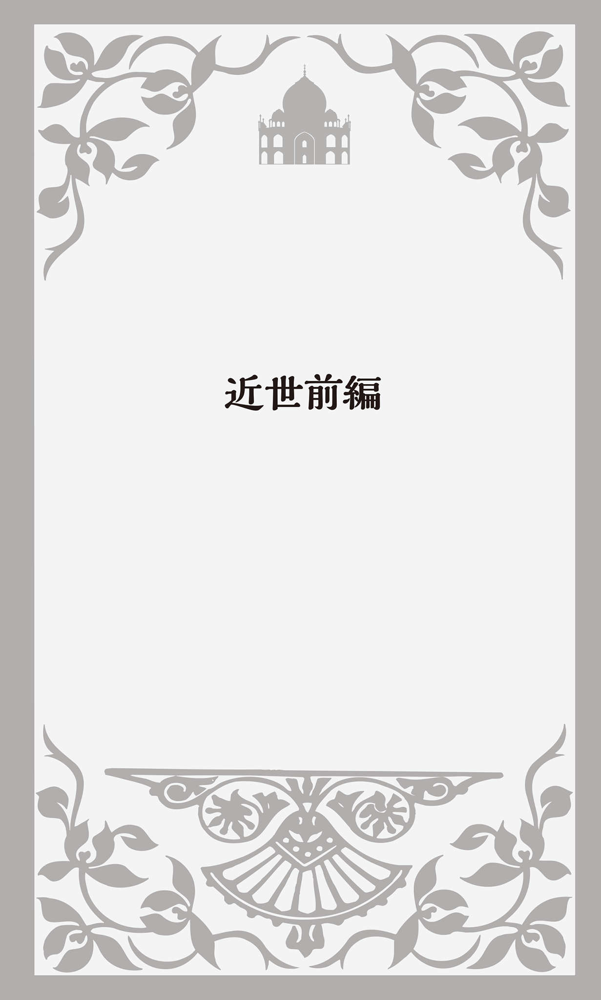
Renaissanceと英語
14世紀にイタリアを中心に巻き起こった「ルネサンス」は、中世のキリスト教的な硬直した世界観からの解放を求め、人間らしい生き方を追究しようとする文化・精神運動だった。Renaissanceはフランス語で「再生」を意味する。古代ギリシアやローマを理想として、その文学・美術・思想文化・建築などを再び蘇らせようとしたのだ。
ルネサンスの思想は、イタリアからアルプス山脈を越えてヨーロッパ中央部に広がり、少し遅れて16世紀にイングランドに達した。この国のルネサンスは文芸復興運動の色彩がより強かった。古典研究が盛んになり、多くのラテン語やギリシア語由来の英単語が使用されるようになったのである。
この頃、英語に借用されたラテン語は1万語もあったとされるが、今ではその半分が消えてなくなってしまったという。代表的な単語はexplain「説明する」、communicate「伝える」、anonymous「匿名の」などである。ギリシア語ではmathematics「数学」、physics「物理学」、economics「経済学」などの学問名やtheory「理論」、analysis「分析」、cube「立法体」などの学術用語があった。英語が時代とともに深化し洗練されたものになっていったことが分かるだろう。
古典の翻訳も大量に行われた。翻訳者がギリシア語やラテン語とピッタリの英語を思いつかなかった場合には、原文の単語をそのまま使った。chaos「混沌」、catastrophe「破局・大災害」、pneumonia「肺炎」、crisis「危機」、scheme「計画、案、陰謀」などは、スペリングだけを英語風に変えたものだ。
中世において、イスラム帝国は全ての学問が最高の水準にあった地域だった。アラビア語の学術書の翻訳も進み、たくさんの単語が英語に入ってきた。フランス語やイタリア語などを経由して英語となったものも多い。algebra「代数学」、zero「ゼロ」、average「平均」、alchemy「錬金術」などがその代表的な単語である。
「免罪符」はpardon
この頃もうひとつ大きな歴史的な動きがあった。それがthe Reformation「宗教改革」だ。ドイツのヴィッテンベルク大学神学教授だったMartin Luther「マルティン・ルター」（1483～1546）
は、ローマ教会が「免罪符」（「
「免罪符」は英語でindulgenceと言う。この単語には「甘やかし、寛大」という意味もある。形容詞のindulgentは「甘やかす、寛大な」、動詞はindulgeで「欲望・快楽にふける、甘やかす」という意味だ。indulgeone's hobbyは「道楽にふける」、indulge in drinkingで「酒におぼれる」、indulge a childなら「子供を甘やかす」となる。「免罪符」は人々を"甘やかす"札だったのである。
もうひとつ「免罪符」を意味する英語があった。それが何とpardonなのである。これを知った時、私は本当に驚いてしまった。人に軽くぶつかった時などに"Pardon."「失礼」と謝ったり、相手が言ったことがよく分からなかった場合に"I beg your pardon?"「すみませんが、もう一度おっしゃっていただけますか？」などとよく使う。何と軽い表現なのだろう。pardonには「恩赦、赦免」という意味もあるにはあるのだが、「ごめんちゃい」と言って神に赦しを請い、免罪符を持っていれば後はどうにかなるだろうという軽薄な響きを感じてしまうのは私だけだろうか？
実際、ルターが経験したこんなエピソードがある。ある日、道を歩いていると、道端に寝転んでいる酔っぱらいがいた。ルターが助け起こして生き方を改めるように諭すと、「大丈夫さ。だって俺は免罪符を持っているんだから」と答えたという。
1521年にルターは教皇から破門されるが、ザクセン選帝侯（神聖ローマ帝国皇帝の選挙権を持つ有力諸侯。「選挙侯」とも呼ばれる） FriedrichⅢ「フリードリヒ3世」（1463～1525） の庇護のもとでラテン語の新約聖書をドイツ語に翻訳する。当時、聖職者や一部の貴族を除きラテン語を読める人は少なく、庶民は聖書を目にしたこともなかった。もちろん中身を正しく理解している人はほとんどいなかった。
宗教改革は、ドイツ人Gutenberg「グーテンベルク」（1400?～1468） が改良した活版印刷技術によって、ドイツ語聖書が広く行き渡ったことで促進された。従来の写本よりも、はるかに早く印刷・製本ができ安価になったためだ。こうして民衆は、キリスト教の教義に直接触れることができるようになった。
ProtestantとCatholic
ルターは「改革」を起こそうなどとは考えてはおらず、ただ神の教えに忠実であろうとしただけだった。だが、彼の教えはザクセン選帝侯だけでなく他の諸侯たちにも受け入れられるようになり、彼らはカトリック教会の権威から離れたのだった。
ルターの教えはProtestant「プロテスタント」（新教）と呼ばれるようになった。「抗議する人」という意味だ。1526年に皇帝カール5世が信教の自由を認めたものの、3年後に取り消したのだった。これに対して、ルター派の諸侯たちが「抗議文」を提出したことに由来する。
ローマ教会はCatholic「カトリック」（旧教）と呼ばれる。日本語では「カトリック」とも「カソリック」とも言うが、前者はオランダ語・フランス語、後者は英語の発音によっている。ギリシア語のkatholikos 、「カトリコス」、ラテン語のcatholicus 「カトリクス」から来ており、ともに「全般的な、普遍的な」という意味だった。そこから「全てのキリスト教徒」を意味するようになり、異端に対する「正統教義」、さらにはこの後述べる東西分裂後の「ローマ教会」というふうに意味が変化したものだ。英語ではcatholicと最初を小文字にすると、形容詞で「偏らない、心の広い、全般にわたる、普遍的な」という意味にもなる。
Catholicという単語に関連してぜひ紹介したいのが、アメリカで使われるIs the pope Catholic?という口語表現だ。popeとは「ローマ教皇」のことで、「ローマ教皇はカトリックなの？」という意味だ。
例えば、ボストン出身で野球が大好きな友達に"Are you a Red Sox fan?"「君はレッドソックスのファンなの？」と聞いたとしよう。"Is the pope Catholic?"「ローマ教皇はカトリックかい？」という答えが返ってくるかもしれない。これは宗教とは全く関係ない。答えが"Yes"以外にない質問を受けて「分かりきったことを聞くなよ、当たり前だろう」、あるいは「そんなことも知らなかったのかい？」という時に使うユーモラスな表現だ。
蛇足だが、これと同じ意味の表現にDoes a bear shit in the woods?がある。ちょっと下品で不謹慎な表現なので意味を記すのははばかられる。辞書を引いて調べてほしい。
「正教会」はOrthodox
キリスト教の三大宗派にはプロテスタント、カトリックに加えて、もうひとつ「正教会」がある。英語ではthe Orthodox Church あるいはthe Eastern Orthodox Church「東方正教会、東方教会」と言う。orthodoxとは「正統的な」という意味で、ギリシア語のorthos 「正しい、まっすぐな」とdoxa 「意見、通念」からなる言葉だ。
東方正教会はthe Greek Orthodox Church「ギリシア正教会」、the Russian Orthodox Church「ロシア正教会」などとも呼ばれる。それらは正確に言えば正教会の地域ごとの「キリスト教組織」のことであり、同じ教義を持つ同一のキリスト教なのである。
1054年、ローマ教皇（西方教会）とコンスタンティノープル総主教（東方教会）が、教皇首位権（カトリック教会においてローマ教皇が全司教のトップであるとする考え方） をめぐって対立し相手を互いに破門する。その前から聖像崇拝を奨励するか禁止するか、政治的保護を誰に求めるかといった問題で亀裂を深めていたが、これ以降ローマ教会は西ヨーロッパを中心に、東方教会は東ヨーロッパで、同じカトリックでありながら異なる教義や儀礼を持つ宗教として発展することになる。
ローマ教皇がコンスタンティノープル総主教と会談し、相互破門を取り消して和解するのは20世紀に入った1964年のことだった。さらに東方正教で多くの信者を抱えるロシア正教とは政治的な問題もあり
イギリスの宗教改革
イングランドでも、1534年にHenryⅧ「ヘンリー8世」（在位1509～1547） がローマ・カトリック教会から離脱してthe Church of England「イングランド国教会」（英国国教会）を創立した。これはヨーロッパ大陸における宗教改革とは異なり、ヘンリー8世の個人的な事情によるものだった。
ヘンリー8世はもとは信心深いカトリック教徒で、ヨーロッパで起こっている宗教改革には強く反対しており、ローマ教皇からは「信教の擁護者」と称賛されていたほどだった。しかしスペイン出身の王妃キャサリンとの離婚問題が生じてからは、教皇への反発を強める。教皇が離婚を認めなかったからだ。カトリックの教義では離婚は禁止されている。
しかしヘンリー8世は強行突破する。イングランド国内のカンタベリー大司教にキャサリンとの結婚を無効にさせ、恋人のアン・ブーリンとの結婚を認めさせたのである。
教皇がヘンリー8世を破門すると、これに対抗してヘンリー8世は1534年the Act of Supremacy「国王至上法」（首長令）を発布し、自らを首長とするthe Church of England「イングランド国教会」を創設してしまう。国王至上法とは「イングランド国王をイングランド国教会の地上における唯一最高の首長とする」という考え方である。教会や修道院の土地・財産を没収し、国の所有としたことで、王室の財源は潤い、王権はより強固なものとなった。
そんなに大変な思いをして離婚したヘンリー8世だったが、アン・ブーリンと再婚するとすぐにジェーン・シーモアという愛人ができる。離婚に応じようとしないアンに対して、密通をでっち上げて処刑してしまう。アン・ブーリンが王妃だったのは、たったの1000日ほどだった。
トマス・モアとUtopia
ヘンリー8世のイングランド国教会の創設に猛反対したのが、"Utopia"『ユートピア』の著者として知られるThomas More「トマス・モア」（1478～1535） だった。思想家・哲学者であっただけではなく、ヘンリー8世に仕える「大法官」でもあった。大法官とは王政庁を指揮して国の法令などを定めて発令する最高位の官僚のことである。
そんなトマス・モアがヘンリー8世に反旗を翻して大法官を辞任し、「国王至上法」に反対したのである。彼は査問委員会にかけられ、反逆罪でロンドン塔に幽閉され斬首刑に処せられた。
トマス・モアが『ユートピア』を発表したのは1516年、処刑される19年前のことだった。utopiaという言葉はトマス・モアがつくった造語で、ギリシア語の「ū （否）＋topos （場所）」からできている。「どこでもない場所・国」という意味だ。
『ユートピア』はラテン語で書かれていて、正式タイトルはとても長かった。いろいろな翻訳が試みられているが、私は「国家の最高の状態、および新しい島ユートピアについての、楽しく有益な真の金のようなささやかな本」と訳出してみた。このタイトルで想像できるかもしれないが、トマス・モアは現実のイングランドを風刺・批判しながら、「ユートピア」という架空の島を理想的な国として描いたのだった。
この島では、人々はみな自由平等だが個人の資産所有は認められていない。労働に従事する義務があるが、労働時間は1日6時間で、失業は根絶されている。ちょっとどうかと思うが、各家庭2人までの奴隷を所有することが認められていた。21世紀の現在の問題を先取りしたものも多かった。福祉政策が進んでおり医療費も無料で、驚いたことに安楽死も承認されていた。信仰の自由も認められていて、それぞれが他の宗教には寛容だった。
ちなみに、19世紀にはdystopiaという反対語も生まれた。dys- はギリシア語で「困難」、-topos は前述のように「場所」を表し、utopiaとは反対の「困難な社会」のことだ。「暗黒郷、地獄郷」と訳されることもある。社会思想家John Stuart Mill「ジョン・スチュアート・ミル」（1806～1873） が演説の中でこの表現を使った。
表面的にはユートピアのようであるが、実際に内実を見ると多くの問題や課題が山積している社会のことを言う。私の知り合いのアメリカ人は、"Hawaii looks like a paradise, but it actually is a dystopia."「ハワイはパラダイスのように見えるけど、実際はディストピアなんだ」と言っていた。"地上の楽園"と呼ばれ、数多くの観光客が訪れているが、現実的にはいろいろ解決しなければならない問題が多い場所なのだと言う。
「理想郷」という英語
utopiaは日本語でも「ユートピア」と言うが、「理想郷」とも訳される。他に「桃源郷」などという言葉もある。これは中国の詩人、
英語の理想郷には「桃」ではなくlotus land「ロトスの国」という表現がある。lotusは「蓮」のことなので東洋の仏教思想から来たものかと思っていたら、そうではなかった。古代ギリシアの詩人ホメロスが叙事詩『オデュッセイア』の中で描いた理想郷のことで、lōtos 「ロトス」という想像上の植物の実を食べると夢心地になり大きな幸福感に満たされたのだという。lotus-eaterと言えば「安逸をむさぼる人」という意味だ。この夢の国は北アフリカの地中海沿岸にあるとされ、訪れる旅人は故郷も家族のことも忘れ、死ぬまでそこに住み続けたのだった。
古代ギリシアのペロポネソス半島中央部にもArcadia「アルカディア」（英語の発音は「アーケィディア」） という「理想郷」があったとされている。この地名は今も残っており、ギリシア神話に登場するゼウスと狩猟の女神アルテミスの侍女カリストーの子Arkās 「アルカス」に由来する。農耕に適さない貧しい山岳地帯で孤立していたため、戦争に巻き込まれることが少なく、人々がのんびりと牧畜を営む平和な土地だった。故に古代ギリシアの牧歌的理想郷としてヨーロッパの絵画にも描かれている。Arcadiaの形容詞がArcadian、「牧歌的な、田舎風の」という意味になる。
日本でも最もよく知られているある種の「理想郷」がparadise「パラダイス」だろう。「創世記」に描かれている「エデンの園」、そして神からの救済を受けた人の行く「天国」から「楽園」「悩みや苦しみのない楽しい場所」という意味でも使われる。
NeverlandはNever-never landとも言い「どこにもない国」という意味だ。イギリス・スコットランドの作家James Barrie「ジェームズ・バリー」（1860～1937） の小説"Peter Pan"『ピーター・パン』の中に出てくる、親とはぐれ年を取らなくなった子供たちが妖精と暮らす架空の「夢の国」のことだ。そういえば、故Michael Jackson「マイケル・ジャクソン」（1958～2009） がカリフォルニア州サンタバーバラに所有していた自宅兼遊園地もNeverlandと名づけられていた。
もうひとつ、「理想郷」を意味する英語にShangri-la「シャングリラ」がある。1933年にイギリスの作家James Hilton「ジェイムズ・ヒルトン」（"Goodbye, Mr. Chips"『チップス先生さようなら』を書いた小説家としても有名） （1900～1954） が発表した長編小説"Lost Horizon"『失われた地平線』に登場するチベット奥地の「楽園」のことだ。小説がヒットしハリウッド映画にもなったことで、この架空の地名が「理想郷」という意味で使われるようになったのである。
叩かれる少年
自らの離婚のために国の宗教を変えたヘンリー8世が1547年に亡くなると、息子のEdwardⅥ「エドワード6世」（在位1547～1553） が即位する。この王は大陸で巻き起こっている宗教改革運動に共感し、熱心なプロテスタントとなった。9歳で即位したものの、病弱だったため16歳の若さで亡くなったが、死後プロテスタント信者たちからは純真な少年王として偶像視されるようになる。
1881年にアメリカの作家Mark Twain「マーク・トウェイン」（1835～1910） が発表した"The Prince and the Pauper"『王子と乞食』は、このエドワード6世をモデルとして書かれた。その小説の中にwhipping boyという表現が出てくる。whipは名詞では「ムチ」、動詞では「ムチで打つ」という意味で、「王子の代わりにムチで打たれる少年」のことだ。
当時、高貴な子供を
この作品にはHumphrey Marlow「ハムフレイ・マアロウ」というwhipping boyが登場する。マーク・トウェインは、イングランドの宮廷にこのようなしきたりがあったという史実を知り、自らの小説に採り入れたのだという。
エドワード6世は品行方正でいたずらをする少年ではなかったが、実際にBarnaby Fitzpatrickという身代わりの少年がいたという。また17世紀にピューリタン革命で処刑されるチャールズ1世にはMungo Murrayというwhipping boyがいたという記録も残っている。
現在の英国王室にはwhipping boyというしきたりはもう残っていないだろうが、その表現だけは今でも使われている。「他人の罪を負わされる人、身代わり」という意味だ。例えばJim was made a whipping boy for his boss's mistakes.と言うと「ジムは上司の身代わりとなってミスの責任をかぶった」ということになる。
カクテルBloody Mary
エドワード6世が16歳で亡くなると、次にヘンリー8世と離婚したキャサリンの娘メアリーがMaryⅠ「メアリー1世」（在位1553～1558） として即位する。メアリーの母キャサリンはカトリック国スペインの出身で、メアリー自身も熱心なカトリック信者だった。
何と彼女は国の宗教政策を180度転換させる。ローマ・カトリックと和解すると同時に、国内のプロテスタントに厳しい弾圧を加え、カトリックに改宗しない者を容赦なく処刑したのである。
そのために、彼女にはBloody Mary「血まみれのメアリー」というニックネームがついた。カクテルの「ブラッディ・メアリー」（「ブラッディ・マリー」とも言う） はここから来ている。ウォッカをベースにトマトジュースを混ぜてレモン汁をたらしたカクテルのことだ。トマトジュースの赤い色が、メアリーが処刑した人々の「血」を連想させたのである。
「処女王」エリザベス1世
次に即位したのが、ヘンリー8世とアン・ブーリンの娘ElizabethⅠ「エリザベス1世」（在位1558～1603） である。恐怖と失意の中で少女時代を過ごした苦労人だった。父親によって母親が処刑され、プロテスタントの反乱への関与を疑われてロンドン塔に幽閉されていた。もう少しで死刑になるところだったともいわれる。
一生結婚しなかったため別名the Virgin Queen「処女王」と呼ばれたが（臣下の中に恋人がいて、彼の部屋に入り浸っていたという噂もあった） 、国民から愛されGood Queen Bess「良き女王ベス」というニックネームもついた。BessはElizabethの愛称だ。
なぜエリザベス1世は結婚をしなかったのだろうか？ それは彼女が自らの結婚が重要な外交カードだということがよく分かっていたからだ。事実、多くの求婚者がいたが、イングランドにとって最も有利な結婚をすることを思案しているうちに機会を失ってしまったのだった。大国の王や王子と結婚することで、その国とイングランドの新たな力関係が生じ、国内を大混乱に陥れることを少女の頃に目の前で見てきた。だから、結婚に慎重にならざるをえなかったのである。
エリザベスはI have already joined myself in marriage to a husband, namely the Kingdom of England.「私はすでにひとりの夫、すなわちイングランド王国と結婚して一緒になっています」という名言を残している。
生きるべきか、死ぬべきか
イングランドのルネサンスは、エリザベス朝において演劇と文学で花開いた。その代表といえば、何といってもWilliam Shakespeare「ウィリアム・シェークスピア」（1564～1616） だろう。イングランド中部のStratford-upon-Avon「ストラトフォード・アポン・エイヴォン」の裕福な家に生まれたが、父が没落し正規に受けた教育は小学校までだった。
18歳の時にAnne Hathaway「アン・ハサウェイ」と結婚した。彼女はシェークスピアより8歳年上だった。私の友人に「シェークスピアとアン・ハサウェイの年の差はいくつか？」という質問を酒席でのジョークの持ちネタにしている男がいる。答えは「アン、ハッサイウエ」、つまり「アン、8歳上」だ。いつも、あまりおもしろくない"おやじギャグ"だなあと思いながら聞いている。
アン・ハサウェイの家はストラトフォード郊外に現存しており、シェークスピアの生家とともにイギリス中央部の観光の目玉となっている。訪れたことはなくても、写真や絵で見たことのある人もいることだろう。とても趣のある茅葺き屋根の家だ。
シェークスピアは22歳の時に、故郷を捨ててロンドンに出る。最初は劇場の馬番をしていたというが、その後俳優となり、26歳の頃から芝居の台本を書き始めた。"Hamlet"『ハムレット』、"Romeo and Juliet"『ロミオとジュリエット』、"The Merchant of Venice"『ヴェニスの商人』、"The Tragedy of Julius Caesar"『ジュリアス・シーザー』など数多くの傑作を残した。これらの作品には、当時の英語がそのままの形で残っており、言語学的にも貴重な史料となっている。
シェークスピアは3000にもおよぶ新しい単語や表現をつくり出したといわれていて、その多くが今も使われている。例えばcritic「批評家」とcritical「批評の」、advantageous「有利な」、magic「魔法」、majestic「威厳のある」、charm「魅力」、generous「寛容な」などである。熟語ではplay on words「
だが何といっても有名なのが、『ハムレット』の中に出てくるTo be, or not to be, that is the question.というセリフだろう。普通「生きるべきか、死ぬべきか。それが問題だ」と訳すが、他にもいろいろな翻訳が試みられている。明治時代には谷田部良吉が「ながらふべきか、しかしまた、ながらふべきにあらざるか、それが思案のしどころぞ」という訳をあてているし、大正時代には久米正雄が「生か死か、それが問題だ」、昭和に入ると坪内逍遥は「世に在る、世に在らぬ、それが疑問ぢゃ」、最近では翻訳家の小田島雄志氏が「このままでいいのか、いけないのか、それが問題だ」（『ハムレット』白水社） と訳している。
このセリフはいろいろ応用が利く。イギリス人やアメリカ人でもbeのところに別の動詞を入れて、洒落めかして使うことが多い。"To marry, or not to marry, that is the question."「結婚するかしないか、それが問題だ」とか、"To study, or to play baseball, that is the question."「勉強するか野球をするか、それが問題だ」などと言うことがある。
ユリに金メッキ
同じく『ハムレット』に使われている表現にgrow to seedがある。go / run to seedとも言う。植物が「種子ができる段階に入る」ということだが、それはつまり「盛りが過ぎる」ことを意味する。植物の一番華やかな"盛り"は、やはり何といっても花を咲かせる時だ。そのような大切な役割を終えてしまうと、後は種ができる段階に入るのである。この表現は植物だけでなく、人が「衰える、みすぼらしくなる」、町などが「寂れる、廃れる」という意味でも使われる。
これもシェークスピアによって生み出された表現だが、gild the lilyは「ユリに金メッキをする」という意味だ。"King John"『ジョン王』の中にこんなセリフがある。"To gild refined gold, to paint the lily ... is wasteful and ridiculous excess."「黄金に金メッキをし、ユリに絵具を塗る......それはムダで、滑稽で、よけいなこと」。このgild refined gold, to paint the lilyの真ん中をカットしてgild the lily「ユリに金メッキをする」という表現が有名になったものだが、後のpaint the lily「ユリに絵具を塗る」も同じ意味で使われることがある。
どちらも、すでに完璧な美しさを持った物なのに、さらに装飾を加えてダメにしてしまうという意味だ。日本語なら「蛇足」ということになる。
バラの名前
『ロミオとジュリエット』の舞台は、14世紀のイタリアの都市ヴェローナ。そこでは皇帝派のモンタギュー家と教皇派のキャピュレット家の間で、血で血を洗う抗争が繰り広げられていた。そうした中、モンタギュー家の一人息子ロミオとキャピュレット家のジュリエットが深く愛し合うようになったことで始まる悲劇である。
2階の窓辺でジュリエットが嘆く有名なシーンがある。"O Romeo, Romeo! Wherefore art thou Romeo?"「おお、ロミオ、ロミオ！ どうしてあなたはロミオ？」（『ロミオとジュリエット』小田島雄志訳・白水社） 。これに続けて口にしたのが"A rose by any other name would smell as sweet."という言葉だ。「バラと呼んでいる花を別の名前にしてみても美しい香りはそのまま」（同） ──何と洒落たセリフだろうか。
ちなみに、イタリア語版の『ロミオとジュリエット』ではジュリエットがGiulietta 「ジュリエッタ」となる。イタリアではMarco 「マルコ」やFrancesco 「フランチェスコ」などのように、男性の名前の最後は"o"となる。だから「ジュリエット」では男性の名前になってしまうからである。
女性の名は"a"で終わるのが基本だ。だからイタリアに住む日本人女性で「ユキコ」とか「サチコ」という名前の人は、「ユキカ」「サチカ」と呼ばれることがある。
ちんぷんかんぷん
It's Greek to me.も、よく知られている表現だ。直訳すれば「それは私にとってギリシア語だ」となる。『ジュリアス・シーザー』の中で「ちんぷんかんぷん」という意味で使われている。
この劇は、シーザーがポンペイとの戦争に勝利しローマに
その話を仲間のキャスカから伝え聞いたシーザー暗殺の首謀者キャシアスは、彼に「その時、元老議員のシセローは何か言っていたか？」と尋ねる。キャスカは"Ay, he spoke Greek.「言った。ギリシア語を喋った」（『ジュリアス・シーザー』福田恆存訳・新潮文庫） と答え、こう続けたのだった。"Those that understood him smiled at one another and shook their heads; but, for mine own part, it was Greek to me."「解った連中はおたがいに顔を見あわせて、にやにや笑いを浮かべ、首を振っていたが、このおれには、文字どおり、ちんぷんかんぷんのギリシア語だった」（同）
古代ローマにおいても、ギリシア語はとても難しい言葉で、一部の教養人にしか理解することはできなかったのである。この表現は現在でもよく使われていて、His lecture was Greek to me.「彼の講演は、私にはまるっきり理解できなかった」などと言う。
他にも「ちんぷんかんぷん」を意味する英語がある。Double Dutchだ。Dutchとは「オランダ語（の）」「オランダの」「オランダ人（の）」という意味だ。オランダ語がdouble（2倍）とは「理解できないオランダ語のさらに2倍難しい」という意味だという。またオランダ人が2人で喋っていると、何を言っているのか分からないという意味だという説もある。This contract is double Dutch to me.で「この契約書は私には理解できない」となる。オランダとイングランドは何度も戦争をしている"犬猿の仲"だ。そのためDutchを使った英語表現には、このようなネガティブなものが多い。
緑は嫉妬の色
"Othello"『オセロ』にはgreen-eyed monster「緑の目をした怪物」、『ヴェニスの商人』にもgreen-eyed jealousy「緑の目をした嫉妬」という表現が出てくる。英語のgreen「緑」は嫉妬の色なのである。green with envyで「とても嫉妬している」という意味になり、例えばWhen his colleague got promoted, Tommy was green with envy. で「同僚が昇進した時、トミーは激しく嫉妬した」となる。
だが、なぜ英語では「緑」が嫉妬の色なのだろうか？ 古代ギリシアの医師Hippokratēs 「ヒポクラテス」（前460頃～前377頃） が「四体液説」という学説を唱えた。体内には血液・粘液・黄胆汁・黒胆汁の4種類の体液が流れていて、その調和によって身体と精神の健康が保たれ、バランスが崩れると病気になるというものだった。
この学説においては、「嫉妬」という感情に捕らわれると緑色の「黄胆汁」の分泌が過剰になり、顔色も変わるとされていたのだ。ちなみに「血液」の多い人は楽天的、「粘液」は鈍重、「黒胆汁」は陰鬱、「黄胆汁」は短気な気質だとされた。
gagは演劇用語
gag「ギャグ」は現在の日本でも「一発ギャグ」などと言い、観客を笑わせる「滑稽な動作やセリフ」のことだ。しかし、これがシェークスピアの時代から使われている演劇用語だということを知っている人はそれほど多くないだろう。
gagは、もともと芝居の中で台本の通りにセリフを言うのではなくて、話の筋から離れて行う即興の演技のことを言ったのである。役者が舞台の上で頭が真っ白になってしまいセリフを忘れた時などにも、このgagで時間を稼いで思い出したのだという。そのgagから芝居の元の筋に戻すのも役者の力量のうちだった。役者が今日はどんなgagを披露するかも観客の大きな楽しみだったのである。
gagには、もうひとつ「声が出せないように口に物を詰め込む」「猿ぐつわをはめる」という意味もある。そこから「言論を抑圧する」となった。gag the pressと言えば「出版の自由を束縛する」という意味だ。私語を交わしていて舞台の演技に集中してくれない観客に対して、役者が予定外のおふざけをして笑いを取り、舞台に注意を向けさせて「口をふさいだ」ことがgagのもうひとつの意味になったともいわれている。
「大根役者」はham actor
日本では、演技の下手な役者のことを「大根役者」と言う。諸説紛々なのだが、大根は「白い」から「
英語では「大根役者」のことをham actorと言う。一説によれば、シェークスピアのHamletから来ているという。「ハムレット」は最も頻繁に上演された芝居で、下手な役者が演じることも多かった。Hamletとamateur「素人、アマチュア」が結合してhamatuer となり、それがhamと短くなったものだという。
もうひとつ、下手な役者は貧乏でメイクを落とす時に安いham fat「ハムの脂肪」を使ったからだという説もある。そこからhamfatter「ハムの脂肪を塗る人」が「下手なくせに大げさな演技をする役者」という意味になった。
最も
私がham actorという英語を覚えたのはもうずいぶん昔のことで、映画"Back to the Future"を見た後だった。30年後の未来から来たという主人公Martyのことを発明家のDocが疑い、「それじゃあ、大統領は誰だ？」と尋ねると、「Ronald Reaganだよ」と答える。レーガンは当時俳優をしていて名はある程度知れてはいたが、大統領になるなどとは誰も想像もしていなかった。
その時ドクは、日本語字幕によれば「レーガン？ あの大根役者のか。じゃあ副大統領はジェリー・ルイス（1950年代に大人気だった喜劇俳優） で、ファースト・レディーはジェーン・ワイマン（映画女優でレーガンの最初の妻） か」と言ったのだった。
その時に、ふと「大根役者」って英語では何というのだろうと思い、家に帰って和英辞典を引いたらham actorが載っていたのだった。それ以降ham actorは絶対に忘れられない英語となった。
その後、テレビの吹き替え版でもこの映画を放送していた。ドクの声は三宅裕司で、今度は「あの三流役者のか」となっていた。テレビ局の自主規制で、大国アメリカの大統領に対して「大根役者」というような侮蔑的な表現を使うのはまずいので、少し緩やかな表現にしたのだろうと思った。でも、よく考えてみると「大根役者」も「三流役者」も俳優をバカにした表現であることに変わりない。
そんな記憶もあり、私は英語のセリフでもham actorと言っていると信じ込んでいたのだった。しかし、この本を書くにあたって、念のためにDVDを見てみたら、"Ronald Reagan?!? The actor?!?"となっており"ham"は入っていなかった。日本語の字幕の印象が強かったことによる思い違いだったのである。
ちなみにレーガン元大統領は、生前この映画が大好きで、この自分の名前が出てくるシーンがいたくお気に入りだったという。ホワイトハウス内の映写室で初めて見た時などは、映写技師に映像をストップさせて、このシーンをもう一度見直したという逸話も残っている。
シェークスピア修正版
シェークスピアが亡くなってからおよそ200年後のこと、スコットランドのThomas Bowdler「トマス・バウドラー」（1754～1825） という医師が"The Family Shakespeare"『19世紀英国家族のためのシェイクスピア全集』という10巻の本を出版した。
シェークスピアの作品は19世紀になっても依然として大人気だったが、
そのBowdlerの修正が遠慮容赦ないものだったので、彼の名前からbowdlerizeという動詞ができた。著作物の中の「不適当な箇所を削除・修正する」ということだが、さらに「改竄する」「検閲する」という意味でも使われるようになっている。
風刺小説『ガリヴァー』
"Gulliver's Travels"『ガリヴァー旅行記』を書いたアイルランドの作家Jonathan Swift「ジョナサン・スウィフト」（1667～1745） が生まれたのは、シェークスピアの死後約50年のことだった。
スウィフトはとても多くの作品を残しているのだが、やはり有名なのは『ガリヴァー旅行記』だろう。実は正式なタイトルはGulliver's Travelsではなく、"Travels into Several Remote Nations of the World"「地球上の遠くにある諸国への渡航記」。そのタイトルの後に"By Lemuel Gulliver"「レミュエル・ガリヴァーによる」と記されていることで、ガリヴァーはこの小説の主人公というより、彼自身が実際に体験したことを自ら綴ったという形になっていることが分かる。子供向けの童話だと思っている人も多いと思うが、当時のイングランドの国内や外交問題を風刺したもので、なかなか奥が深い。
一番よく知られているのが第1巻の冒頭で、海岸に打ち上げられて気絶していたガリヴァーを大勢の小人たちが縛り上げる場面だ。絵本で見たという方も多いことと思う。この架空の国の名前がLilliput「リリパット」で、その国の国民がLilliputianだ。この造語は、その後「ちっぽけな（人）」とか「狭量な（人）」という意味の英語になった。
リリパットの住人は、やがてガリヴァーの優しく温かい人柄を理解し受け入れるようになる。この国と交戦状態にあったのが対岸のBlefuscu「ブレフスキュ」という国だ。この両国はイングランドとフランスを連想させるのだが、戦争となった理由というのがおもしろい。「ゆで卵の殻の正しいむき方は、丸みのある大きい端からむくのか、小さく少し尖った方からむくのか」という意見の相違だったのである。イギリス国内のイングランド国教会とカトリックの争いを髣髴させる。もともと国王の離婚問題という個人的な問題から引き起こされたものであり、2つの宗教には聖書の解釈や教義、典礼にも、それほど大きな差がないことを風刺したものだった。
第2巻では、ガリヴァーはBrobdingnag「巨人国」に上陸する。ガリヴァーをつかまえた身長18メートルもある農夫は、ガリヴァーを見世物にするが、その後でブロブディンナグ国の王妃に売り飛ばす。王妃はガリヴァーをおもちゃ扱いするが、国王はガリヴァーに興味を抱き、彼の故国や社会に関していろいろな質問をする。その答えが、そのままイングランドへの強烈な批判となっているのである。
ガリヴァー日本へ行く
第3巻はあまり知られていないので、中身を語ると驚かれる方もいると思う。海を漂流して無人島にたどり着いたガリヴァーを助け出したのがLaputaという巨大な「空飛ぶ島」だった（ちなみにla puta 「ラピュタ」はスペイン語で「娼婦」のこと） 。そう、宮﨑駿監督のアニメ映画「天空の城ラピュタ」は、このLaputaから来ている。
この国の住民は数学や天文学などの学問が好きで、いつも深い考えごとに熱中している。それ以外のことにはまるでうわの空で、危ないことこの上ない。そのため常に召使いを付き添わせ、正気に戻らなければならない時には口や耳を叩かせるのである。これは万有引力の法則を発見したニュートンへの痛烈な皮肉だとされる。
この天空の島「ラピュタ」は、地上にあるBalnibabi「バルニバービ国」を支配し搾取していた。そこでは住人がしばしば反乱を起こす。そのたびにラピュタは上空に飛んで行って、投石して鎮圧したり太陽や雨を遮って農業に甚大な被害を与えたりする。そのために病気も蔓延し多くの人が亡くなる。これがイングランドのアイルランド支配を揶揄していることが分かる。
ラピュタを後にしたガリヴァーはイギリスに帰る途中、何と日本にも立ち寄っている。Yedo「江戸」で将軍に謁見し、海で遭難した「オランダ商人」と偽って「祖国に帰りたいので、長崎まで送り届けていただきたいのです」と願い出る。そして何と「どうか、あの十字架踏みの儀式だけは勘弁していただきたいのです」と付け加えたのだった。将軍は「オランダ人で踏み絵をしたがらないのは、そなたが初めてだ」と訝りながらも、その願いを叶えたのだった。日本で行われた「踏み絵」のことが、この頃遠くヨーロッパでも知られていたことが分かる。
最後の第4巻では、Houyhnhnm「フウイヌム」という高貴で知的な馬の国に行く。一見平和で合理的な社会をつくっているが、フウイヌムたちはエリート意識を持ち官僚的で創造性に欠けていた。それはイングランドの貴族たちを揶揄している。
この国では、馬のフウイヌムがYahoo「ヤフー」と呼ばれる邪悪で不潔で野蛮な生き物を支配し、奴隷のように使役していた。毛深くて
だが、国の代表者が4年に一度野原に集い、56日続けられる会議で、ガリヴァーにこの国から出て行ってもらうことが決議されたのである。
Yahoo!といえば、アメリカに本社のあるインターネット・サービス会社と、その検索エンジンのことが思い浮かぶだろう。だが、なぜ社名がYahoo!なのだろうか？ 創業者のDavid Filo「デヴィッド・ファイロ」とJerry Yang「ジェリー・ヤン」は、自分たちを「ならず者」と思っていたので、『ガリヴァー旅行記』に登場するYahoo「野蛮な人間」からとったと言っている。だが、他にも"Yet Another Hierarchical Officious Oracle"「もうひとつの階層的でお節介な神託」の頭文字のYAHOOからつけたという説、yahoo「ヤッホー、やったー」という感嘆詞をかけているという説もある。
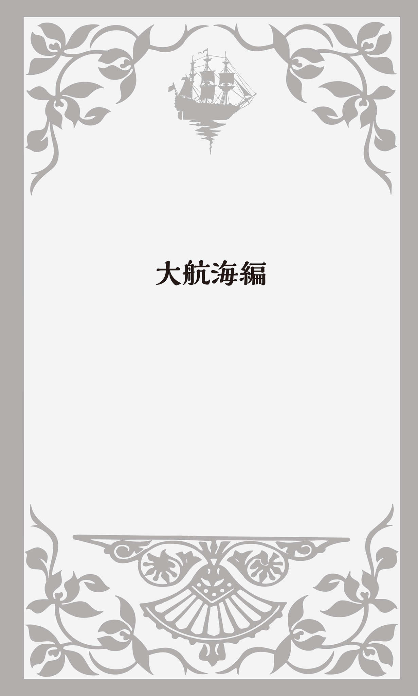
コロンブスとイサベル1世
1492年、イタリア・ジェノヴァ生まれのChristopher Columbus「クリストファー・コロンブス」（1451?～1506） が帆船で大西洋を横断し"アメリカ大陸"に到達した。最近では"発見"ではなく"到達"と表現することが多い。アメリカ大陸はずっと前から存在していた。"発見"がヨーロッパから見た発想だからだ。
このコロンブスに資金援助をしたのがスペイン（カスティリャ）女王のイサベル1世だった。この女王が〈近世前編〉に登場したイングランドのメアリー1世の祖母だと言うと驚かれる方もいるだろう。メアリー1世とは、あのプロテスタントを大量に処刑してBloody Mary「血まみれのメアリー」と呼ばれた女王だ。そのメアリーの母親、ということはイサベルの娘がヘンリー8世との離婚によって王妃の座を追われたキャサリン。この離婚騒動がきっかけで英国国教会が創設されたことは前述の通りだ。
メアリーの祖母でキャサリンの母だったイサベルも狂信的なカトリック信者だった。アラゴン王国のフェルナンド2世と結婚すると、イスラム教徒を追い出しスペインを統一する。そして、あの悪名高いthe Inquisition「異端審問」を行い、異教徒やキリスト教に改宗したユダヤ人など数多くの無実の人を処刑したのだった。まさに「この祖母にして、あの孫娘『血まみれのメアリー』あり」である。
そのイサベルの援助で、アメリカ大陸にたどり着いたコロンブスだったが、彼は最後までそこをインドだと信じたまま亡くなる。アメリカ大陸の先住民をIndian「インディアン」（スペイン語・ポルトガル語ではIndio 「インディオ」） （インド人）と呼んだのはこのためである。
その後イタリア出身のAmerigo Vespucci「アメリゴ・ヴェスプッチ」（1454?～1512） が探検した結果、アジアとは別の大陸だということが分かり、その名にちなんでAmericaと名づけられたのである。
ポルトガル人Ferdinand Magellan「フェルディナンド・マゼラン」（1480?～1521） は、1519年に西回りの航海に出て、南アメリカ大陸の南端を通って太平洋に出てフィリピンに達した。マゼランはそこで死亡したが、その船団の1隻がアフリカ南端を経由して1522年にスペインに戻り、史上初の世界周航を成し遂げ、地球が丸いことを実証したのである。羅針盤などの発明で航海技術が急速に発達したことにより、地球規模の航海が可能になったのだった。
ropeがなぜ「コツ」なのか?
「大航海時代」の到来によって、多くの船や海、航海術に関する英語が新たに誕生することになった。まずはrope「ロープ」から紹介しよう。もちろん「縄、綱」のことだ。ropeが何か難しいことをする時の「コツ」という意味でも使われることをご存じの方も多いと思う。「コツを知っている」をknow the ropesと言うし、「彼にコツを教えてやってください」ならPlease show him the ropes.となる。
私はコツのことをなぜropeと言うのだろうと長いこと疑問を持ちながらも、secret「秘訣」などと言うよりも口語的でカッコいいからと、そのまま使っていた。だが、いろいろ資料をあさっていたら「帆船のロープ」から来ていることが分かった。ベテランの船乗りが新入りの水夫に「ロープの扱い方」を教えたことから来ているというのだ。「ロープの扱い方の秘訣」、それが「コツ」だったのである。
今でもヨットに乗る人にとって、ロープをうまく扱えるかどうかが一番重要な操船技術なのだろう。ボーイスカウトやガールスカウトでも、真っ先に学ぶのはロープの結び方だ。自転車に一度乗れるようになれば何年たっても乗れるように、ロープの結び方は一度覚えれば決して忘れないといわれる。きっと「コツ」をつかんだからだろう。
junkは船乗りの言葉
最近よくjunk food「ジャンクフード」という言葉を聞くようになった。junkは「くず・廃品・つまらない物」という意味で、「高カロリー、高塩分で栄養バランスに欠けるスナック類」のことだ。不要の郵便物やEメールもjunk mail「ジャンクメール」などと言う。
このjunkが、もともと船乗りが使っていた言葉だと言ったら驚かれることだろう。junkはラテン語で「イグサ」を意味するjuncus 「ユンクス」から来ており、それでロープを編んだ。そこから船乗りは、もう使い物にならないボロボロの「ロープの切れ端」のことをjunkと呼んだのである。
junkの語源については、もうひとつ説がある。マレー語で「小さな帆船」のことをdjong と言い、マラッカにやって来たポルトガル人が「小さな帆船」のことをjunco と呼ぶようになった。それが船の上に積んである「ごみ」「ガラクタ」まで指すようになったのである。
タールの付いた人
hand over hand「手を交互に動かして、たぐって」という表現がある。熟練の船乗りが手を交互に動かしながら帆船のマストを上ったり、ロープを手でたぐり寄せる様子から生まれたものだ。似た表現にhand over fist「拳の上に手を」がある。「短期間で着実に、どんどん」という意味で、Tom is making money hand over fist.なら「トムはお金をガバガバ儲けている」という意味になる。
日本の英和辞典では「hand over hand=hand over fist」となっているものもある。何人かのイギリス人・アメリカ人に聞いてみたが、みんな同様にhand over handには「お金をどんどん儲けているというニュアンスはない」と言う。「その意味ならやはりhand over fistだ」と言うのである。確かに英英辞典では厳格に区別されている。
最近ではあまり使われなくなっているが、Jack tarという表現がある。これは「水夫、船員」のことだ。Jackは船乗りに多かった名前だ。ではtar「タール」とは何だろうか？ 昔、船乗りが着けていた外套や帽子はタールやペンキ、蠟、ヤニなどが塗ってある防水の布でできていた。その布自体、そしてその布でつくった外套や帽子、さらには「船乗り」もtarpaulin「ターポーリン」と呼ばれるようになった。それがtar「タール」と短くなったのである。
今でもtar「タール」とかcoal tar「コールタール」と言う。石炭や木材を加熱した後、冷却してつくる黒いネバネバした物質のことで、道路の舗装などにも使われている。
船で使うロープ、船体・甲板の木材や帆の布などにも防水や腐食防止のためタールが塗られていた。そのため水兵の服にも黒いタールの染みがついていることが多かったことも、Jack tarという表現が生まれた理由だった。
このtarは動詞では「タールを塗る」となるが、「汚名を着せる」「評判を傷つける」という意味でも使われることをご存じだろうか？ tarone with the same brushは直訳すると「同じ刷毛でタールを塗る」ということで、「同罪である」あるいは「汚名を着せる」という意味になる。
例えばAll the soccer fans were tarred with the same brush and called"hooligans."「サッカーのファンはみんな同じ汚名を着せられて"フーリガン"と呼ばれた」とか、Not all politicians are dishonest. Don't tar everybody with the same brush.なら「全ての政治家が不誠実というわけではない。みんなに汚名を着せないでほしい」のように使うことができる。
「船酔い」と「酒酔い」
英語の口語表現に興味のある人なら、under the weatherという表現をご存じかもしれない。「気分が悪い、体の具合がよくない」という表現だ。もともとはunder the influence of bad weather「悪天候の影響のもとで」で、それがunder the weatherと短くなったとされている。天気が悪くて海が荒れていると、船がひどく揺れて気分が悪くなるからだという。もうひとつ、暑くて湿度の高い天気が続くと疲労や倦怠感がたまり「体の具合が悪くなる」からだという説もある。
このunder the weatherには、もうひとつ「二日酔いで」という意味もある。航海に関連する英語には「船酔い」からの連想で「酒に酔った」という意味の表現が多い。
イギリスの口語にhalf seas over（海を半分渡って）という表現がある。これは「物事の途中で」ということだが、「酒に酔って」という意味にもなる。陸と陸の中間を越えたあたりは海の真っ只中で、波も高く船酔いする人が多かった。それを「酒に酔う」ことにかけたものだ。「飲酒量がその人の正気に戻るポイントを超えてしまった」というニュアンスもある。
three sheets in the windという表現も「泥酔して」という意味だ。この表現でのsheetsはベッドなどに敷くシーツではなく、船の帆を張ったり緩めたりする「ロープ」のことである。帆船をうまく走らせるには、ロープで帆を縮めたり広げたり、角度を変えたりして調節するのだが、ロープが緩かったり固定されていないと船は"風まかせ"になり、酔っ払いのように大きくよろめきながら航行する。甲板を歩く水夫も前後左右に体が揺れる。そこから船乗りたちは、「泥酔して」いる状態をthree sheets in the wind「風の中の」つまり「風に翻弄された3本のロープ」と呼んだのである。
ちなみに、four sheets in the windという表現もある。数がthree「3」からfour「4」に増えているので分かると思うが、酔い方がもっとひどく「へべれけに酔った、ぐでんぐでんの」という意味だ。a sheet in the windという表現もある。もう分かるだろう。a sheetと「ロープが1本」なので、「少し酔って」ということだ。
甲板を片づけろ!
clearと言うと、「晴れた、明るい、透明な」という形容詞を思い浮かべるが、動詞では「片づける、取り除く」という意味があることはご存じの方も多いことと思う。clear the table of dishesとかclear the dishes from the tableと言ったら、「食卓のお皿を片づける」ということだ。
clear the deckという表現がある。「船のデッキをきれいにする、甲板の上の散らかっているものを片づける」ということだ。これは「戦闘準備をする」という意味なのである。敵の船と戦おうという時に、甲板にある戦闘とは全く関係ない物を片づけてきれいにすることだ。clear the decks for actionとも言い、戦闘以外のことでも「邪魔な物を取り除いて、ある行動に集中するための準備を整える」ということも意味する。
cut and runという表現もある。「大急ぎで逃げる」という意味だ。これももともと船に関連する表現だった。船が
ビスケットは2度焼く
biscuit「ビスケット」は、フランス語の「bis （2度）＋cuit （焼かれた）」から来ている。ドイツ語でもビスケットはZwieback と言い、zwie （2度）とbacken （焼く）が結合した単語だ。
それがなぜ航海と関係あるのかと思われるかもしれないが、ビスケットはその昔、航海中の保存食だった。長い間そのままにしておいても腐りにくく、味も質もさほど変わらなかったからだ。念のために2度焼いて固くして、より長期保存が効くようにしたことが、biscuitの語源となっている。
turtle「亀」も水夫にとっての大切な食料だった。甲板の下に海水を入れる穴をつくって、その中に捕まえた海亀を積み重ねて押し込んでおいたのだという。そうすれば長い間生きていて、海亀の新鮮な肉が食べられたのだ。そのために多くの海亀が捕獲され、生息数は激減した。
そのturtleを使った表現にturn turtle「亀を裏返す」がある。これもやはり水夫たちが使い始めた表現だ。カリブ海周辺では、産卵するために浜辺に上がってくる海亀を捕まえるのは、とても簡単だった。とりあえず引っくり返しておけば、もう亀はどうしようもない。自分で腹ばいに戻って歩き出すことができないから、後でゆっくりと捕まえることができた。そこからturn turtleは「亀を裏返してつかまえる」という意味になった。
turn turtleには、もうひとつの意味がある。船乗りたちが「船が転覆してひっくり返る」という意味でも使い始めたのだ。転覆した船は、船腹を海面の上に出して、ただただ海面を漂うだけ。もう体勢を立て直して航海することはできない。それがひっくり返って足をバタバタさせてもがいている亀の姿を連想させたのである。そこから、船だけでなく自動車などが「ひっくり返る」こともturn turtleと言うようになった。
海の藻屑
やはり昔の航海はとても危険だった。Davy Jones' locker「デーヴィ・ジョーンズの監獄」という表現がある。「船員の墓となる海の底」のことだ。日本語では「海の
Davy Jonesを英和辞典で引くと「海の悪霊、海魔」と記されている。Davyはカリブ海周辺の言葉でduppy 「悪魔」から転化して人の名前になったもので、ウェールズの「船乗りの守護神」St. Davidの愛称でもある。
Jonesとは聖書に登場するJonah「ヨナ」という男のことだ。旧約聖書の"The Book of Jonah"「ヨナ書」には、こんな話がある。神からの使命を与えられたヨナが、厄介なことに巻き込まれるのはまっぴら御免だと言って船に乗って逃げてしまう。
海は大荒れになった。船乗りたちは口々に「誰のせいで、我々にこんな災難が降りかかったのか、はっきりさせようではないか」と言う。詰問されたヨナがしかたなくそれまでの経緯を話すと、みんな怒ってヨナを海に放り込んでしまう。すると海は急に静まったのだが、ヨナは大きな魚に飲み込まれてしまう......という話だ。
lockerを文字通り、所持品を入れておく「ロッカー、戸棚、箱」と解釈する説もある。ロンドンにDavid Jonesというパブ経営者がいた。その男が酔いつぶれた客を店のロッカーに閉じ込め、売り飛ばしては水夫にして金を儲けていたというのだ。
shanghaiは「誘拐する」
Shanghai「上海」は長江の河口近くに広がる中国最大の都市だ。ちょっと古い言葉だが、最初のsを小文字にしてshanghaiとすると「誘拐する」という動詞になる。それも普通の誘拐ではない。水夫になれそうな若者がいると、麻薬や酒を飲ませたりして仲良くなる。酔いつぶれたところを船に運び込み、そのまま港から出航してしまうのだ。このような巧妙な手口によって、多くの若者が無理やり船員にさせられたのである。
19世紀、アメリカでは組織的な船員の"強制募集隊"が存在し、特にサンフランシスコやシアトルなどで若者を拉致して船乗りにするという事件が頻発した。その船の向かった先が上海が多かったためにこのshanghaiという動詞が生まれたのだった。過去形・過去分詞はshanghaied、現在分詞はshanghaiingとなる。アメリカではゴールドラッシュが起きたために一攫千金を夢見る若者が多く、船員のなり手が極端に少なくなったという事情もあった。
人をだましたり強要したりして何かをさせることもshanghaiと言い、例えば She was shanghaied into buying a gold ring.と言えば、「彼女は半強制的に金の指輪を買わされた」という意味になる。
Maydayは「助けて!」
海などで危険な状況になった時に使われたのが、Morse Code「モールス信号」の"SOS"だ。大航海時代からずいぶん現代に近づいてしまうが、1837年にアメリカ人のSamuel Morse「サミュエル・モース」（1791～1872） によって発明され、点と線の信号を組み合わせてアルファベットや数字を遠くまで送ったものだ。
SOSを"Save Our Ship"の略だと思っている人もいるかもしれないが、そうではない。「・・・」がS、「─ ─ ─」がO、「・・・」がSを表す信号で、SOSは「トントントン ツーツーツー トントントン」となる。緊急の遭難信号なので、一番覚えやすく他の信号との違いがはっきりと分かるようにしたものだ。
ちょっとしたトリビアだが、昔ピンク・レディーが歌って大ヒットした「SOS」という曲があった。そのレコードの制作段階で、イントロの前にSOSのモールス信号を入れようというアイディアがあった。だが、もしこの曲がラジオ電波に乗って船などで流れたら、本当の緊急遭難信号と勘違いされて、大変な事態になる恐れもあった。そのために実際のレコードにSOS信号を入れることは断念したのだという。
音声無線で緊急事態を知らせる時にはMaydayという言葉を使う。通常"Mayday! Mayday! Mayday!"と3回繰り返す。雑音があっても、他の言葉と間違えられないように選ばれた単語なのである。
このMaydayは、もともと"偽フランス語"のm'aidez 「私を助けてください」から来ている。なぜ"偽"なのかというと、正しいフランス語ではAidez-moi! だからだ（Venez m'aider 「私を助けに来てください」の最初のVenez 「来てください」が省略されたとする説もある） 。イギリス人のFrederick Mockford「フレデリック・モックフォード」（1897～1962） という無線技師が、緊急時でも理解されやすい「遭難」を知らせる言葉を考えるように依頼された。当時最も多く飛行機が離発着していたのが、フランス・パリ郊外のル・ブルジェ空港だったため、こんなフランス語もどきの遭難信号を考案したのである。
それほどの緊急事態ではないが、これから危険にさらされる可能性がある場合には無線で"Pan-Pan! Pan-Pan! Pan-Pan!"と3回叫ぶ。Maydayの一歩手前の「準緊急事態」に陥ったことを知らせる遭難信号だ。
1998年、スイス航空の旅客機でコックピットの中が少し焦げ臭かったために、機長がこのPan-Panを無線で発信した。さしあたって、それほどの緊急事態ではないと判断したからだ。だがその後、機内が火災となって墜落、乗員・乗客全員が死亡するという悲惨な事故が起こっている。
このpanもフランス語のpanne 「故障」から来ている。だが最近、国際語となった英語の力を誇示するためなのか、Possible Assistance Needed（可能な限りの救援を）、あるいはPay Attention Now（今後の当機の進展に留意されたし）の略だとも言われるようになっている。
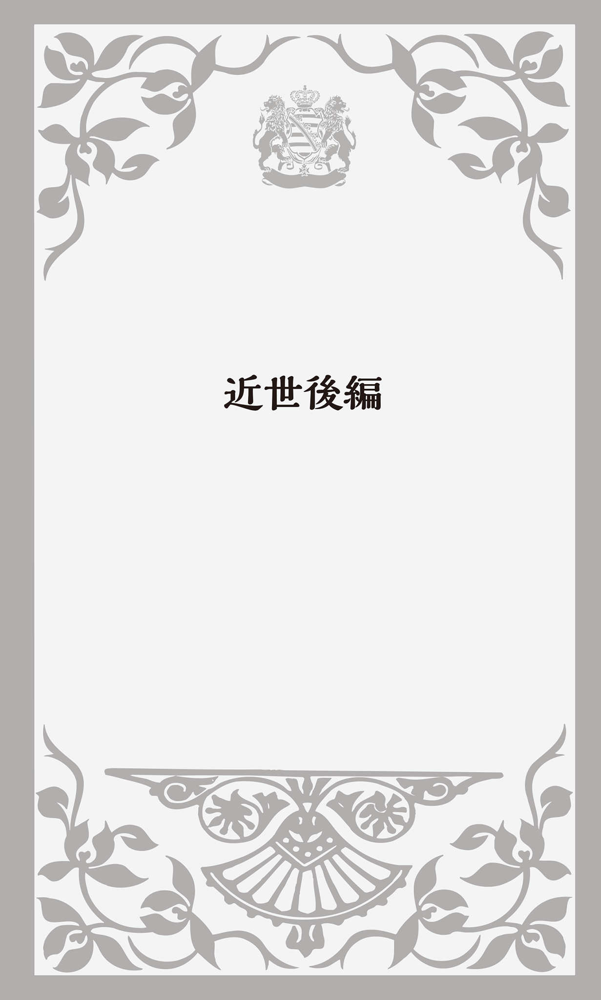
クロムウェルとピューリタン革命
1603年にGood Queen「良き女王」と呼ばれたエリザベス1世が逝去すると、スコットランド王JamesⅥ「ジェームズ6世」がJamesⅠ「ジェームズ1世」（在位スコットランド王1567～1625、イングランド王1603～1625） として即位する。エリザベス1世が未婚のまま世継ぎを残さず亡くなったため、姻戚関係にあるスコットランド王に白羽の矢が立ったのである。ここに長年にわたる敵対関係に終止符が打たれ、イングランドとスコットランドは同じ君主を戴く「同君連合」の国となった。
ジェームズ1世はthe divine right of the king「
王が議会との対立を深めたもうひとつの理由は、やはり宗教問題だった。プロテスタントのひとつカルヴァン派の影響を受けたPuritan「清教徒」が勢いを増し、イングランド国教会の改革を強く訴えたのである。Puritanは近代ラテン語のpūritānus 「浄化しようとする者」が語源で、その名の通り国教会の浄化と教義・規律の厳格化を求めた。ジェームズ1世はピューリタンに激しい迫害を加える。
次に即位したCharlesⅠ「チャールズ1世」（在位1625～1649） も父親と同様の政治・宗教政策をとった。議会はPetition of Right「権利の請願」を提出し、「議会の同意なしの課税および法に基づかない逮捕や投獄を認めない」ことなどを国王に約束させたが、チャールズ1世はすぐに議会を解散し長い間議会を開かなかった。
さらに王が反ピューリタン派のカンタベリー大司教William Laud「ウィリアム・ロード」を側近として重用すると、ピューリタンは激しく抵抗した。この大司教がスコットランドでもピューリタンを弾圧したために、ピューリタンの反乱が起こる。チャールズ1世は、鎮圧のための軍費を捻出しようと、しぶしぶ議会を招集するが、議会はその要求を否決する。
その議会勢力も、やがてイングランド国教会を支持するRoyalists「王党派」とピューリタンを中心とするParliamentarians「議会派」に分かれ、国を二分する戦いになった。最初は王党派が優勢だったが、ピューリタンOliver Cromwell「オリヴァー・クロムウェル」（1599～1658） がironsides「鉄騎隊」と呼ばれる精鋭部隊を率いて議会派を勝利に導く。そして1649年チャールズ1世は公開処刑され、共和政が成立したのだった。これがPuritan Revolution「ピューリタン革命」（清教徒革命）である。
クロムウェルは軍の力を背景に独裁体制をしき、1653年に終身のLord Protector「
この頃send to Coventry「コヴェントリーに送る」という表現ができた。クロムウェルは王党派の捕虜をコヴェントリーのセント・ジョン教会に移送した。この町は議会派の拠点で、住民は王党派を嫌っていた。教会は牢獄になっていて、近くには処刑場もあった。捕虜たちは時たま教会を出ることを許されたのだが、住民からは完全に無視されたのだという。そこからsend to Coventryが「交際を断つ、のけ者にする」という意味になった。「人と交流できる社会から放逐する」というニュアンスもある。
権力の基盤を固めたクロムウェルは、議会から国王に推挙されるが固辞する。国王になると議会に縛られ、自分の思うように事が運べなくなることを経験上よく分かっていたからだ。議会側もクロムウェルの絶大な権力を制限するために王位に就くことを勧めたのだった。そして、体力の衰えを感じたクロムウェルは1658年に他界する。
王政復古とblacklist
ピューリタン革命によって国王のいない共和政となったイングランドだが、国民の間に新体制への不満と嫌悪が高まり「王室再興論」が湧き上がる。議会派の司令官ジョージ・マンクは穏健派を議会に復帰させて、大陸に亡命していたチャールズ1世の子を呼び戻す。こうして1660年にCharles Ⅱ「チャールズ2世」（在位スコットランド王1649～1685、イングランド王1660～1685） が即位し、Restoration「王政復古」が成し遂げられた。
チャールズ2世はピューリタン革命に危機感をいだき、1646年に早々と大陸に亡命していた。父親チャールズ1世の処刑の後、一度はスコットランド王となるが、1651年に侵攻してきたクロムウェル軍に敗れ、再度大陸に逃げて亡命生活を送っていたのだった。
父親が処刑された際、チャールズ2世はイングランドにスパイを放ち父親を死刑にした裁判長や政治家など58人のリストをつくっていた。これはblacklist「ブラックリスト」（黒い名簿）と呼ばれ、今では日本語にもなっている。
チャールズ2世は王位に就くとすぐに、このリストに名前が載っている人たちを探し出し30人を処刑し、残りを終身刑にした。だが、それだけでは飽き足らず、何とクロムウェルの墓を掘り起こして、反逆者として遺体を八つ裂きにして首を切断したのだった。クロムウェルの首はそれから25年、ウェストミンスター・ホールの屋根に掲げられていた。今は火葬が多くなっているが、当時のイングランドではほとんどが土葬だった。遺体を灰にせず、そのまま埋葬していたのである。
ちなみに、blacklistに対してwhite list「ホワイトリスト」という言葉がある。20世紀の初頭に生まれた言葉で、「警戒する必要がなく推薦できる人や物の名簿」のことだ。例えば青少年にも推薦できる「優良小説・映画リスト」、得意先としてもよい「優良企業リスト」、会社が雇用してもいいと考えている「優良人物リスト」などである。
最近では電子メールで、着信・受信を許可するアドレスが「ホワイトリスト」と言われている。だが、よく考えてみれば、このホワイトリストにはないアドレスは拒否されるということだ。そういう意味で、ホワイトリストはブラックリストの"裏返し"という解釈もできる。
CABALとCondom
こうして"父の
議会とのゴタゴタに嫌気がさしたチャールズ2世は、5人の側近を重用して大臣とし、彼らに政治を"丸投げ"したのだった。その5人とは、Clifford「クリフォード」、Arlington「アーリントン」、Buckingham「バッキンガム」、Ashley「アシュリー」、Lauderdale「ローダーデール」で、その頭文字をとってCABAL「キャバル政府」と呼ばれた。これが今日の「内閣」の始まりとされる。cabalとはもともと政府や権力者に対抗する「秘密結社」「陰謀団」という意味だったので、チャールズ2世と5人の大臣たちを嘲笑する流行語となった。
チャールズ2世は政治を放り出し、女性との愛欲生活にふけった。王妃との間には世継ぎを残さなかったが、愛人たちとの間に17人もの子供ができた。「これでは王位継承問題でトラブルが起こる」という懸念が生じ、お抱え医師が羊の腸を細長い袋状にした避妊用具をつくった。その医者の名前がCondomだったことから、condom「コンドーム」という単語が生まれたといわれている。
もうひとつ、イギリス軍のCondumという近衛隊長の名前から来ているという説もある。フランスの戦場で戦っている彼の部隊の兵隊たちが性病にかかるのを防ぐために、家畜の腸を乾かし油で柔らかくした避妊具をつくって配ったというのである。また、フランス・ピレネー山脈の麓にあるCondomという町で、梅毒がはやった時に男たちが布の袋を性器にかぶせたことに由来するともいう。
だが、コンドームの歴史は古く、紀元前3000年のエジプト王朝時代に遡るといわれる。動物の腸や膀胱、カエルの皮や魚の浮き袋などを使って避妊していたのだった。
「馬泥棒」対「追いはぎ」
政治を大臣たちに任せきりで愛欲にふけるチャールズ2世のもとで、次の王位継承問題が起こる。王位継承権者第1位はチャールズ2世の弟のヨーク公ジェームズだった。しかしジェームズはカトリックであり、プロテスタントのイングランド国教会を国教とする国の王に据えるには問題があった。
この後継者問題は、議会内でもジェームズの即位に賛成する王権派と反対するプロテスタント派に分かれ激しい論戦となった。賛成派は反対派をWhig「ホイッグ」と呼んで非難した。これはスコットランド語のwhiggamor から来ており、「馬泥棒」とか「謀反人」という意味だ。反対派は賛成派をTory「トーリー」と呼んだ。アイルランド語で「追いはぎ」「ならず者」を意味する。お互いが相手にひどい渾名をつけて罵り合ったのである。
こうして「トーリー党」はイングランド国教会と王権を尊重して保守党の前身となり、「ホイッグ党」は宗教的寛容性と議会重視を主張して自由党につながっていく。イギリス政治における二大政党制は、このような王位継承問題から誕生したのである。
1685年にチャールズ2世が死去すると、トーリー党が推していた弟のヨーク公がJames Ⅱ「ジェームズ2世」（在位1685～1688） として即位する。プロテスタント派ホイッグ党の支持を得ていたチャールズ2世の庶子モンマス公が王位継承権を主張して反乱を起こすが、すぐに鎮圧され処刑されてしまう。ジェームズ2世はモンマスの協力者を粛清し、イングランドのカトリック化を進めようと、議会を解散し、カトリック信者を中心とする常備軍を新設したのだった。
国民の間にジェームズ2世への激しい嫌悪感が広がっていく中で、トーリー党も国王を見捨て、ホイッグ党と一致協力し王の打倒を目指すことになった。両党が1688年に、チャールズ1世の娘メアリー・ステュアートを母に持ち、ジェームズ2世の娘メアリーを妻としていたオランダ総督のオラニエ公ウィレムをイングランドに呼び寄せると、ジェームズ2世はフランスへ逃亡した。
1689年にウィレムとその妻メアリーは、WilliamⅢ「ウィリアム3世」（在位1689～1702） 、Mary Ⅱ「メアリー2世」（在位1689～1694） として即位し、2人でイングランドを共同統治することになった。これがGlorious Revolution「名誉革命」である。大きな混乱と流血もなく人々の自由を守ったことで、そう呼ばれるようになったのだが、なぜ"無血革命"が成し遂げられたかというと、ジェームズ2世が、カトリック派の常備軍が早々に離反したことで戦わずして逃げ出したからだ。
首相は「独裁者」
1702年にメアリー2世の妹Anne「アン女王」（在位1702～1714） が即位すると、1707年にはイングランドとスコットランドが合同してひとつの国になる。ウェールズはすでに13世紀に併合されていたので、ここにイングランド、ウェールズ、スコットランドが一体となったKingdom of Great Britain「グレートブリテン王国」（大ブリテン王国）が誕生したのである。
アンの次には、遠縁にあたるドイツのハノーヴァー選帝侯Georg Ludwig「ゲオルク・ルートヴィヒ」が法律にのっとって迎え入れられ、国王GeorgeⅠ「ジョージ1世」（在位1714～1727） となる。ドイツ語のGeorg「ゲオルク」は英語ではGeorgeなのである。
だがジョージ1世は即位した時にはすでに54歳で、英語が話せなかった。イギリスの内情も全く分からず、おまけに政治にも興味がなかったため、皮肉なことに、イギリスの議会政治は大きく発達することになる。池上彰さんもTV番組で「ジョージ1世が英語が話せなかったためイギリスの議会政治は発展しました」と解説していた。
実はこの王位継承に際して、英語の話せない"外国人"のジョージ1世ではなく、ジェームズ2世の王子を即位させるべきだとの意見も多かった。特にトーリー党はそれを強く主張していたため、ジョージ1世は政権をホイッグ党に委ねる。そのホイッグ党内の実力者のひとりがRobert Walpole「ロバート・ウォルポール」（1676～1745） で、ジョージ1世の愛人に賄賂を贈るなどしてうまく取り入り、政権の基盤を固めたのだった。
ウォルポールが手腕を発揮したのが、the South Sea Bubble「南海泡沫事件」が起こった時だった。The South Sea Company「南海会社」は西インド諸島との貿易を行う株式会社だったが、その株価が投機ブームによって異様に高騰した後に急落し、イギリス経済に大打撃を与えたのである。
今でもbubble economy「バブル経済」などと言い、過剰な株式などの投機により経済が膨張し実体経済から大幅にかけ離れる状態をbubble「泡」と呼ぶ。bubbleが経済的な意味で使われたのは、この時が初めてだった。
ちなみに科学者のIsaac Newton「アイザック・ニュートン」（1642～1727） もこの会社の株式を大量に購入しており、2万ポンドの損失を被った。今の日本円に換算すると約1億円に相当する額だといわれる。
ウォルポールは、南海会社の株式を中央銀行であるイングランド銀行と東インド会社に引き取らせるという救済措置をとり、うまくこの事態を収拾したために、ホイッグ党の最高実力者となり、1721年にFirst Lord of the Treasury「第一大蔵卿」となった。与党のホイッグ党の力を背景に内閣を主宰し、議会の支持を基盤に政治を行ったのである。このシステムが「責任内閣制」で、議会の多数を占める政党の代表が内閣を構成し、それまでのように国王に対してではなく、議会に対して責任を負うという政治制度である。
第一大蔵卿は「閣僚の第一人者」という意味でPrime Minister「内閣総理大臣」という俗称で呼ばれるようになった。こうしてウォルポールは世界初のPrime Ministerとなる。だが、この言葉にはもともと「独裁者」という意味もあり、マスコミによって叩かれた初めての政治家でもあった。
The King reigns, but does not govern.「国王は君臨すれども統治せず」という言葉が生まれたのは、この頃のことだった。国王は君主として君臨しているが、統治権は議会を通じて国民が行使するというものだ。
ウォルポールの平和
ジョージ1世の子供、GeorgeⅡ「ジョージ2世」（在位1727～1760） もウォルポールに政治を任せた。ウォルポールが実質的に国の政治を行ったこの20年は、戦争もなくPax Walpoliana「ウォルポールの平和」と呼ばれた。Pax 「パクス」とはローマ神話の「平和と秩序の女神」のことだ。
18世紀イギリスの歴史学者Edward Gibbon「エドワード・ギボン」（1737～1794） が"The History of the Decline and Fall of the Roman Empire"『ローマ帝国衰亡史』の中で、古代ローマ時代の五賢帝の時代（1世紀末から2世紀後半）を「人類史上最も幸福な時代」としてPax Romana「パクス・ロマーナ」（ローマの平和）と呼んだ。それ以来「強大な国の支配によって成り立っている平和」のことを「パクス～」と言うようになった。
例えば19世紀のVictoria「ヴィクトリア女王」（在位1837～1901） 時代はPax Britannica「パクス・ブリタニカ」（イギリスの平和）と呼ばれた。また第二次世界大戦後のアメリカとソ連の冷戦構造の緊張の中で続いた大戦争のない時代は、Pax Russo-Americana「パクス・ルッソ・アメリカーナ」（ロシアとアメリカの平和）と言われている。
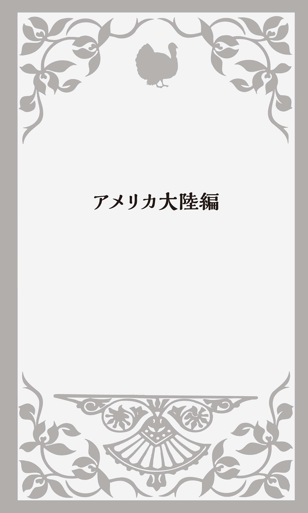
清教徒アメリカ大陸へ
1620年、ピューリタン（清教徒）の102人がイングランドでの宗教的迫害から逃れ、信教の自由を求めてthe Mayflower「メイフラワー号」でアメリカ大陸に向かった。彼らはPilgrims「ピルグリム」と呼ばれた。「巡礼始祖」「巡礼者」のことである。
出発が遅れたために、この帆船が大陸に着いた時にはもう秋になっていた。その冬は特に寒さが厳しく、入植半年で半数が病死したといわれる。しかし、近くに住む先住民のネイティヴ・アメリカンが食糧を援助してくれたために、半数はどうにか冬を乗り越えることができた。
翌1621年の秋には収穫も多く、神の恵みに感謝し、ネイティヴ・アメリカンも招いて祝宴を開いた。それがThanksgiving Day「感謝祭」の始まりだとされている。現在ではアメリカでは11月の第4木曜日、カナダでは10月の第2月曜日がこのThanksgiving Dayとなっていて、Christmas「クリスマス」に次ぐ大切な祝日となっている。
七面鳥とトルコ
アメリカに渡った清教徒たちが、最初の「感謝祭」のお祝いで食べたのが、turkey「七面鳥」だった。一説によると、ネイティヴ・アメリカンが七面鳥をつかまえてきて丸焼きにして、清教徒たちと一緒に食べたのだという。
ちょっと考えてみると、「トルコ」という国も英語ではTurkeyだ。「七面鳥」とは何か関係があるのだろうか？ いろいろ文献を調べているうちに分かってきたのは、もともとturkeyは西アフリカ産のguinea-fowl（ギニアのニワトリ）「ホロホロ鳥」のことだった。オスマントルコが進出していた北アフリカのトリポリ経由で、トルコ人の商人によってヨーロッパに運ばれたので、この「ホロホロ鳥」のことをturkeyと呼ぶようになったのである。
ヨーロッパ人がアメリカに渡ったのはその後で、アメリカに生息する「七面鳥」が「ホロホロ鳥」と似ていたために、これもturkeyと呼ばれるようになった。
研究社の『英語語源辞典』には、この「ホロホロ鳥」がオーストラリアの北の「ニューギニア」に生息する鳥で、トルコ経由でヨーロッパに入ってきたのでturkeyと呼ぶようになった、という記述がある。多くの資料を見てみたが、turkeyが「ニューギニア産」という記述がない。確かにニューギニアからトルコを通ってヨーロッパに運ばれたとすると直線になり、その方が自然だ。だから「ギニア産」を「ニューギニア産」と誤解したのかもしれない。
アフリカのギニアから"トルコの国"を経由してヨーロッパに運ばれたとすると、いったん東に行ってから西に来るジグザグの経路となり、かなり遠回りになる。だが、当時ヨーロッパでは他の地域から輸入される舶来品を"turkey"「トルコ」と呼んでいたという記録もある。それなら、やはりターキーは「ニューギニア産」ではなくアフリカの「ギニア産」と考えるのが妥当なのではないだろうか？ これについては、これから徹底的に調べてみようと思っている。
turkeyについて話そう
アメリカ大陸に入植した清教徒が、最初の感謝祭で七面鳥を食べたからなのか、英語にはturkey を使った表現が多い。あまり一般的ではないが、walk turkey「気取って歩く」とかsay turkey「愛想よく話す」という表現が英和辞典には載っている。sayではなくtalk turkeyとすると、「ざっくばらんに話す」という意味になり、ビジネスの場でも普通に使われている。
ある時、白人とネイティヴ・アメリカンが獲物を山分けにするという約束で一緒に猟に出かけた。その日は七面鳥2羽とカラス3羽が獲れた。猟が終わり獲物を分ける段になって、白人が"A crow for you, a turkey for me."と言って、カラスをネイティヴ・アメリカンに渡し、七面鳥を自分の袋に入れた。次にまたカラスをネイティヴ・アメリカンに渡し、自分で七面鳥を取った。
その時にネイティヴ・アメリカンが I will talk turkey.「七面鳥のことを話したい」と言った。そこからtalk turkeyが、特に仕事について「率直に話す」「本気で話す」という意味になり、今でも使われているのである。
エリザベス1世とVirginia
イギリスは、北アメリカ大陸東岸に最初の植民地Virginia「ヴァージニア」を設立していた。これはthe Virgin Queen「処女王」と呼ばれたエリザベス1世の名前からつけたものだ。
フランスも南北は五大湖からメキシコ湾、東西はアパラチア山脈からロッキー山脈まで、ミシシッピー川流域のほとんどを含む広大な地域を植民地にしLouisiana「ルイジアナ」と名づけた（現在のルイジアナ州は、そのほんの一部）
。フランスのLouis ⅩⅣ「ルイ14世」にちなんで命名されたものだ。「太陽王」と呼ばれ、「
オランダも、ネイティヴ・アメリカンの言葉で「丘の多い島」を意味するManna-hata という場所を中心にして植民地をつくった。そこが今のManhattan「マンハッタン島」だ。最初は祖国にちなんでNieuw-Nederland 「ニューネーデルラント」と呼んでいたが、その後New Amsterdam「ニューアムステルダム」と名前を変えたのだった。この時オランダ人は、イギリス人やネイティヴ・アメリカンの侵入を防ぐために「柵」をめぐらした。これが今や世界一の金融街となったWall Street「ウォール・ストリート」という地名の起こりである。
そして1664年になると、イギリスがこの地を奪いNew York「ニューヨーク」と呼ぶようになる。イギリスからは、その後も宗教的迫害を受けたピューリタンを中心に多くの人々が入植し、18世紀の初頭には13の植民地が誕生する。
「蚤の市」はマンハッタンから
日本でも、公園や歩道などで中古品を持ち込んで安く売る「フリーマーケット」がいろいろなところで開かれている。これを"free market"と思っている人が多い。つまり誰でも参加できる「自由な市場」、あるいはただ同然の「無料の市場」というふうに勘違いしているのだ。しかし、これはfreeではなくflea market「
このflea market、もともとパリの北部で開かれていた「蚤の市」が始まりで、フランス語でmarché aux puces の英語の直訳だというのが定説になっている。marché は「市場」、puces は「蚤」の複数形だ。なぜ「蚤の市」かというと、売っている物品は古くて蚤がたかっているようなものが多かったからだということは容易に想像がつく。
もうひとつ、最初のflea marketがマンハッタン島がまだオランダの植民地だった頃に開かれていたという説がある。オランダからの入植者たちは、Vallie Marketという市場を開いた。Vallie とはオランダ語で「沼地」のことで、マンハッタン島のイースト・リバー近くの地名のことだった。このVallie がvlie となり、最後にfleaと発音されるようになったというのだ。
刃が飛ぶ怒り
当初はネイティヴ・アメリカンと協力関係にあった入植者たちだが、そのうちに土地と食糧をめぐって対立するようになり、激しい戦いも起こるようになった。ここではネイティヴ・アメリカンの戦いにまつわる英語を紹介しよう。
まずfeather inone's capという表現だ。これはネイティヴ・アメリカンが敵を倒すたびに頭の羽飾りに羽をつけ加えるという風習から生まれた表現で、「立派な業績」「栄光」「名誉」といった意味がある。Being chosen town mayor is a feather in his cap.と言えば、「町長に選ばれたのは、彼が誇りにしてもいいことだ」という意味だ。
Indian fileという言葉もある。fileとは「縦列」つまり「列をなして歩くこと」で、その前にIndianが付くと「一列縦隊で」という意味になる。大勢のネイティヴ・アメリカンが敵を襲撃するために進む際に、横に広がらないで前を歩く人の足跡を踏むようにして歩いて痕跡を残さないようにしたからだ。今でもmarch in Indian fileは「一列縦隊で進む」という意味で使われている。
fly off the handleという表現もある。ネイティヴ・アメリカンや開拓者の生活から生まれたものだ。これは、理性のコントロールを失って「カッとなって怒る」ということだ。鎌や斧で殴りかかった時に、刃が柄からスポッと抜けて、相手に向かって飛んでいく様を表現している。激しい言葉が刃のように向かっていって、相手を深く傷つけるということだ。
開拓時代は道具類が少なく、斧はとても大切に扱われていて、一度刃が木製の柄からはずれてしまうと、木の皮を剝がした紐や麻を編んだ縄でぐるぐる巻きにして取り付けていた。そんな刃がぐらぐらした斧を使っていて強く振り降ろした時に、刃が柄から取れて飛んでいったら、柄を投げ捨てて大声で悪態をついたかもしれない。そんなことも、このfly off the handleという表現が想像させてくれる。
斧を埋める時
白人と現地人の間で戦いが起こった原因のひとつに、習慣の違いがあったということは容易に想像できる。例えばIndian giverという表現があった。ネイティヴ・アメリカンには、周辺の部族との摩擦を避けるために贈り物を交換するという儀式があった。この風習の意味がヨーロッパ人にはよく理解できなかったのではないだろうか？ ネイティヴ・アメリカンはプレゼントをすれば、当然それ相応のお返しがあると考えたのだろう。そこからIndian giver「返礼目当てで贈り物をする人」という表現が生まれた（「一度あげた物を取り戻そうとする嫌な奴」という意味もある） 。
敵と和解する時にも彼ら独特の風習があった。武器である斧を地面に埋めて、部族の長同士が一緒にpeace pipe「平和のキセル」をふかすという儀式を行ったのである。ここからbury the hatchetという表現ができた。「争いをやめる」「仲直りをする」という意味である。日本語にも「
have an ear to groundという表現もある。ネイティヴ・アメリカンは耳を地面につけ、遠くから走ってくる馬の
ドルは「シカの革」
アメリカの「ドル紙幣」はgreenbackと呼ばれる。例えば英語の経済ニュースを見ていると、よくJapanese yen rose against the greenback for the fifth straight day.「日本円はアメリカ・ドルに対して5日連続で上がっている」などと言う。これはもともと南北戦争の際に戦費をまかなうために大量に発行された不換紙幣のことだった。紙幣の裏全面が緑色で印刷されていたためにgreenbackと呼ばれるようになり、それがドル紙幣の俗称になったものだ。
ドルのことをアメリカ人は「バック」と言う。だから私はgreenbackの前を省いて"back"と言うのだろうと長いこと思っていた。アメリカ慣れしていることを誇示するために、例えば10 dollarsを"10 backs"などと言ってカッコつけていたのだが、実はこれは大きな誤りであることに気づいた。実際はbackではなくbuckだったのだ。この2つでは、発音も微妙に違う。
buckとは「雄のシカ」のことで、ネイティヴ・アメリカンが入植者との取り引きや物々交換の時に、お金の代わりにbuckskin「シカの革」を使っていたのだ。そのbuckskinのskinが取れて、buckが「ドル紙幣」の意味になったのである。
タキシードは部族名
男性の礼装には、morning coat「モーニング」、swallow-tail coat「燕尾服」などがあるが、夜用の準礼服にtuxedo「タキシード」がある。イギリスではdinner jacketとも言う。
この「タキシード」が、ネイティヴ・アメリカンの部族の名前だと言うと、きっと驚かれることだろう。ニューヨークがあるマンハッタン島から20マイル離れたところに"Ptuksit"という名の部族が住んでいた。入植者にはうまく発音できなかったために、彼らと彼らの土地のことをTuxedoと呼ぶようになった。
19世紀になってから、New York州Orange郡のこのTuxedoの地にカントリークラブができた。格式の高い社交場でもあり、会員やゲストは長い
梅毒と羊飼い
ネイティヴ・アメリカンには白人が持ち込んだ天然痘に対しての免疫力がなかった。そのために大半が病死した部族もあったという。反対に、アメリカ大陸から全世界に広がったと言われているのが梅毒だ。体中から膿が吹き出し、ひどくなると骨や目、鼻、唇や性器の組織が破壊される病気だ。
コロンブスと一緒にアメリカ大陸に行った船員がジャガイモやトウモロコシ、トマト、タバコなどと一緒にヨーロッパに持ち帰ったとされている。日本で初めて梅毒が記録されたのは1512年、コロンブスがアメリカ大陸に到達した1492年からたった20年しかたっていなかった。
「梅毒」は英語でsyphilisと言う。私はてっきりギリシア語の「sym （共に）＋philos （愛）」から来ていると思っていた。昔の人も感覚的に性交渉によってかかる病だということが分かっていたのだなと、いたく感心していたのだ。しかし、それはいい加減な憶測であり、間違っていることが分かった。
1530年、イタリア人の医師で詩人でもあったGirolamo Fracastoro「ジローラモ・フラカストロ」（1478～1553） が"Syphilis sive Morbus Gallicus "「シフィリス、あるいはフランス病（原文通りに訳せば「ガリア病」） 」という近代ラテン語の詩を書いた。その中で、ギリシア神話に登場する羊飼いの名前Syphilus 「シフィルス」から梅毒をsyphilisと名づけたのだった。その美少年は、日照りが続き牧草が枯れたために太陽神のアポロンに悪態をつき、その罰で悪性の皮膚病にかかってしまった。その羊飼いが最初の梅毒患者とされたのである。
それまでは、この病気をイギリスやイタリア、ドイツでは「フランス病」、オランダでは「スペイン病」、ロシアでは「ポーランド病」、フランスでは「イギリス病」とか「ナポリ病」などと呼んで罵り合っていたのだが、フラカストロが中立的な病名をつけたことによって、この
ちなみに、日本語の「梅毒」は中国語からもたらされたものだ。もともと中国では
ナポリを見て死ね
先ほどもちょっと触れたが、梅毒は別名Naples「ナポリ病」とも呼ばれていた。この街に関してSee Naples and then die.「ナポリを見てから死ね」という諺がある（日本語では「日光を見ずして結構と言うな」というギャグっぽい訳があてられる） 。
これはもともとイタリア語でVedi Napoli e poi Mori. という言葉だった。「ナポリを見よ、そして次にモリを」という意味だ。「モリ」はナポリ郊外の小さな町で、今はナポリ市に併合されている。この地名のMori をmuori 「死ね」と混同したり洒落たりして「ナポリを見て死ね」となったのである。
もちろん、ナポリが一生に一度は見ておくべき美しい街だったからだ。79年に大噴火を起こし、ポンペイの町を埋没させたヴェスヴィオ山が近くにあり、とても危険なところなのだが、死の危険を冒してまで見るべき価値のある街だったからだともいわれる。
そんな美しい街Naplesがなぜ「梅毒」の別名になったかについては、こんな理由がある。当時the Grand Tour「大陸巡遊旅行」と呼ばれる風習があった。イギリスの貴族や富豪の子息が教育の仕上げとしてヨーロッパ中を旅してまわったのである。彼らは当然ナポリに立ち寄ったのだが、この街にはヨーロッパ随一の娼婦街があり、長居して梅毒にかかって死ぬ者も少なくなかった。そこから「梅毒に感染して、それから死ね」という意味で、See Naples and then die.が使われるようになったといわれている。私も最初は、何と奇想天外な説なのだろうと思ったが、今では大いに納得している。
もうひとつ、こんな話をご存じだろうか？ 当時ヨーロッパでは「梅毒が接触感染なのか、空気感染なのか」ということに関して盛んに議論された。結論は「空気感染」ということになった。理由は、梅毒は修道院でも流行している、だから接触感染、つまり性交を介した病気であるはずがなく、絶対に空気感染に違いないというものだった。
何と辛辣なブラック・ユーモアではないか！
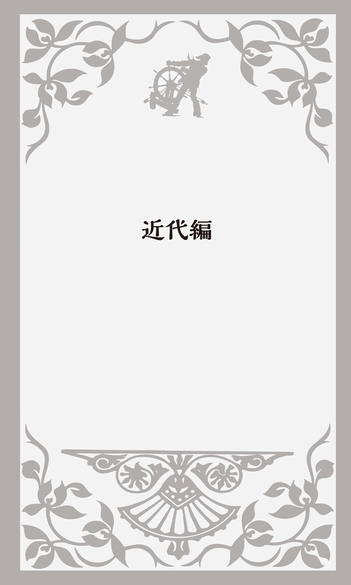
Tea Party「茶会事件」
北アメリカ大陸の東海岸にイギリス人が建設した13の植民地の中で、まずヴァージニアで「植民地議会」が開設された。他の植民地もそれに続き、一定の自治も認められるようになった。
マサチューセッツ植民地では、何と1636年に大学が創設されている。それがHarvard University「ハーヴァード大学」だ。清教徒たちが最初にアメリカに上陸したのが1620年だから、16年後のことだった。大学名は、最初に寄付を行った清教徒の牧師John Harvard「ジョン・ハーヴァード」（1607～1638） の名前からつけられた。
土地や食料をめぐる先住民と入植者の争いは続き、同時にイギリスとフランスの植民地争奪戦争も起こった。フランスがネイティヴ・アメリカン諸部族と組んだためFrench and Indian War「フレンチ・インディアン戦争」（1755～1763） と呼ばれる。この戦争に勝利したイギリスはカナダとミシシッピ川の東側まで領土を広げることとなった。
だが、イギリス本国はこの戦争による財政赤字を軽減するために植民地に対して過酷ともいえる税を課し、さらにTea Act「茶法」（茶条例）を制定して、業績不振だった東インド会社に植民地での紅茶の専売権を与えた。植民地側は大陸での自由な貿易や産業の発展を妨げるものだとして猛反発した。
この怒りが1773年Boston Tea Party「ボストン茶会事件」を引き起こす。50人ほどの住人がボストン湾に停泊する東インド会社の貨物輸送船を襲撃し、積み荷の300にも及ぶ紅茶箱を海に投げ込んで抗議したのである。この時ボストン湾は茶色に染まったといわれている。
イギリス本国は報復として、ボストン湾を封鎖し、植民地の自治を制限するなどの強硬手段をとった。これに対し、植民地側は1774年にContinental Congress「大陸会議」を開いて、植民地の権利と自由を侵害する本国の政策に抗議し、通商を断絶することを宣言した。
ところで21世紀に入って、このTea Partyという"歴史的用語"が蘇ったのをご存じだろうか？ 2009年に始まったアメリカ保守層の市民運動がTea Party movement「ティー・パーティー運動」と呼ばれたのである。リーマン・ショック後に誕生したオバマ政権の金融機関救済策や医療保険制度改革（オバマケア）など「大きな政府」政策を社会主義的だとして大反対した草の根運動で、2010年11月の中間選挙で共和党が大躍進する原動力となった。
後付けなのかもしれないが、TEAは"Tax Enough Already"「もう税金はたくさんだ」とか「もう十分に課税されている」の頭文字だともいわれている。
署名はJohn Hancock
1775年、American War of Independence「アメリカ独立戦争」（1775～1783） が始まる。現在ではAmerican Revolution「アメリカ独立革命」、あるいはRevolutionary War「革命戦争」とも呼ばれている。
イギリスはこの戦争に3万もの兵を送り込んだ。大陸会議はアメリカの正規軍としてContinental Army「大陸軍」を組織し、後に初代大統領となるGeorge Washington「ジョージ・ワシントン」（1732～1799） を総司令官に任命した。アメリカ軍は当初1万2000人だった。開戦の前まで植民地には軍隊がなく、民兵隊が各地域を守っていた。イギリス軍は植民地の民兵を補助的に使っていたが、独立戦争の開戦時には民兵のほとんどがアメリカ軍に加わる。ワシントンは正規軍と素人同然だった民兵をうまく指揮して有利に戦いを進めた。さらにヨーロッパからも、アメリカを支援するための義勇軍が大挙してやってきたのだった。
1776年7月4日、植民地代表はフィラデルフィアでUnited States Declaration of Independence「アメリカ独立宣言」を採択した。イギリスによって支配されていた植民地が独立したことを宣言する文書で、イギリスの名誉革命の時に不法な統治に対する人民の抵抗権を主張した哲学者John Locke「ジョン・ロック」（1632～1704） の思想を採り入れて、Thomas Jefferson「トマス・ジェファソン」（1743～1826） が起草したものである。
この独立宣言に最初に署名したのが、大陸会議議長のJohn Hancock「ジョン・ハンコック」（1737～1793） だった。その時、ハンコックはイギリスのGeorgeⅢ「ジョージ3世」（在位グレートブリテン王1760～1800、グレートブリテン及びアイルランド連合王国王1801～1820） がメガネをかけなくても読めるようにと大きく太い文字でサインを書いた。このエピソードから、signature「サイン、署名」のことをJohn Hancockとも言うようになった。
例えばPut your John Hancock on this document.と言ったら、「この書類に署名してください」という意味になる。ちなみに有名な俳優やスポーツ選手、作家が色紙などに書く「サイン」はautographだ。
1787年、憲法制定会議でConstitution of the United States of America「アメリカ合衆国憲法」の草案が発表され、翌1788年に発効する。こうしてアメリカは人民主権を基盤とするrepublic「共和国」として成立したのである。各州に大幅な自治を認めながらも中央政府の権限を強化するfederalism「連邦制度」を採用し、executive power「行政権」を大統領の率いる政府が、legislative power「立法権」は連邦議会が、judicial power「司法権」は最高裁判所が担い、お互いが抑制しあう「三権分立」の原則を確立した。そして1789年、ジョージ・ワシントンが初代大統領（在任1789～1797） に就任する。
自力で動くlocomotive
18世紀に入りイギリスではIndustrial Revolution「産業革命」が始まる。新式の紡績機が次々に発明され、良質の綿織物が大量生産できるようになった。1769年にJames Watt「ジェームズ・ワット」（1736～1819） が改良した蒸気機関が動力として使われるようになり、1807年にはアメリカ人Robert Fulton「ロバート・フルトン」（1765～1815） が蒸気船を発明する。そして1814年George Stephenson「ジョージ・スティーヴンソン」（1781～1848） が蒸気機関車をつくると、1830年にはイギリス国内でマンチェスター・リヴァプール間の旅客鉄道が開通した。
「蒸気機関車」は英語でsteam locomotive（SLは steam locomotive の略だが、日本でしか通じない和製英語） と言う。locomotiveは近代ラテン語のlocomotivus に由来するが、これはラテン語のlocō （ある場所から）＋mōtīvus （動く）からなる語で、「移動する」から「運動力のある」という意味に変化してきたものだ。
故にlocomotiveには「自分の力で動く」という意味もあり、an animal that is locomotive at birthで「生まれてすぐに歩ける動物」ということになる。
もうひとつ、locomotiveを使った言葉が和製英語として日本で使われている。「ロコモティブ・シンドローム」（運動器症候群）だ。「体の骨・関節・筋肉・神経など体を支えたり動かしたりする運動機能が低下し、要介護や寝たきりになる危険性がある状態」と定義されている。日本整形外科学会が2007（平成19）年に提唱したものだ。locomotive organと言えば「運動器官」のことなので、このような名称になった。
華氏と摂氏
18世紀には自然科学が発展し、ドイツ人の物理学者Daniel Fahrenheit「ダニエル・ファーレンハイト」（1686～1736）
は、温度を測る目盛りをつくった。自分で測ることのできた屋外の最低気温を0度、自分自身の体温を100度として固定し、さらに水の氷点を32度、沸点を212度と定めて、その間を180等分して1度とする温度の単位を考案したのである。これがFahrenheit「華氏温度計、華氏目盛り」で、頭文字で
Fと表記する。日本語の「華氏」は、ファーレンハイトの中国語の音訳「
ちなみにアメリカのSF作家Ray Bradbury「レイ・ブラッドベリ」（1920～2012） の小説に"Fahrenheit 451"（『華氏451度』宇野利泰訳・ハヤカワ文庫） がある。その舞台となった架空の国では、読書どころか本の所持が禁止されており、見つかった場合には逮捕される。為政者が、本によって有害な情報がもたらされ、社会の秩序が乱れると考えたからだ。この小説の主人公は本の所有者を逮捕し、本を焼却するという仕事をしているが、それにだんだん疑問を感じるようになるというストーリーだ。「華氏451度」は紙が燃える温度なのである。
もうひとつの温度の単位「摂氏」は英語でCelsius、またはcentigradeと言い、頭文字をとって℃とする。これはこの温度目盛りを提唱したスウェーデンの天文学者Anders Celsius「アンデルス・セルシウス」（1701～1744）
の名前に由来する。中国語の音訳でセルシウスは「
2つの目盛りの換算にはいろいろな公式があるが、華氏＝（摂氏温度×1.8）＋32、摂氏＝（華氏温度－32）÷1.8が一番簡単なので、私はいつもそれで計算していた。だが、もっと大雑把に体感として華氏と摂氏の温度を覚える良い方法がある。
華氏30度が摂氏マイナス1.1度で「寒い朝」、華氏60度が摂氏15.6度で「過ごしやすい秋の温度」、華氏90度が摂氏32.2度で「真夏の日中の温度」、華氏100度が摂氏37.8度で「真夏日」あるいは「風邪をひいて熱が出た時の体温」と覚えておくと、アメリカに行ってもおおよその見当がつく。
electricityは琥珀から
「電気」は英語でelectricityと言うが、これはもともとギリシア語のēlektron
「
1757年にアメリカの政治家で物理学者、気象学者でもあったBenjamin Franklin「ベンジャミン・フランクリン」（1706～1790） が雷が鳴る中で凧を揚げ、雷が電気であることを発見し、避雷針を発明したことはよく知られている。ちなみに、フランクリンはアメリカ独立宣言を起草した委員会の主要メンバーだった。
1791年には、イタリア人のLuigi Galvani「ルイージ・ガルヴァーニ」（1737～1798） が、死んだカエルに電気を通すと、脚がピクッと動くことに気づいた。生物の神経細胞から筋肉に信号を伝えているのが電気ではないかと考えたのだった。そのガルヴァーニの名前からgalvanizeという英語が生まれた。「電流を通す、電気で刺激する」ということだが、さらに「活気づかせる」「奮い立たせて行動に駆り立てる」というふうに意味が広がった。例えば、The news galvanized her into action.と言えば、「その知らせを聞いて彼女はすぐに行動を起こした」という意味になる。
馬力はhorsepower
19世紀に入ると、紡績機の改良による「技術革命」、蒸気機関の改良による「動力革命」、鉄道の開通による「交通革命」の3つによって、イギリスは安価で良質の工業製品を大量に生産・流通させる一大工業国となり、「世界の工場」と呼ばれるようになった。
この頃に使われるようになった英語がhorsepower「馬力」だ。もともと1頭の馬が荷を引っ張る際の牽引力をもとに考えられた単位だとされるが、実際には本当の馬は1馬力よりもはるかに馬力があるという。1馬力は「1秒間に75キロの重量を1メートル持ち上げる力」と定義され、蒸気機関を発明したワットが決めた単位なのである。She has a car with a 200-horsepower engine.と言ったら「彼女は200馬力のエンジンを搭載した車を持っている」となる。ちなみに鉄腕アトムは「10万馬力」だった。これはジャンボ・ジェット機のパワーに匹敵するという。
horsepowerには他に「能力」「才能」という意味もある。例えばThe university's engineering faculty is known for its intellectual horsepower.と言ったら、「その大学の工学部は知的能力の高さで知られている」ということになる。
ナポレオンの崇拝者
ヨーロッパのフランスでは、1804年にNapoleon Bonaparte「ナポレオン・ボナパルト」（1769～1821） が国民投票で圧倒的多数の支持を受けて皇帝に即位し、「ナポレオン1世」と称した。
そのナポレオンの配下にNicolas Chauvin「ニコラ・ショーヴァン」という陸軍兵士がいた。幾度の負傷をものともせず敵に対し果敢に戦いを挑み続けたこの男は、ナポレオンの熱狂的崇拝者であり、何があってもいつも変わらぬ忠誠心を持ち続けた。ナポレオンはその功に報いるために、彼に栄誉のサーベルや勲章、高額の年金を与えたのだった。
英語で「好戦的愛国主義」「（特定の主義・集団への）熱狂的忠誠心」という意味のchauvinismは、フランス人であるこの兵士の名前から来ている。「熱狂的愛国主義者」「極端な排他主義者」ならchauvinistだ。
人の名前から生まれたこの単語は、後に「性差別主義者」も意味するようになる。male chauvinistは「男性優越主義者」、female chauvinistと言ったら「女性優越主義者」のことだ。ある和英辞典では、「亭主関白」に相当する英語がchauvinistic husbandとなっていた。「男性優位思想を持つ夫」ということだ。
ちなみに「恐妻家の夫」はhenpecked husbandだ。henpecked は「妻の尻に敷かれた、かかあ天下の」という形容詞で、hen「メンドリ」にpecked「つつかれた」ということだ。何とイメージしやすい英語表現だろう。
アメリカはUncle Sam
アメリカでは1800年にThomas Jefferson「トマス・ジェファソン」が第3代大統領に選ばれる。1803年にはフランスからミシシッピ川西側のルイジアナ買収に成功し、その後1819年にはスペインからフロリダを買収する。
アメリカは、ナポレオン率いるフランスとイギリスとのいわばNapoleonic Wars「ナポレオン戦争」（1796～1815） に対して中立の立場をとっていた。しかし、ナポレオンの大陸封鎖に対抗してイギリスが海上封鎖を行ったため、アメリカの自由な通商が妨害され経済は大打撃を受けた。
こうして1812年にアメリカとイギリスとの間で「米英戦争」が起こる。別名「第二次独立戦争」とも呼ばれるが、英語ではもっぱらthe War of 1812「1812年戦争」と言う。この戦争の実態は、アメリカとイギリスの土地の奪い合いであったが、もともとその土地はネイティヴ・アメリカンのものだった。彼らは、自分らの土地をアメリカがこれ以上侵略するのを防ぐためイギリスと手を組まざるを得ず、地域によってはネイティヴ・アメリカンの部族同士の代理戦争という状況となった。この戦争によって、アメリカ人が州を越えてアメリカ国民としての自覚を高めたといわれる。
アメリカを擬人化して"Uncle Sam"と呼ぶことがある。この表現が生まれたのもこの頃だった。現在でも、独立記念日や選挙の時などに、星条旗柄のシルクハットやジャケット、ズボンを身につけ白い髭を生やした老人の絵が掲げられたりする。実際にその扮装をした人が登場することもある。それが「アンクル・サム」だ。
ニューヨーク州にSamuel Wilsonという精肉業者がいて、人々から"Uncle Sam"と呼ばれていた。彼は米英戦争の際にアメリカ軍の要請により大量の食肉を卸すことになった。納入するその樽にはUnited Statesの頭文字の"U.S."という焼印が押してあった。兵士たちがそのU.S.のことを「これはアンクル・サムのことだ」と冗談を言い合ったことで、アメリカ合衆国とUncle Samが結びついたのである。実際1961年になって、アメリカ連邦議会は「Samuel WilsonをUncle Samの起源として称える」という決議を採択した。
ゲリマンダーという選挙区
gerrymanderという奇妙な英語が生まれたのもその頃のことだった。日本語では「ゲリマンダー」と言うが、英語では「ジェリマンダー」と発音する。
マサチューセッツ州知事をつとめていた政治家にElbridge Gerry「エルブリッジ・ゲリー」（1744～1814） がいた。彼は次の選挙で自分の政党が有利になるように選挙区の境界線を定めた。
その形が不自然に細長く、トカゲのような形をした伝説上のsalamander「火の精霊」に似ていたことから、新聞記者がGerryとsalamanderを合わせてgerrymanderという造語をつくった。「自党に有利なように選挙区を区割りする」「選挙区を勝手に改変する」ということだ。
このgerrymanderのように複数の単語の一部を組み合わせてつくった造語をportmanteau word「かばん語」と言い、今ではwordを省略して単にportmanteauと言うことが多い。portmanteau自体もともとフランス語のporter （運ぶ）とmanteaux （コート）が結合した「開けると内部が2つに分かれている旅行かばん」のことだった。それが「2つの意味が1語の中に入っている言葉」という意味の英語になったのである。イギリスの童話作家・数学者Lewis Carroll「ルイス・キャロル」（1832～1898） が"Through the Looking-Glass and What Alice Found There"『鏡の国のアリス』の中で、この言葉を初めて使った。
例えば、breakfast「朝食」とlunch「昼食」を合わせたbrunch「ブランチ」、smoke「煙」とfog「霧」でsmog「スモッグ」、motor「自動車」とhotel「ホテル」をドッキングさせたmotel「モーテル」などが「かばん語」の例である。
カラスを食べる屈辱
米英戦争の時に生まれた表現にeat crow「カラスを食べる」がある。休戦中にアメリカ兵が猟をしていて、うっかり休戦ラインを越えてイギリス軍の陣営に迷い込んでしまった。そこで銃でカラスを撃ち落としたのだが、その銃声を聞いてイギリス軍の将校がやってきた。ひとまずアメリカ兵の射撃術を褒めた後、「なかなかいい銃じゃないか、ちょっと見せてくれ」と言った。アメリカ兵が銃を手渡すと、態度をがらりと変え「カラスを食べろ」と言って、その銃をつきつけたのである。
アメリカ兵は嫌々ながら、そのカラスの肉を生で食べた。イギリス人将校が銃をアメリカ兵に返すと、形勢は逆転した。今度はアメリカ兵がイギリス人将校を銃で脅し、「カラスの肉を食べろ」と強要したのである。
翌日、このアメリカ兵の"不法侵入"についてイギリスが抗議し、アメリカ兵が上官から取り調べを受けて事実を認めたことで、eat crowという表現が記録に残り、今でも「自分の非を認め、甘んじて屈辱を受ける」という意味で使われているのである。
同じ意味の表現にeat humble pieがある。イギリスでは領主が鹿狩りをすると、領主と家族、招待客が鹿肉を食べ、残りの臓物を召使いがパイにして食べた。そのまま焼いたのでは、まずくて食べられなかったからだ。「鹿の臓物」のことはumbles とかnumblesと言った。それが「卑しい」という意味のhumbleに変化してeat humble pie となった。ある英和辞典では、「eat crow=eat humble pie=eat shit」となっていた。shitの意味が分からなかったら、辞書で引いてみてほしい。
OKの語源
1823年には、第5代アメリカ大統領となったJames Monroe「ジェームズ・モンロー」（1758～1831） が「ヨーロッパ諸国のアメリカへの干渉に反対し、アメリカもヨーロッパに干渉しない」というMonroe Doctrine「モンロー教書（宣言）」を発表する。これは「ヨーロッパで起こる戦争に対しては中立の立場をとるが、南北アメリカ大陸における植民地の新設やこの大陸の独立国に対するいかなる干渉も、アメリカ合衆国への敵対行為とみなす」というものだった。
第7代の大統領のAndrew Jackson「アンドリュー・ジャクソン」（1767～1845） は、初めての民主党選出の大統領だった。14歳で孤児となるが、米英戦争が始まると大陸会議軍に加わり、次々と輝かしい軍歴を重ね、最後には"英雄"となった。その名声を背景に大統領になると、西部開拓を積極的に進め、さらに全ての白人男性に選挙権を与えるなど民主主義を発展させたので、Jacksonian Democracy「ジャクソン民主主義」という言葉が生まれた（ニューオーリンズの観光スポット、フレンチ・クォーターのはずれには「ジャクソン広場」がある） 。
実はOKという単語は、このジャクソンが生み出したという話が伝わっている。彼が書類を承認する時にAll Correct「全て正しい」とするところを間違ってOll Korrectと綴り、それをOKと省略したというのだ。しかしジャクソンは、孤児だったために初等教育は受けられなかったものの、苦学して裁判官となり大統領にまで上り詰めた人物だ。そのようなミススペリングをするとは考えにくい。
だからなのか、事務処理の遅れた書類にOrder Received「順番通りに受け取った」の頭文字でORと書いたのをまわりの人がOKと読み間違えたのではないか、というふうにも伝えられている。
OKの語源については、他にも様々な説がある。アンドリュー・ジャクソンの次の第8代大統領はMartin Van Buren「マーティン・ヴァン・ビューレン」（1782～1862） だった。彼の後援者たちは、ヴァン・ビューレンの出身地ニューヨーク州Old Kinderhookの頭文字からOK Clubと名乗り、"OK"「オーケー」を指名選挙のスローガンとしたことで、一般に広まったともいう。またネイティヴ・アメリカンChoctaw 「チョクトー族」のokeh 「その通り」という言葉から来ているという説もあり、列挙し始めたらきりがない。
OKという英語は使い勝手のいい便利な言葉だが、同時に曖昧な言葉だ（外国人から「結構です」はYesなのかNoの意味なのかと聞かれる。Yesなら最後に「ね」をつけるようにと言っている） 。私のアメリカ人の友人がオーストラリア人との会話で"OK"の解釈をめぐってちょっとした行き違いがあったという。シドニーのカフェでコーヒーを飲んでいた時に、ウェイトレスから"Would you like more coffee?"「コーヒーのお替わりはいかがですか？」と聞かれ、「もう結構です」という意味で"I'm OK."と答えたら、コーヒーを注いでくれたというのだ。
こんな微笑ましいエピソードならいいが、OKの意味を取り違えために大事故が起こったことがある。1977年スペイン領カナリア諸島のテネリフェ空港で飛行機が離陸しようとしていた時のことだ。管制官がオランダ人パイロットの言うことがよく聞き取れなかったために、"OK, stand by for takeoff. I will call you."「OK、離陸を待て。後で呼ぶ」と伝えた。
パイロットは、管制官が"OK"と言ったことで離陸許可が出たものと勘違いして滑走を始め、同じ滑走路を移動中だった他の旅客機と衝突して583名が死亡するという大惨事となった。
ゴールドラッシュと49ers
アメリカは、1845年にメキシコから分離独立していたRepublic of Texas「テキサス共和国」を併合する。これに反発したメキシコとの間で起こったのがthe Mexican War「アメリカ・メキシコ戦争」（
まさにそのカリフォルニアで起こったのがgold rush「ゴールドラッシュ」だった。1848年ジェームズ・マーシャルという男がカリフォルニア北部のシエラネヴァダ山脈を流れるアメリカン川沿いで金のかけらを発見する。その噂はまたたく間に広がり、世界中から一攫千金を狙って30万人もの人々が押し寄せた。彼らはForty-Ninersと呼ばれた。49ersと表記されることもある。このブームが起こったのが1849年だったからだ。
この時、金鉱で金の採掘をした日本人がいたことをご存じだろうか？ ジョン万次郎（本名・中濱萬次郎）（1827～1898） だ。土佐の漁師だったが、嵐に遭って無人島に漂着していたところをアメリカの捕鯨船に救助される。船長のホイットフィールドに頭の良さを買われ、本人も希望したためにアメリカ本土に渡って、船長の養子となり、学校で英語・数学・測量・航海術などを熱心に学んだ。その万次郎が日本へ帰るための資金を得ようと、サンフランシスコに向かい、金鉱で金を採掘して70日間で600ドル（現在の貨幣価値にすると、およそ540万円） を稼いだのだった。
もうひとつの逸話と言えば、このゴールドラッシュでリーヴァイスのジーンズが誕生したことだ。金の採掘者たちのズボンがすぐに破れてしまうことに目をつけたLevi Strauss「リーヴァイ・ストラウス」という男がテントや荷馬車の幌を使って作業ズボンをつくり販売すると、鉱夫の間でまたたく間に大人気となった。
南北戦争"Civil War"
18世紀末にEli Whitney「イーライ・ホイットニー」（1765～1825） が綿花の種子と繊維を分ける「綿繰り機」を発明して以来、アメリカ南部ではイギリスへの綿花輸出が増大し、アフリカから連れてこられた黒人奴隷の労働力を大いに必要としていた。そのため南部の州は西部にも奴隷制を拡大しようとするが、産業革命が進み資本主義が発達し始めていた北部の諸州では、人道的な見地からも奴隷制に反対する人が多かった。
1860年、奴隷制廃止を掲げる共和党のAbraham Lincoln「エイブラハム・リンカーン」（1809～1865、在任1861～1865） が第16代大統領に選ばれると、南部の諸州は連邦からの分離を決議し、新たにthe Confederate States of America「アメリカ連合国」（南部連合）という国をつくってJefferson Davis「ジェファソン・デーヴィス」（1808～1889） を大統領に選んだ。ここにAmerican Civil War「アメリカ南北戦争」（1861～1865） が始まる。
北部は人口がはるかに多く、工業力でも南部を
「死線」はdeadline
仕事などで、どうしてもその時までに終えなくてはならないギリギリの時期・時間のことをdeadlineと言う。「締切」のことだ。この言葉が南北戦争の時に生まれたことをご存じだろうか？ 軍の駐留しているキャンプで、敵の捕虜を収容する監獄から17フィートのところに線を引き、そこから少しでも出た捕虜は即座に射殺されたことから来ている。文字通り「死の線」のことだったのである。
そこから今では、どうしても遅らせることのできない「ギリギリの約束の時間・時期」の意味になった。現在では仕事を発注する側が少し余裕を持って早めに設定することが多くなっていて、deadlineはかなりゆるやかなものとなっているし、幸いなことに締切に遅れたからといって命を奪われることはない。
将軍の「ひげ」
日本語で「ひげ」と言うと、その形状、つまりどこに生えているかによっていろいろな漢字を当てはめる。口ひげは「
英語でも「顎ひげ」がbeard、上唇に生やす「口ひげ」ならmustache、「頰ひげ」はwhiskersというようにいろいろな種類があるが、その他にsideburns「サイドバーンズ」というのがある（通常は「もみあげ」のことを言う） 。頰ひげと口ひげがつながっているが、あごは剃ってあるという独特のひげのスタイルだ。これは南北戦争の北軍の将軍Ambrose Burnside「アンブローズ・バーンサイド」（1824～1881） の名前から来ているとされ、なぜか後に語順が逆になりsideburnsとなった。確かにバーンサイド将軍の写真を見ると、耳の前のもみあげから頰のところのひげが分厚く盛り上がっていて、何かチャウチャウ犬のような顔つきに見えてしまう。
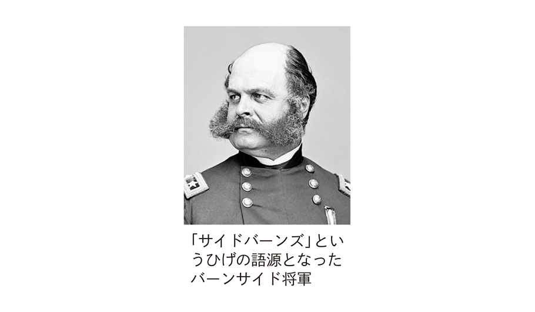
口ひげと顎ひげはあるが、頰にないのがimperial beard「皇帝ひげ」だ。下顎から長いひげが伸び、先が尖っているものが多い。またVandyke beardというひげもある。17世紀にイングランド王チャールズ1世の宮廷画家として名を馳せたAnthony van Dyke「アンソニー・ヴァン・ダイク」（1599～1641） が、王の肖像画を当時流行の短く先の尖った顎ひげをたくわえた姿で描いたことに由来している。
将軍と「売春婦」
南北戦争の間に生まれたもうひとつの英語がhooker、「売春婦」のことだ。「売春婦」には他にprostituteやwhore、あるいはcall girl、streetwalkerなどという単語があるが、このhookerは南北戦争で北軍の少将だったJoseph Hooker「ジョセフ・フッカー」（1814～1879） から来ている。「ファイティング・ジョー・フッカー」という渾名を頂戴するほど好戦的で、敵に執拗な攻撃を加えることで知られた。大敗することも一度や二度ではなく、彼の配下では多くの兵隊が戦死した。
だがフッカーは軍隊の日々の食事、宿舎の衛生状態の改善につとめたことでは高く評価されたのだった。だが、そこにひとつ大きな問題があった。ワシントンDC近くの彼の兵営は「酒場と売春宿の組み合わせだ」と揶揄されたのである。こうしてHookerの名前が南北戦争の軍功ではなく、「売春婦」という不名誉な一般名詞として後世に残ることになった。
ゲティスバーグ演説
1863年、リンカーン大統領はEmancipation Proclamation「奴隷解放宣言」を発表する。南軍が支配する地域において奴隷を解放することを命じたのである。そしてその年、北軍はBattle of Gettysburg「ゲティスバーグの戦い」で勝利を収める。
その戦いから4か月後、この地に国立戦没者墓地が完成し奉納式典が行われた。最初に演説をしたのは元ハーヴァード大学学長で、イギリス公使や国務長官などを歴任したEdward Everett「エドワード・エヴェレット」（1794～1865） 。彼は雄弁家として知られており、演説は1時間20分にもおよぶ長いものだった。
続いて演説をしたのがリンカーン大統領だった。2分足らずの短いスピーチで、声も低かったために、参列した人々も注意を向けることはなかった。しかし、近くにいた新聞記者が演説を書き留めて記事にしたために、"Government of the people, by the people, for the people"はdemocracy「民主主義」の真髄を示す歴史的な言葉として有名になり、後世に伝えられることになった。文章としては、この後"... shall not perish from the earth."と続く。文全体を訳すと、「人民の、人民による、人民のための政治は、この世から消え去ることはない」という意味だ。この演説はthe Gettysburg Address「ゲティスバーグ演説」と呼ばれる。
実は、この名句はリンカーンのオリジナルではない。Theodore Parker「セオドール・パーカー」（1810～1860） という哲学者・牧師の著書から引用したものなのである。だがこのパーカーも、政治家・法律家で雄弁家としても名を馳せたDaniel Webster「ダニエル・ウェブスター」（1782～1852） が1830年に行った演説の一部を拝借したものだった。それは"The people's government made for the people, made by the people, and answerable to the people."「人民のためにつくられ、人民によってつくられ、人民に対して責任を負う人民の政府」というものだった。この方が英語としては、はるかに分かりやすい。
川の途中で馬を代えるな
1864年、リンカーンは共和党から大統領候補に指名され、再選を目指すことになった。だが、この時点ではまだ南北戦争は終わっておらず、党内にはリンカーンを候補にすることに反対する人も多かった。その指名を受諾する演説の中で、リンカーンは"Don't swap horses in midstream."「川の流れの真ん中で馬を取り代えるな」と述べたのだった。まだ南北戦争という"激流"を渡っている最中であり、方針を変えずに現状維持で押し通すべきだということを意味していた。
この表現は今でもよく使われ、swap「取り代える」をchangeやswitchに、in midstream「川の流れの真ん中で」をwhile crossing the stream「川を渡っている最中に」などと変化させるバージョンもある。
2013年に日本で公開されたスピルバーグ監督の映画"Lincoln"「リンカーン」をご覧になった方もいるだろう。1863年にリンカーンが発表した「奴隷解放宣言」は戦時中だけの時限立法で、戦争が終われば効力は失われるものだった。奴隷解放を永久のものとする「憲法修正第13条」を苦労の末に議会で可決させ、暗殺されるまでの姿を描いたものだ。
映画は、北軍に有利な戦況ではあったものの、まだ激しい戦闘が続き多数の戦死者を出していた頃から始まる。リンカーンは党内でも多くの反対に遭い、「あなたが奴隷制度の廃止を諦めれば、今すぐにでも戦争は終わるのだ」などと
リンカーンは議会工作に奔走する。共和党内の反対派を説得し、次に敵対する野党の民主党の支持を得ることを目指す。民主党には奴隷制度の撤廃に反対する議員が多かったからだ。リンカーンは裏工作まで駆使して、他の議員に影響力のある民主党のキーパーソンを押さえ、ついには「奴隷解放」修正案を可決に持ち込んだのである。
私はこの映画を見ている途中で、驚いて椅子から落ちそうになった。奴隷制度撤廃に強硬に反対していたのが民主党だったからだ。初の黒人大統領バラク・オバマはその民主党選出だ。何という歴史の皮肉だろうか。
名前はMud
リンカーンは再選を果たし、1865年3月4日には就任式が行われた。そして4月3日アメリカ連合国の首都リッチモンドが陥落、9日に南軍総司令官のリー将軍が降伏し南北戦争は事実上終結した。
リンカーンがワシントンDCのフォード劇場で観劇中に銃撃されたのは14日夜、死亡したのは翌朝だった。暗殺犯はJohn Wilkes Booth「ジョン・ウィルクス・ブース」。演劇界では有名なシェークスピア役者で、南部連合の支持者だった。
ブースはボックス席に座っていたリンカーンを背後から射殺し、劇場の裏手に用意しておいた馬にまたがり逃走したのだが、その際に脚の骨を折った。
その夜、Samuel Muddという医者のもとに、脚の骨を折った男が訪れた。医者が治療を施すと、その男は出て行ったのだが、翌日マッド医師と妻は新聞でリンカーン暗殺事件のことを知って驚いた。何と昨晩の患者がリンカーンの暗殺者ブースだったのである。マッドはすぐに警察に行き、昨晩の奇妙な患者について話した。ところが、マッドは暗殺共謀の罪で逮捕され軍法会議にかけられ、何と終身刑になってしまうのである。
裁判記録では、マッドは南軍の工作員であり、ブースの治療を終えた後、こっそりと仲間のもとに向かわせたとされた。初めての大統領暗殺事件にアメリカの世論は動揺し、逮捕されたマッドにも猛烈な非難を浴びせた。そのためにA person's name is mud.という表現が人をののしる言葉として使われるようになった。「（名声・信用が）地に落ちた」「とても嫌われている」「運がつきる」という意味だ。例えばBecause of the bribery scandal, the governor's name is mud.と言えば、「贈収賄事件のために、その知事の信頼はガタ落ちになった」という意味だ。
40エーカーとラバ1頭
南北戦争が終わろうとしていた頃のことだ。北軍の少将William Sherman「ウィリアム・シャーマン」（1820～1891） がサウスカロライナ州、ジョージア州、フロリダ州の沿岸に住む黒人解放奴隷に40 acres and a mule「40エーカーの土地とラバ1頭」を与えるという「土地特例法」を発布した。
しかし、リンカーン暗殺後に第17代の大統領となったAndrew Johnson「アンドリュー・ジョンソン」（1808～1875） が、すぐにその特例法を取り消してしまう。それ以降アメリカでは、この40 acres and a mule「40エーカーの土地とラバ1頭」が破られた約束の代名詞となった。
1960年代の黒人運動指導者といえばMartin Luther King「マーティン・ルーサー・キング」（1929～1968） 。非暴力を貫いて公民権運動を推し進めた英雄である。それとは対照的に暴力の必要性を主張したのがMalcolm X「マルコム・エックス」（1925～1965） で、彼が主人公の映画をご覧になった方もいるだろう。その映画の監督Spike Lee「スパイク・リー」は自分の映画制作会社を40 Acres & A Mule Filmworksと名づけていた。
2008年バラク・オバマがアメリカ初の黒人大統領になった時、有名な黒人ジャーナリストLarry Wilmoreが"The Daily Show"というテレビ番組に出演して、"We would have been happy with 40 acres and a mule."と述べた。ニュアンスを補いながら訳すと、「もし我々黒人が約束通り40エーカーの土地とラバ1頭をもらっていたら、それに満足して大統領になろうなどとは考えなかっただろう」という皮肉たっぷりのコメントだったのである。
Pax Britannica
ここでちょっとイギリスに目を向けてみよう。19世紀のイギリスは産業革命を経て「世界の工場」と呼ばれるほどの繁栄の絶頂にあった。この時代はちょうどVictoria「ヴィクトリア女王」（在位1837～1901） の時代と重なっており、Pax Britannica「パクス・ブリタニカ」（イギリスの平和）と呼ばれた。
歴代のイギリス国王の中には、スキャンダルを起こす者も少なくなかったが、ヴィクトリア女王は浮わついたところがなく堅実な性格で、「大英帝国の母」とも呼ばれた。
この頃、イギリスは世界各地に植民地を所有していた。今でもカナダ・ブリティッシュコロンビア州の州都Victoria「ヴィクトリア」、オーストラリアのVictoria「ヴィクトリア州」、香港のVictoria Harbour「ヴィクトリア港」、アフリカのLake Victoria「ヴィクトリア湖」、Victoria Falls「ヴィクトリア滝」など、女王の名にちなんだ地名や名勝が数多く残っている。
ヴィクトリア女王時代の1851年には、ロンドンで世界初の万国博覧会が開催され、40か国が参加し延べ600万人以上が来場したといわれる。いやでもイギリスはその工業力と経済力を世界中に誇示することになった。
ツベルクリンとBCG
「世界の工場」と呼ばれ、パクス・ブリタニカの時代を謳歌して、世界初の万国博を開いたイギリスであったが、その陰で結核という病が大都市の工場労働者を苦しめていた。彼らは賃金が安く最低限の生活も維持できず、生活環境も労働環境も劣悪で、長時間の過酷な労働を強いられたのだった。当時のロンドンでは5人に1人が結核で死んだとされる。
「結核」は英語でtuberculosis、略してTBとも言う。結核菌が肺に入ると、小さな隆起状の病巣ができる。これを「結節」というが、英語ではtubercleとなる。tuberculosisとは「結節の病」という意味だ。
ドイツのRobert Koch「ロベルト・コッホ」（1843～1910） が結核菌を発見し、1890年に結核菌を培養してつくった「透明な褐色の液」で結核菌の有無を調べる方法を発見する。それがtuberculin「ツベルクリン」だ。「ツベルクリン反応」は英語ではtuberculin reactionとなる。
結核予防のためのワクチンがつくられ、使用されるようになるのは、1921年になってからのことだった。フランス・パスツール研究所のAlbert Calmette「アルベール・カルメット」とCamille Guérin「カミーユ・ゲラン」が13年にわたってウシ型結核菌を培養してつくったもので、Bacillus Calmette-Guérin「カルメットとゲランの細菌」の頭文字をとってBCGと名づけられた。
ボイコットされたボイコット
アイルランドは、クロムウェルによるピューリタン革命の時に事実上イギリスの植民地となっていた。1801年には正式にUnited Kingdom「連合王国」に併合され、United Kingdom of Great Britain and Ireland「大ブリテン及びアイルランド連合王国」の一部となった。しかし、多くの農民はイギリス人不在地主の小作人で貧困に喘いでいた。1840年代後半にはジャガイモ飢饉が起こり、数年間に100万人以上の人々が移民となってアメリカに渡ったといわれている。
1879年にIrish Land League「アイルランド土地同盟」が結成された。政治家のCharles Parnell「チャールズ・パーネル」（1846～1891） を指導者として、イギリス人の地主制の廃止と土地国有化を主張し、激しい農民運動を展開したのだった。
ちょうどそんな折、Charles Boycott「チャールズ・ボイコット」（1832～1897） というイギリス人の退役軍人がアイルランドにやって来る。1880年、アイルランド土地同盟結成の翌年のことだった。ボイコットは、イギリス人の不在地主から1500エーカーの土地と38人の小作人の管理を任されたのである。不在地主に代わって土地を管理し、農民から小作料の取り立てをするのが彼の仕事だった。
その年も農作物は不作だった。小作人はボイコットに小作料の引き下げを要求したが、彼は断固として拒絶し容赦ない取り立てを行った。支払いのできない小作人に対しては、土地を取り上げて追放したのだった。
これに対し農民たちは、全員で全ての農作業を拒否し、ボイコットとはいっさいの接触をしないという対抗手段を取った。商店はボイコットに物を売ることも拒否し、彼の家の倉庫に貯蔵されている農産物も盗まれるなどして餓死寸前になった。果てには脅迫状が舞い込み、銃で命を狙われる事態になり、ボイコットは命からがらイギリスに逃げ帰ったのである。
ボイコットが『タイムズ』紙の記者に、この一連の出来事を語り、センセーショナルな新聞記事となったことで、人名のboycottが「ボイコット（する）」「排斥・不買運動（をする）」という一般動詞・名詞になったのである。ボイコットは「ボイコットされた人」だったのだ。
汗とインスピレーション
アメリカの発明家Thomas Alva Edison「トーマス・アルヴァ・エジソン」（1847～1931） がphonograph「蓄音機」を実用化して名声を獲得したのは1877年のことだった。
ニューヨークのペン・ステーションからニュージャージー・トランジットという私鉄の郊外電車に乗って、Princeton University「プリンストン大学」に向かう途中にEdison「エジソン」という駅がある。その駅から少し離れたMenlo Parkという場所に1876年から1887年までエジソンの研究所があったことで名づけられた駅名だ。
その研究所は、蓄音機や電話などを商品化しただけでなく、フィラメントに日本の竹を使った「白熱電球」を開発したことで知られる。発電機・ヒューズ・ソケットなど電燈を灯すための一連の装置を実用化し、ガス燈業者の反対にあいながらも白熱電球を灯すデモンストレーションを大々的に行い大評判となった。
このメンロパーク時代はエジソンの最も脂がのっていた時代であり、The Wizard of Menlo Park「メンロパークの魔法使い」というニックネームがついた。
エジソンといえば、「天才とは1%のひらめきと99%の努力である」という言葉がよく知られている。オリジナルの英語ではGenius is one percent inspiration and 99 percent perspiration.と言う。inspirationは「霊感」のことで、日本語でも「インスピレーション」というので意味はとれるだろう。perspirationは日本語では「努力」と意訳されているが、「汗、発汗」のことだ。普通「汗」はsweatと言うが、それより硬く上品な表現であり、この名言に重みを与えている。
この言葉は努力の大切さを強調するものだと思われているが、全く逆だという説もある。いくら汗をかいて努力しても、才能がなければその努力は無駄になるという意味だというのである。
ところで、このinspirationとperspirationの最後が-spirationとなっていて、韻を踏んでいるのがお分かりになるだろう。もうひとつ韻がある。percent「パーセント」とperspirationのperce-とpers-だ。
エジソンは瞬間的にこのような洒落た韻を踏んだ名言を発したのだろうか？ 実は、これはエジソンが言った言葉ではない。新聞記者のインタビューを受けたエジソンが、翌日その記事を見たらこの言葉が載っていたというのだ。エジソンは「確かにそういう趣旨のことは言ったと思うが......」と述懐していたという。
イギリスの砲艦外交
ヨーロッパに目を転じると、19世紀後半はイギリスをはじめとするヨーロッパ諸国が植民地獲得にしのぎを削った時代だった。この頃生まれた言葉にgunboat diplomacy「砲艦外交」がある。植民地にしようと狙う地域の港に入って大砲を撃ち、そこの支配者や住人を脅しながら、同時並行的に話し合いを進め、占領政策を進めたり不平等条約を結んだりする外交手法である。
1840年にイギリスと中国清朝との間で起こったthe Opium Wars「アヘン戦争」でも、イギリスの軍艦は海上から陸に向けて猛烈な艦砲射撃を行った。この戦争の原因は、イギリスで茶の需要が高まり中国茶の輸入が急増したにもかかわらず、産業革命で大量生産された本国の綿製品が中国では売れなかったことだった。イギリスが中国の茶を一方的に輸入し代価を銀で支払っていたために、イギリスから大量の銀が中国に流出し、イギリス経済が苦境に陥ったのである。
イギリスはtriangular trade「三角貿易」で打開をはかる。インドにopium「アヘン」を製造させ、イギリスの綿製品をインドに輸出してアヘンを購入、そのアヘンを中国に輸出して茶の支払いに充てるというものだった。
中国ではアヘンの吸引が広がったため、大量のアヘンを押収して焼却し、イギリスに今後アヘン貿易をしないという誓約書をつきつけた。これに対してイギリスは自由貿易の原則を主張し海軍を派遣したのだった。イギリスの圧倒的な海軍力の前に清は屈服し、香港の割譲、広州など5つの港の開港、賠償金の支払い、さらには治外法権を認めるという屈辱的な南京条約を結ばざるを得なかった。
考えてみれば、日本に黒船で来航したペリー総督も江戸湾から大砲をぶっ放した。空砲だったといわれているが、このgunboat diplomacy「砲艦外交」によって、江戸幕府は開国を迫られ、日米和親条約・日米修好通商条約という不平等条約を結ぶことになったのである。
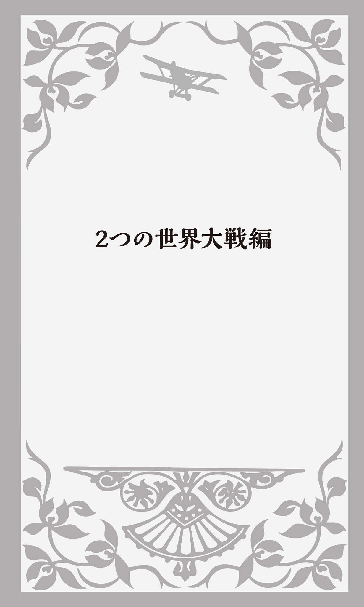
バルカンの「火薬樽」
1914年6月、バルカン半島ボスニアの州都サライェヴォで、オーストリア・ハンガリー帝国の皇位継承者のArchduke Franz Ferdinand「フランツ・フェルディナント大公」（1863～1914） とその妻が銃で暗殺された。Archduke「大公」とは、ハプスブルク家およびハプスブルク・ロレーヌ家出身の皇太子だけに使用される称号で、「duke（公爵）以上で王よりは下の位」のことだ。この事件をきっかけにWorld War I / the First World War「第一次世界大戦」（1914～1918） が勃発する。
暗殺者はGavrilo Princip「ガヴリロ・プリンツィプ」というセルビア人青年で、「大セルビア主義」（セルビアを中心に南スラヴ諸民族の統一国家建設を目指そうとする理念） という民族主義思想を掲げる秘密テロ組織「ツルナ・ルカ」のメンバーだった。ツルナ・ルカは英語ではBlack Hand、日本語では「黒手組」と呼ばれ、正式名称は「統一か死か」だった。
バルカン半島では、オーストリア・ハンガリー帝国がボスニア・ヘルツェゴヴィナを併合していた。この地域にはスラヴ系民族が多く、オーストリアへの抵抗運動を繰り広げていた。またオーストリアと汎スラヴ主義を掲げるロシアとの対立、フランスとドイツの領土争いなど複雑な列強の軋轢がバルカン半島の国々の利害と結びつき、一触即発の状況となっていた。
そのためバルカン半島はthe powder keg of Europe、日本語訳では「欧州の火薬庫」と呼ばれていた。powder「パウダー」とは「粉」のことだが「火薬、爆薬」という意味もある。kegは「樽」で、もともと「ビール樽」のことだった。きっと、日本語にする時に直訳の「欧州の火薬樽」では滑稽なニュアンスになってしまうため「火薬庫」と翻訳されたのだろう。
この1発の銃声によって、オーストリアがセルビアに、ドイツはフランスとロシアに宣戦布告しヨーロッパは戦闘状態に陥る。戦争はさらに拡大し、ドイツ・オーストリア・オスマン帝国などの「同盟国」側とフランス・ロシア・イギリスなどの「連合国」側に分かれての戦いとなる。日本も日英同盟を理由に連合国側で参戦し、世界を巻き込む大戦となった。
アメリカはモンロー主義を掲げ中立の立場をとっていた。だが、1915年にイギリスの豪華客船ルシタニア号がニューヨークに向かって航行中、ドイツの潜水艦U-boat「Uボート」によって無警告で撃沈され、1198人が犠牲となるという事件が起こった。その中に128人のアメリカ人が含まれていたことが分かると、国民世論は参戦に傾く。
U-boatとtank
U-boatはドイツ語ではU-Boot と言った。Unterseeboot 「海の下の船」の略語で「潜水艦」という意味だ。ドイツは陸軍を主力に戦争を展開することを考えていたので、大戦艦主義をとるイギリスと比べると海軍力は劣っていた。その代わりに、建造費が安く敵からの攻撃も受けにくい潜水艦を建造する。密かに敵の大型戦艦に忍び寄って魚雷を発射して大戦艦を撃沈する潜水艦の方が、より効果的な戦果が挙げられると考えたのだった。第一次世界大戦中に300隻が建造され、「Uボート」はドイツ潜水艦の代名詞となった。
law of war「戦争法」では、戦争とは関係のない漁船や商船、中立国の船舶への攻撃は禁止されていた。しかし、ドイツは自らが定めた戦闘海域を通過した場合には、どの国のどんな船であろうとUボートによるunrestricted submarine warfare「無制限潜水艦攻撃」を繰り返した。アメリカはこれがwar crime「戦争犯罪」に当たるとして、1917年ついに参戦したのだった。
「戦車」が実際に登場したのも、第一次世界大戦だった。地上戦では、機関銃など殺傷力の高い武器ができたために、穴を掘って兵士がそこに隠れては攻撃するという戦法を取らざるを得なくなった。その「穴」「
tankという英語がなぜ「戦車」の意味で使われるようになったのかについては、とても興味深い経緯がある。tankはもともと「気体を注入したボンベ」、あるいは「水を入れておくタンク」「水槽」のことだった。イギリス軍は、この新兵器を開発している最中に秘密が漏れるのを防ぐためWater Carrier「水運搬車」という暗号名で呼んでいた。当時、開発チームの名称は新兵器の暗号名の頭文字を並べて呼ぶ慣例があったのだが、Water Carrierの頭文字を並べると"WC"となってしまい、ちょっと具合が悪かった。WCはwater closet「便所」の略だからだ。
そこで暗号名をTank Supply「水槽供給」と変更し、開発チーム名を"TS"としたのだった。かくして「戦車」の正式名称もtankとなった。
この戦車を前線に送り込む際にも、水を運ぶtank「水槽」という名目にして、イギリスがどんな新兵器を開発したのか最後まで隠し通したのだった。
over thereは「ヨーロッパ」
1917年アメリカがドイツに宣戦布告した直後、"Over There"「彼方へ」という軍歌が発表され、兵士の間で広く歌われるようになった。作詞・作曲はGeorge M. Cohan「ジョージ・M・コーアン」、アメリカ東海岸を列車で旅行している最中に突然インスピレーションが浮かんだという。
"Johnny, get your gun"「ジョニーよ、銃をとれ」で始まるこの歌は、"Over there, over there"「向こう側へ、向こう側へ」というフレーズが繰り返される。これはアメリカから大西洋を挟んだ向こう側、つまり「ヨーロッパ」を意味していた。この歌以降、「向こうに、あそこで」という日常的な表現だったover thereが「ヨーロッパへ、ヨーロッパで」という意味でも使われるようになったのである（若いアメリカ人何人かに聞いてみたら、誰もこのover thereの意味を知らずガッカリした） 。
女スパイMata Hari
Mata Hariは第一次世界大戦中にフランスのパリを中心に活躍したマレー系オランダ人のダンサーで、ドイツの女スパイとしてフランス軍に捕らえられ有罪となり銃殺された。Mata Hari とはマレー語で「夜明けの目」つまり「太陽」を意味し、本名はMargaretha Zelle「マルガレータ・ツェレ」（1876～1917） といった。
彼女はオランダ人将校と結婚、後に離婚し、パリで踊り子になって自らをMata Hari と称した。その性的魅力で多くのドイツやフランス軍将校とベッドを共にし、フランスの極秘情報をドイツ側にもたらした。銃殺寸前に自ら服の前をはだけ裸で銃殺されたともいわれ、伝説の「女スパイ」として名が残った。そこからMata Hariが「女スパイ」の代名詞となったのである。
第二次世界大戦の際も、川島芳子（1907～1948）
が"東洋のマタハリ"と呼ばれた。彼女は清朝の皇族、
17歳の時に自殺未遂事件を起こした後、断髪して男装するようになり"男装の麗人"と呼ばれるようになった。以前、黒木メイサが主演したテレビドラマを見たのだが、養父・川島浪速が彼女を強姦したことが、自殺未遂と男装の理由であることを暗示するストーリーとなっていた。
1927年にモンゴル族出身の満州国軍人カンジュルジャップと結婚するが、すぐに離婚。上海に渡り駐在武官の田中隆吉と交際し、日本軍の工作員として諜報活動を行ったとされている。戦後間もなく中華民国によって逮捕され、銃殺刑となった。
ヴェルサイユ体制とアメリカの繁栄
1918年イギリス・フランス・アメリカ・日本などの連合国の勝利で第一次世界大戦は終了した。翌1919年、連合国代表によってパリ講和会議が開催され、Treaty of Versailles「ヴェルサイユ条約」が調印された。ドイツは全ての植民地を失い、巨額の賠償金の支払い、アルザス・ロレーヌ地方のフランスへの返還、軍備の制限などを強いられた。
この時に同時に設置されたのがLeague of Nations「国際連盟」。世界の恒久平和を目指す大規模な国際機構で、スイスのジュネーヴに本部が置かれた。しかし、ドイツなど敗戦国や革命直後のソヴィエト・ロシアは排除され、アメリカも議会の反対が強く参加しなかった。その後、ドイツは1926年に加盟が認められたが、1933年にヒトラー政権となり脱退、ソヴィエト・ロシアは1934年に加盟するが、1939年に除名された。
アメリカは第一次世界大戦の間、連合国に物資や戦債を提供して大きな利益を上げ、債務国から債権国に転じて国際金融市場の中心となった。また、大戦中に女性が軍需生産に従事するなど社会進出を果たして発言力を増し、1920年には女性参政権が認められることとなった。
経済的にも自由放任政策がとられ、フォード車に代表されるモータリゼーションの発達、洗濯機、冷蔵庫など家庭電化製品の急速な普及によって大量生産・大量消費時代を迎えた。同時にラジオ・映画・スポーツも大人気となり、大衆娯楽時代が到来したのである。
密造酒は「月の輝き」
このアメリカ繁栄の時代に影を落としているのが、National Prohibition Act「禁酒法」だった。1920年から1933年までアメリカ国内でのアルコールの製造・販売・輸送が全面的に禁止されたのである。そのために、カナダ・メキシコ・カリブ海諸国の酒蒸留所や醸造所は大いに栄え、そこから不法にアメリカ国内に密輸されるようになった。
Al Capone「アル・カポネ」（1899～1947） などギャングが密造酒の製造や取引を行い大金を稼ぐようになると、FBI捜査官との銃撃戦や利権をめぐるギャング同士の抗争も頻発し、市民も含めて多くの犠牲者が出た。
「密造酒」は、ビールの場合などはhome brewと言う。「家で醸造された酒」ということだ。バーボンなどウィスキーの「密造酒」は口語でmoonshineとなる。夜、月明かりを頼りにキラキラと輝く密造酒を製造したことを髣髴させる表現だ。動詞では「酒の密造をする」という意味で使われる。「密造酒をつくる人、酒の密造者」「酒の密売者」ならmoonshinerだ。
もうひとつ別に「密造酒」という意味の英単語がある。それがmoonlightだ。もともと「月の光、月光」という意味だが、これもmoonshineと同じように夜中にひっそりと酒をつくっているイメージからできた言葉だ。名詞ではmoonshineと同じ「密造酒」だが、動詞では「密造酒を取引する」という意味になる。
このmoonlight、さらにもうひとつ「副業をする、アルバイトする」という意味もある。昼間は普通に働き、夜になると別の仕事をすることだ。税金を払いたくないためにこっそり副業をしたり、失業保険や生活保護費をもらっているのに秘密で働いて収入を得るような場合にも使われる。
「月」ではなく「太陽」を使ったsunlightという英語もある。もちろん「太陽の光、日光」ということだが、動詞では、昼間に正々堂々と「2つ以上の仕事を掛け持ちする」という意味になる。moonlightのような隠微な響きはない。普通なら仕事をひとつするだけでも大変なのに、能力とヴァイタリティがある人が公の立場で2つの仕事を同時にすることだ。
Mussoliniとfascism
イタリアは第一次大戦の戦勝国だったが、期待したほど領土を獲得できず、国民は講和条約に強い不満を持った。さらに戦後のインフレが襲い、人々は政府への不信を強めた。北イタリアの工業地帯では、ロシア革命の影響を受けた労働者が社会改革を求めて工場を占拠し、農民も各地で反乱を起こす。
これに危機感を持ったBenito Mussolini「ベニート・ムッソリーニ」（1883～1945） がNational Fascist Party「ファシスト党」（イタリア語の正式名称はPartito Nazionale Fascista で、略称はPNF ） を結成し、左翼運動を武力で抑えた。絶対権力を持つ独裁者が国家・国民を指導するtotalitarianism「全体主義」を推し進め、ムッソリーニは首相となって独裁体制を確立した。このような全体主義的政治体制・思想をfascism「ファシズム」と言う。
fascismはイタリア語のfascismo 「結社、群れ」から来ている。もともとはラテン語のfascēs 「ファスケス」に由来する。「斧のまわりに木の棒の束をくくりつけたもの」で、古代ローマでは高位公職者の護衛の権威の象徴だった。斧は「権利」と「力」の象徴であり、周囲にくくられた棒の束は「団結する人々」を表していた。
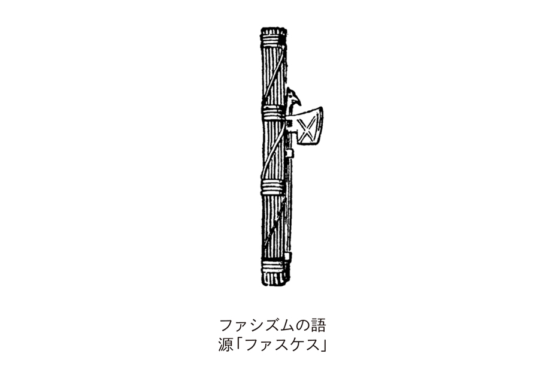
HitlerとNazi
ドイツでは、Adolf Hitler「アドルフ・ヒトラー」（1889～1945） 率いるNazi Party「ナチ党」「ナチス」が台頭していた。イタリアのファシズムの影響を受け、莫大な賠償金を課したヴェルサイユ条約の破棄、ユダヤ人排斥、民族共同体建設による国民生活の安定などを唱え、反民主・反共産主義を標榜して独裁政治を推し進めた。Naziとはドイツ語のNationalsozialist 「国家社会主義者」の略称で、Nazism「ナチズム」はドイツの「国家社会主義」のことだ。
当初は政敵への過激な暴力などもあり支持されなかったが、世界恐慌によって失業者が増え社会不安が広がると、巧みな宣伝活動によって支持者も増えていった。1932年には選挙で第一党となり、翌1933年にヒトラーは首相に任命される。
ナチスの紋章「 」はHakenkreuz 「ハーケンクロイツ」と呼ばれた。日本語では「鉤十字」、英語ではswastika「スワスティカ」と言う。現代では、ナチスの忌まわしい記憶を呼び起こすということで、ヨーロッパの国々では、このマークを法律で使用禁止にしている。
ナチス式敬礼の際に発した言葉がHeil Hitler! 「ハイル・ヒトラー」、「ヒトラー万歳！」だ。Heil はドイツ語で「万歳」を意味し、英語ではhailとなる。英語の動詞では「挨拶する」「歓迎して迎える」ということだが、間投詞では「万歳」という意味になる。Hail to the King!なら「国王万歳！」だ。
ちなみにhail には「
2015年7月イギリスの大衆紙"The Sun"『ザ・サン』が公式サイトに、エリザベス女王がナチス式敬礼をしている写真を掲載した。女王がまだ6歳の1933年、ヒトラーが首相になったばかりの頃の写真だ。母親（後のエリザベス皇太后）、妹のマーガレット王女、叔父のエドワード王子（後のエドワード8世）と一緒に右手を挙げている姿が写っている。
その記事の見出しがTheir RoyalHEIL nessesとなっていた。そのHEIL はもちろんドイツ語のHeil Hitler! のHEIL なのだが、これには少し説明が必要だろう。英語で「殿下」はRoyal Highnessと言う。英国王室で子や孫に用いられる呼称で、男性ならHis Royal Highness、女性ならHer Royal Highness、複数ならTheir Royal Highnessesとなる。その"High"を"Heil "と洒落て皮肉ったのである。
蛇足だが、現在のドイツではレストランでウェイターやウェイトレスを呼ぶ時も、生徒が教室で挙手する場合も、人差し指を上に向けなくてはいけない。五本の指全てを上に向けると、ナチス式敬礼になってしまうからだ。
axis of evil「悪の枢軸」
1939年ナチス・ドイツはポーランドに侵攻し、イギリス・フランスがドイツに宣戦布告してWorld War Ⅱ / the Second World War「第二次世界大戦」が始まる。
翌1940年には日本・ドイツ・イタリアがthe Tripartite Pact「三国同盟」を結び、1941年12月8日（現地時間では12月7日） に日本軍の戦闘機がアメリカ・ハワイのPearl Harbor「真珠湾」を奇襲し、マレー半島に軍を上陸させて、アメリカ・イギリスに宣戦布告すると、戦線はアジア太平洋地域にも広がる。ドイツ・イタリアもアメリカに宣戦布告、文字通りの「世界大戦」となった。
こうして日・独・伊の「ファシズム陣営」と米・英・ソ連などの「反ファシズム陣営」の戦いとなったのである。「ファシズム陣営」はthe Axis「枢軸国」とも呼ばれた。axisとは「軸」のことで、the axis of the earthと言ったら「地軸」のことだ。これが「国と国との結びつき、同盟」という意味で使われるようになったのは、1936年にイタリアのムッソリーニが行った「ローマとベルリンを結ぶ垂直線を"枢軸"として国際関係は回転する」という演説がきっかけだった。
このaxisという単語は、最近でもaxis of evil「悪の枢軸」という表現でよく使われている。アメリカのジョージ・W・ブッシュ大統領が、9・11同時多発テロ事件後の2002年1月の一般教書演説で「北朝鮮・イラン・イラク」の3か国を「テロ支援国家」と断定し「悪の枢軸」と呼んだことから、海外ニュースでも盛んに聞かれるようになった。
Holocaustは宗教用語
ドイツのナチスは政権を獲得すると、国内の多くのユダヤ人の迫害を始め、ドイツ圏以外への大量強制移動を計画した。しかし、ポーランドの占領によって、さらに200万人のユダヤ人を抱え込むようになると、concentration camp「強制収容所」に送って強制労働をさせ、毒ガスを用いて殺害を行うようになった。
この時の「大量虐殺」のことを英語でthe Holocaust「ホロコースト」と言った。これはもともとユダヤ教の宗教用語で「神前に供える獣の丸焼き」のことで、ユダヤ教徒の間には神聖な「ホロコースト」をユダヤ人虐殺の意味で使用することに反対する声もある。
もう何年も前になるが、私はニューヨーク・マンハッタンの南端にあるMuseum of Jewish Heritage─a Living Memorial to the Holocaustに行ったことがある。日本語では「ユダヤ遺産博物館」と訳される。入口を入って、一緒に行った娘に日本語で「入場料はいらないみたいだね」と言った後、しまったと思った。日本はドイツと同盟関係にあったわけだし、ユダヤ人の敵だった。日本人だと分かると「出ていけ！」などと怒鳴られるのではないかと思ったのだが、スタッフはニコニコ顔で"Welcome!"と言って迎え入れてくれたのだった。
内部を見学していくうちに、その笑顔の理由が分かった。3階の一角に"Sugihara Room"が設けられていたのだ。「杉原
「マサカ」のmassacre
「大虐殺」「大量殺戮」を意味する英語は、他にもまだいろいろある。まずgenocideだ。ギリシア語のgenos 「種族」に由来するgeno-「人種」とラテン語のcaedere 「殺す」から変化した-cide「殺し、殺すもの・人」が結合した単語だ。-cideはsuicide「自殺」やhomicide「殺人」にも使われている。homō はラテン語で「人」のことだ。
massacreも「大虐殺」のことだ。発音をカタカナで表せば「マサカ」となり、「マサックル」とはならない（フランス語なら「マサックル」と発音するのだが......） 。語呂合わせで英単語を暗記する方法があるが、高校の時に英語の先生に「マサカの大虐殺」と覚えればいいと教えられた。
新約聖書のMatthew「マタイによる福音書」にthe Massacre of the Innocents「幼児虐殺」という話が出てくる。ベツレヘムという村で、新しいユダヤの王、つまりイエス・キリストが生まれたと聞いたユダヤ王ヘロデが、自分の身が危うくなるのではないかと心配になり、2歳以下の男児を全て殺害させたという出来事のことだ。
この時、イエスの養父ヨセフは夢の中に現れた天使に「マリアと一緒にイエスを連れてエジプトに逃げなさい」と告げられ、その夜のうちに逃亡し、その後ヘロデ王が亡くなるまでベツレヘムに戻らなかった。
ベトナム戦争中の1968年、アメリカ軍の小隊が南ベトナムで村民を虐殺した「ソンミ村虐殺事件」は英語でMy Lai MassacreあるいはSon My Massacreと言い、ホラー映画の「悪魔のいけにえ」の原題は"Texas Chainsaw Massacre"（テキサスの電動のこぎりの虐殺）だった。
「大量虐殺」を意味する単語は他にもあり、slaughterやbutcheryは「家畜の解体処理」から来ている。carnageという単語はイタリア語のcarnaggio 「肉の供物」に由来し、scene of carnageと言うと「戦場などの修羅場」という意味になる。bloodbath（血の風呂）も「大虐殺」の意味だが、これは「大不況」とか「大量解雇」という場合にも使われる。
さらにethnic cleansing「民族浄化」などという表現もある。ethnicは「民族・人種（の）」、cleansingは「浄化、清め」ということだ。これも何とむごい言葉だろうか。説明をするだけで悲惨な気持ちになってくる。
gremlinという小悪魔
1984年にスピルバーグが制作したSFコメディ映画に"Gremlins"「グレムリン」がある。この映画の"主役"グレムリンとは、第二次世界大戦中に戦闘機のパイロットたちから、エンジンなどに故障を起こして墜落させると恐れられた「小悪魔」のことだ。
もともとRoyal Air Force（RAF）「英国空軍」で1920年頃から使われるようになった隠語で、「やっかいな任務を割り当てられた下士官や新兵」のことだった。語源としては、ヨーロッパ各地に伝承が伝わる悪戯好きの妖精Goblin「ゴブリン」とアイルランドの妖精Gruaimin 「グルアミン」が合成されたものだといわれている。
また Fremlin Beer「フレムリン・ビール」というビールの銘柄から来ているともされる。酔っぱらったパイロットが自分の操縦ミスをこの小悪魔のせいにしたのかもしれない。
これも音が似ているからだろうが、Kremlin「クレムリン」から来ているという珍説もある。旧ソヴィエト連邦政府の中枢が入っていた「クレムリン宮殿」のことだ。確かにソ連は、イギリスにとって得体の知れない不気味な国だったのかもしれない。
最近ではこのgremlinが、「初心者のサーファー」とか、コンピューターなどの「理由が分からない不可解なバグ」という意味で使われるようになっている。ちなみに、このbug「バグ」はもともと「虫」のことだった。それがIT用語で「故障、欠陥」を意味するようになったもので、日本語にもなっている。
「爆弾」と「大成功」と「地上げ」
ふつうblockbusterと言うと、「大ヒット」「大成功」「大当たり」という意味が思い浮かぶ。例えばThat movie was a blockbuster.と言うと「あの映画は大ヒット作だった」ということになる。「影響力のあるもの・人」、あるいは「大広告」も意味する英単語だ。
だが、これはもともと第二次世界大戦中にイギリスが使用した「超大型爆弾」のことで、街のone block（1区画）を丸ごとbust（破壊）できるだけの威力を持っていたことからこの名がつけられたのである。
そこから、たくさんの人が街の「1区画」をぐるりと取り巻くくらい「人気のある映画・演劇」のことになり、さらに本や音楽にまで使用範囲が広がった。blockbuster bookと言えば、世の中に衝撃を与えるような「大ベストセラー本」のことだし、blockbuster albumなら「大ヒットのレコード・CDアルバム」だ。
しかし、アメリカではこのblockbusterが口語で「地上げ屋」とか「悪徳不動産屋」という意味になっている。例えば、不動産屋が近所に良からぬ人たちが転入してくるという噂を流して居住者の家屋を安く買い上げ、これを高値で転売するような手口をblockbustingと言う。「1区画」を地上げして、街並み全体を変えてしまおうということで、爆弾を落として更地にするということと発想としては似ている。
英語になったkamikaze
日本語のkamikaze「神風」も、不幸なことに第二次大戦中に英語として通用するようになった。もともとは鎌倉時代、2度にわたる元寇で蒙古軍を敗退させた暴風のことだった。あの時のように「日本にはきっと神風が吹くはずだ。そうすればアメリカに勝てる」という意味を込めて、第二次大戦の終盤、敵の戦艦に戦闘機で体当たりする「特別攻撃隊」「特別攻撃機」の前に「神風」を付けたのだった。
こうしてkamikaze attackといえば「自爆覚悟の攻撃」という意味になった。現在でもkamikazeは「無鉄砲な人」とか、形容詞では「無謀な、向こう見ずな」という意味で使われている。I was nearly run down by a kamikaze on a motorcycle.と言うと「私はもう少しで無謀なバイクに
D-dayとground zero
第二次世界大戦は最初「枢軸国」が優勢だったのだが、1943年にソ連がスターリングラード（現ヴォルゴグラード）でドイツ軍を破り、連合軍が北アフリカからイタリア本土に迫ると、ムッソリーニは国王により首相を解任され、イタリアは無条件降伏した。
1944年6月6日、連合軍はフランスのNormandy「ノルマンディ」に上陸し、ドイツ占領下のフランスへの侵攻を開始した。この「上陸作戦決行日」はD-Dayと呼ぶ。もともと「戦争において重要な攻撃作戦開始日」のことを指すアメリカの軍事用語で、このinvasion of Normandy「ノルマンディ上陸作戦」の最初の日は歴史上最も有名なD-dayとなった。今ではD-dayは戦争とはかかわりなく「大切なことのある日」も意味するようになっている。
上陸からパリ解放までの全作戦はOperation Overlord「オーバーロード作戦」という暗号名で呼ばれた。overlordとは「大君主」のことだ。この時200万人もの連合軍兵士が上陸したといわれる。ドイツ軍は必死の抵抗を見せたが、1945年4月30日にはヒトラーが自殺し、5月8日にドイツは無条件降伏した。
太平洋地域ではアメリカ軍が、南方の島々に配備された日本軍を次々に破り、1945年4月に沖縄に上陸し地上戦を展開した。沖縄では民間人も含め20万もの人が犠牲となった。
そしてアメリカが新兵器のatomic bomb「原子爆弾」を8月6日に広島、9日に長崎に投下、日本は8月15日に降伏して第二次世界大戦は終わった。
原子爆弾の「爆心地」をground zeroと言う。広島・長崎の原爆投下爆心地やニューメキシコ州で行われた世界初の原子力爆弾の実験地、また戦後行われた核保有国の地上核実験の爆心地のことも意味する。
2001年9月11日にテロの標的になったWorld Trade Center「貿易センタービル」の跡地も、広島・長崎の原爆爆心地からの連想で、アメリカのマスコミがニュースでground zeroと呼んだのだった。
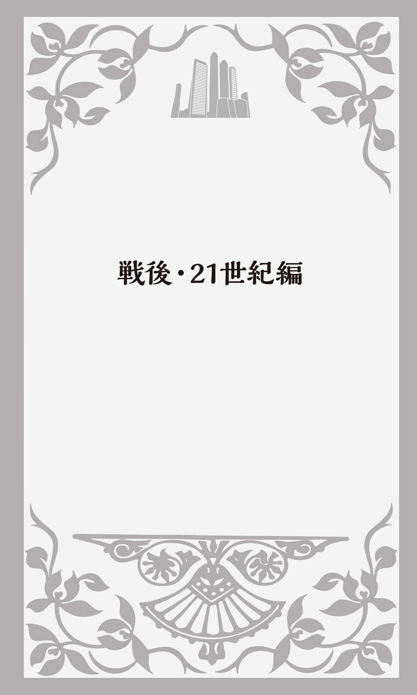
「冷たい戦争」Cold War
第二次世界大戦の後、大戦の反省から世界の平和と繁栄を実現させようとthe United Nations「国際連合」が誕生した。戦勝国の米・英・仏・ソ・中が常任理事国をつとめるthe Security Council「安全保障理事会」を設置し、国際紛争解決のために経済的・軍事的制裁を決定する強力な権限が与えられた。この5か国が中心となって、戦後の平和を維持しようとしたのだ。だが、そのうちに米ソの対立が表面化する。
アメリカを中心とする資本主義・自由主義陣営（西側）とソ連を盟主とする共産・社会主義陣営（東側）との対立構造は、Cold War（冷たい戦争）「冷戦」と呼ばれるようになる。
この冷戦構造によって生まれた、もうひとつの英語表現がiron curtain「鉄のカーテン」だった。西側と東側の経済的・人的な交流がなく情報も遮断されていたために、イギリスの首相をつとめたWinston Churchill「ウィンストン・チャーチル」（1874～1965） が"An iron curtain has descended across the Continent."「ヨーロッパ大陸を横切る鉄のカーテンが降りた」と演説したことで有名になった表現である。
私がこの「鉄のカーテン」という言葉で思い出すのが、プロ野球のV9時代のジャイアンツのことだ。私がまだ小学校か中学校の頃だった。川上哲治監督率いるジャイアンツはアメリカ・フロリダ州のベロビーチで春のキャンプをするのが恒例だった。そこでサインプレーを用い、ヒットエンドラン、犠牲バントなどを駆使したドジャース（もともとNY近郊のブルックリンが本拠地だったが、1958年に西海岸のロサンゼルスに移った） 戦法（今では「スモール・ベースボール」と呼ばれる）を日本のプロ野球界にいち早く導入した。宮崎キャンプではその戦法を選手たちに徹底的に身につけさせるために、報道陣を練習場からシャットアウトしたのだった。
その時スポーツ新聞の一面に掲げられたのが「哲のカーテン」という見出しだった。言うまでもなく、「哲」は川上監督の「哲治」という名前から来ている。
「洗脳」brainwashing
1950年、朝鮮半島でKorean War「朝鮮戦争」が勃発する。北緯38度線を境界に北半分をソ連が、南半分をアメリカが占領下におき、1948年に南で大韓民国（韓国）が、北では朝鮮民主主義人民共和国（北朝鮮）が建国を宣言したのである。
1950年、北朝鮮軍が突然38度線を越えて侵攻し、朝鮮半島南端の釜山に迫った。南北を統一し社会主義の国にしようとしたのである。これに対しアメリカ軍を中心とする国連軍が韓国を支援し、北朝鮮軍を中国国境近くまで追い詰めると、今度は中国が北朝鮮を支援して人民義勇軍を送り込んだのだった。
その後も38度線を挟んでの攻防が続いたが、1953年に休戦となり、南北の分断が固定化されて今日に至っている。
その朝鮮戦争の時にbrainwashing「洗脳」という英語が生まれた。捕虜となったアメリカ兵に対して中国兵が共産主義を信じることを迫った行為を中国語で「洗脳」と言っていた。それをそのまま直訳して英語にしたのがbrainwashingなのである。その英語を今度はそのまま日本語に直訳して「洗脳」という言葉になった。brainwash「洗脳する」という動詞は、後に名詞から派生して生まれたものである。
「別れの手紙」Dear John Letter
朝鮮戦争が休戦となった1953年7月、アメリカで"A Dear John Letter"（Billy Barton / Lewis Talley / Fuzzy Owen作詞・作曲） というレコードが発売された。Jean ShepardとFerlin Husky という女性と男性のデュオが歌ったカントリーソングだ。
女性から戦地にいる兵士に宛てた手紙文がそのまま歌詞になっている。「Dear John、この手紙を書くのはとてもつらいのですが、私は別の男性と結婚します」という出だしだ。そして「私の写真を送り返していただけますか？ 夫になる人が欲しがっているのです」と厚かましいお願いが続く。次にもっと衝撃的な事実が明かされる。何と「結婚相手はyour brotherなのです」というのである。英語のbrotherは兄か弟かわらないが、戦地でこの手紙を受け取った兵士は、明日の命も知れない中で心が張り裂けそうになったに違いない。
第二次世界大戦中、アメリカから戦地の兵隊に向けたラジオ番組があり、戦地の兵士に宛てた手紙を読むコーナーが人気だった。その中には、恋人から別れを告げる手紙もあり、多くが"Dear John, ..."で始まっていた。それだけJohnという名前の人が多かったからだろうが、多くのアメリカ人の心にこの表現が焼き付き、Dear John letterが「女性から男性への別れの手紙」つまり「離縁状」という意味で使われるようになったのである。
この曲は第二次世界大戦、それに続く朝鮮戦争という時代状況において、祖国アメリカと戦地に引き裂かれた恋人や夫婦、親子の気持ちにマッチしてヒットした。
実は、この"A Dear John Letter"という歌には"Forgive Me, John"「許して、ジョン」（Fuzzy Owen / Jean Shepard / Lewis Talley作詞・作曲） というアンサーソングがある。やはりJean ShepardとFerlin Huskyが歌っていて、"A Dear John Letter"の2か月後に発売されているのだ。
その内容というのが、あまりにもひどい。「許して、ジョン。私はやっぱりあなたのbrotherを愛することはできないの。あなただけが私の愛するたったひとりの人。あなたとsister-in-law（義理の姉妹）ではなく、妻として再会したいの」となっている。
恐らく前の曲が、「あまりにもJohnがかわいそうだ」と猛反発を受けたのではないだろうか？ 祖国のために必死に戦っている兵士を悲しませ、厭世気分をあおる歌だということで、急遽「私を許して。やはりあなたが好きです」という新曲を発売したのではないか、と私は密かに想像している。
水爆とビキニとゴジラ
1946年フランスのジャック・エイムというデザイナーが女性用のバストと下半身を覆うだけの水着をつくり、これ以上分割できない、小さくできないという意味も込めてAtom「アトム」と名づけた。しかし、あまりにも肌の露出度が高い大胆な水着だったために当初はあまり着用されなかった。
だがまさにこの年、アメリカが第二次世界大戦後初めての原爆実験を南太平洋マーシャル諸島のビキニ環礁で行った。それが報道された直後に、「アトム」をさらに小さくした水着が発売されたのだが、その悩殺力を原爆の破壊力にたとえてbikini「ビキニ」という商品名にしたのだった。
そして1954年のビキニ環礁での核実験では、広島の原子力爆弾1000個分の爆発力を持つというhydrogen bomb「水素爆弾」（水爆）を爆発させた。その時、アメリカが設定した危険水域の外で操業していた日本の遠洋マグロ漁船「第五福竜丸」の乗組員が死の灰を浴びて被曝し、ひとりが死亡した。アメリカ軍がこの爆弾の威力を低く見積もり、危険区域を狭く設定していたことが原因だった。この第五福竜丸は現在、東京都江東区の夢の島公園内の「東京都立第五福竜丸展示館」に展示保存されている。
ちなみに、怪獣映画の"Godzilla"「ゴジラ」は東宝が制作し1954年に公開されたが、「海底の洞窟で眠っていた古代の巨大生物が水爆実験で目覚めて出現した」という設定になっている。
話は水着のビキニに戻るが、最近では外国のビーチにはtoplessの女性もいる。「top（上半身）＋less（何も身に着けていない）」ということで、その場合、水着は下の1枚だけになる。それを英語でmonokiniと言う。bikiniのbi-には「2つ」という意味があるので、そこをmono-「1つ、単」（例えばレール１本の鉄道はmonorail「モノレール」と言う） に代えた造語だ。
「ドミノ理論」Domino Theory
Vietnam War「ベトナム戦争」も米ソ冷戦のもとで起こった戦争だった。ベトナムはもともと19世紀からフランスの植民地だったが、第二次世界大戦が終わると、ホー・チ・ミンが社会主義国家「ベトナム民主共和国」の樹立を宣言する。しかしフランスはこれを認めず、「ベトナム国」を樹立させ戦闘が始まったのだった。苦戦したフランスは1954年に休戦協定を結び、北緯17度線を暫定的な軍事境界線として南と北に分け、2年後に南北統一のための総選挙を行うことになった。
だが、アメリカが英・仏・オーストラリア・ニュージーランド・フィリピンなどとともにSEATO「東南アジア条約機構」を結成すると、1955年にはアメリカの支援によりゴ・ディン・ジエムを初代大統領とする「ベトナム共和国」（南ベトナム）が成立する。
アメリカが恐れていたのは、1国が共産化すれば隣接した国々がドミノ倒しのように連続して共産主義化してしまうことだった。これは1954年に第34代アメリカ大統領Dwight Eisenhower「ドワイト・アイゼンハワー」（1890～1969） と国務長官John Dulles「ジョン・ダレス」（1888～1959） がベトナム共和国の建国を正当化するために示した考え方で、これによりDomino Theory「ドミノ理論」という英語が生まれた。「ひとつの出来事を放置しておくと同じようなことが次々に起こる」とか、「軽い麻薬を使用していると、もっと強い麻薬をやるようになる」といった意味でも使われるようになった。
1960年には、南ベトナムの解放を目指す「南ベトナム解放民族戦線」（俗称Vietcong「ベトコン」）が結成され、「ベトナム民主共和国」（北ベトナム）と連携してゲリラ戦を展開した。
解放民族戦線の攻勢が激しくなると、第35代大統領John F. Kennedy「ジョン・F・ケネディ」（1917～1963） がベトナムに軍事顧問団を派遣し軍事物資の支援を強化した。ケネディの暗殺後に第36代大統領となったLyndon Johnson「リンドン・ジョンソン」（1908～1973） がbombing of North Vietnam「北べトナムへの爆撃」（北爆）に踏み切り、大量の地上兵力を派遣すると、ソ連・中国が北ベトナムを援助し、ベトナム戦争はますます泥沼化した。
1973年、第37代大統領Richard Nixon「リチャード・ニクソン」（1913～1994） がアメリカ軍をベトナムから撤退させ、1975年に南ベトナムのサイゴン（現ホーチミン）が陥落してベトナム戦争は終わった。
NixonとWatergate事件
ニクソンと言えば、真っ先にWatergate Scandal「ウォーターゲート事件」のことが思い浮かぶ。1972年、民主党本部が入っていたワシントンDC のWatergate Building「ウォーターゲート・ビル」に盗聴器をしかけようと侵入したグループが発見され現行犯逮捕された。調べで、犯人はCommittee to Re-elect the President「ニクソン大統領再選委員会」の関係者であることが分かった。ニクソン大統領とホワイトハウス・スタッフは関与を否定したが、『ワシントン・ポスト』の取材で政権がこの盗聴事件に深く関わっていることが明らかになる。さらにニクソン大統領自身がこの事件のもみ消し工作を行ったという疑惑も出てきた。
世論はニクソン政権に猛反発、議会でも大統領弾劾への動きが加速したために、1974年大統領を辞任する。アメリカ合衆国の大統領が暗殺や病死ではなく任期中に辞めたのは初めてのことだった。これがWatergate Scandal「ウォーターゲート事件」のあらましである。
『ワシントン・ポスト』紙の記者、Bob Woodward「ボブ・ウッドワード」とCarl Bernstein「カール・バーンスタイン」は、この一連の報道で1973年にPulitzer Prize「ピューリッツァー賞」を受賞する。この2人の活躍は、彼らの共著"All the President's Men"（『大統領の陰謀』常盤新平訳・文春文庫） に詳しいが、私は学生時代にこの本が原作の映画を見た記憶がある。確かウッドワード記者の役をRobert Redford「ロバート・レッドフォード」、バーンスタイン記者をDustin Hoffman「ダスティン・ホフマン」が演じていた。
時折、得体の知れない男からウッドワードに電話がかかってくる。「こういう情報を探してみろ」とは言うが、決して情報の核心については喋らない。しかし、その男の指示に従って取材を進めていくと、事件に関連する情報にたどり着くのだった。この謎の男は、当時大ヒットしたポルノ映画のタイトルにちなんで"Deep Throat"「ディープ・スロート」と名づけられ、その後この英語が「内部告発者」「犯罪行為を匿名で告発する人」という意味でも使われるようになった。
その正体は長い間謎だったが、2005年になって、当時FBI副長官だったMark Felt「マーク・フェルト」が「ディープスロートは私だった」と公表した。厳密に言えば、彼は内部告発を行ったわけでも、情報を漏らしたわけでもない。真相を知ってはいたのだが、それを記者に教えずに、事件の核心にたどり着くための取材の道筋をほのめかしただけだったのである。
この事件以来Watergateの-gateも「汚職や隠蔽工作などの違法行為、スキャンダル」を意味するようになった。例えばイラン・イラク戦争真っ最中の1986年、レーガン政権がイランに武器を売却し、その代金をニカラグアの反共ゲリラContra「コントラ」に秘密裏に送っていたという事件があった。この事件はIran-Contra affair「イラン・コントラ事件」と言われるが、別名Irangate「イランゲート事件」とも呼ばれた。
アメリカはイランへの武器の輸出をしないことを国際的に宣言していた。そしてレーガンの共和党ではなく民主党が多数を占める連邦議会が「コントラへの資金提供」に反対していたのである。議会が反対していることを大統領が勝手にやったということになると、アメリカの政治システムが根底から揺らぐことになる。Irangateは大変な政治スキャンダル事件だったが、真相はうやむやなまま現在にいたっている。
毛沢東が残した英語
中国大陸では、第二次世界大戦末期から続いていた国民党と共産党との衝突が再燃した。共産党は国民党の蔣介石を台湾に追いやり、1949年に中華人民共和国の樹立を宣言し、毛沢東は主席、周恩来が首相となった。
当時Mao Zedong（Mao Tse-tungとも綴る）
「毛沢東」（1893～1976）
の発言は世界から注目され、そのいくつかは英語になっている。そのひとつがpaper tiger「紙の虎」「張り子の虎」だ。「外見は強そうに見えるが、実際には弱い人・国」のことを言う。毛沢東がベトナム戦争の時期に、アメリカ人ジャーナリストのインタビューに応えて、「西側」つまり「西欧諸国」のことを中国語で「
このpaper tiger（紙の虎）を「張り子の虎」と訳したのは、中国文学者の故・竹内実氏だった。「張り子」とは、粘土でつくった型に紙を何重にも張りつけて乾燥させ、型を抜いて中を空洞にした民芸品で、頭がペコペコと揺れる赤い牛「赤べこ」がよく知られている。黄色の地色に黒の縞模様を塗ったものが「張り子の虎」だ。
1956年に毛沢東は「百花斉放・百家争鳴」を提唱した。「多彩な文化を開花させ、多様な意見をたたかわせよう」とする政治運動で、「共産党に対する批判を歓迎する」とした。英字新聞は「百花斉放」をthe Hundred Flowers Movement、「百家争鳴」をfree and lively discussion（自由で活気のある討論）とかuninhibited controversy（制約を受けない論争）などと英訳して紹介した。
しかし、この運動が拡大し共産党に対する批判が強まると、その矛先が毛沢東にも及ぶにいたり、批判を加えた人々は激しく弾圧されるようになった。一説によれば、「毛沢東が反対派をあぶり出すための罠だった」ともいわれる。
running dog「
毛沢東にとっての最大のrunning dogといえば「紅衛兵」だろう。英語ではRed Guardと言う。1966年から約10年間、毛沢東主導で展開されたThe Great Cultural Revolution「文化大革命」の時に、"Quotations from Chairman Mao Zedong"『毛沢東語録』を携えて街頭に繰り出し、政治家や知識人を弾圧して貴重な文化財なども破壊した若者たちのことだ。
この文化大革命を実質的に主導し、中国共産党指導部で権力を握ったのが江青、張春橋、姚文元、王洪文の「四人組」だった。しかし毛沢東の死後、力を失い逮捕される。その「四人組」は、英語ではthe Gang of Fourと呼ばれた。英語のgang（「ギャングひとり」はgangster） には「ギャング集団、暴力団」だけでなく「グループ、仲間」という意味もあるが、やはり"反社会的な"というニュアンスを含んだ表現だったのだろう。
baby boomerと「団塊の世代」
アメリカでは第二次世界大戦終結後、出生率が上昇しbaby boom「ベビーブーム」が到来した。帰還兵が結婚して、多くの子供が生まれたからだ。終戦からケネディ政権が誕生した1960年代前半までに生まれたこの世代をbaby boomers「ベビーブーマー」と呼ぶ。その数は、何と7700万とも7800万人ともいわれる。
日本でいえば「団塊の世代」。1947（昭和22）年から1949（昭和24）年までに生まれた世代をいう。アメリカとはもともとの人口が違うし期間も短いが、この間に生まれた人は800万人だ。
boomは、もともと虫が飛ぶ羽音の「ブーン」「ブンブン」という擬声語から来ている。そこから「勢いよく突進する」→「急激に発展する」→「急速な増加」→「にわか景気」→「ブーム」と意味が広がってきた単語だ。
よく似た単語にfadがある。これはboomより限定的な意味の言葉で、商品や健康法・ダイエット法、ファッションなど短期間で爆発的人気になるような「流行」を意味する。fad wordは「流行語」、fad dietと言えば「一時的にはやるダイエット法」のことだ。trendも「流行」と訳されるが、fadより長期間にわたってはやるものを指し、「時代の趨勢や動向」といったニュアンスを含む言葉だ。
hippieからyuppieへ
1960年代後半、ベトナム戦争が激化すると、アメリカ西海岸では社会からドロップアウトするhippie / hippyと呼ばれる若者が出現した。彼らは徴兵に反発し、既成の価値観や社会体制を否定して愛と平和に生きることを志向した。この単語は、ジャズ用語のhip「調子を合わせる」、hipped「熱中した、取りつかれた」とhappy「幸福」が合わさった言葉だともいわれる。
1960年代後半に、Youth International Party「青年国際党」という政党が誕生した。ヒッピーのように個々人の意識の中に潜り込むのではなく、ベトナム戦争反対の意思を積極的に行動に移し、国際的な若者の社会改革を呼びかけようとした政治的団体だった。その支持者はyippie「イッピー」と呼ばれた。Youth International Partyの頭文字のYIPにhippieの-pieを加えたものだ。
1980年代半ばに、今度はyuppieという言葉が誕生する。Young Urban Professionalの頭文字YUPに-pieを付けたものだ。1940年代から50年代前半に生まれたbaby boomersの、young「若くて」、urban「都会」に住み、professional「医師や弁護士や銀行員などの専門職」に就いている新しいエリート層のことだった。
couch potatoとDINKS
1970年代後半になってcouch potato「カウチポテト」という言葉が生まれた（私がこの言葉を知ったのは1980年代の後半。日本に広まるまで時間がかかった） 。couchとは「ソファ」のことで、「ソファに寝そべって、じっと動かずに長時間テレビを観ている人」のことだ。
だがこの表現、日本ではちょっと誤解されている。「ソファに寝そべって長時間テレビを観て」まではいいのだが、次にpotatoという単語があるために「ポテトチップスを食べながら......」と理解している人が多い。だが、そうではない。
ちょっと説明しよう。もともとboob tubeという言葉があった。boobは「おバカ、間抜け」、tubeは「真空管」「テレビのブラウン管」のことで、「おバカ管」というテレビを嘲笑する表現となり、俗語でboob tuberと言われるようになった。このtuberには同音異義語で「ジャガイモ」という意味もあったことから、Robert Armstrong「ロバート・アームストロング」という漫画家がテレビの前からじっと動かない人をたとえて、「ソファにじっと座ってテレビを観るジャガイモ」の絵を描いたのである。これがcouch potatoの本当の"概念"だ。
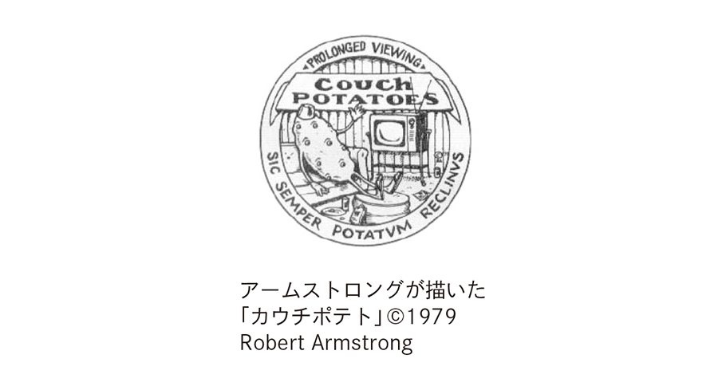
1980年代にはDINKS「ディンクス」という略語が広まった。Double Income No Kids（Dual Income No Kidsとも言う） の頭文字を並べたもので、夫と妻の両方に収入があり意図的に子供をつくらないカップルのことだ。これは夫婦の価値観やライフスタイルを表す言葉で、結婚したばかりでまだ子供がいなかったり、子供に恵まれない夫婦についてはディンクスとは言わない。
さらにDEWKSという言葉も生まれた。Double Employed With Kidsの頭文字を並べたもので、「二人とも働いていて子供のいる夫婦」のことだ。
PC「政治的に正しい言葉」
これも1980年代になって言われ出した言葉なのだが、PC（political correctness）という英語をご存じだろうか？ 「政治的・社会的に正しく、差別や偏見が含まれていない言葉」のことだ。「政治的に正しい」というふうに形容詞的に使う場合には、politically correctとなる。
例えば、アメリカでは「黒人」という意味のblack personがAfrican American / Afro-American「アフリカ系アメリカ人」と呼ばれる。アメリカ大陸の先住民もIndianではなくNative Americanと呼ばれるようになっている。もともとIndianとは「インド人」のことだ。だからアメリカでIndianと言われると、「インド人」なのか「ネイティヴ・アメリカン」なのかよく分からないことがある。
そんな「政治的に正しい言葉」の中で私が感動したのが、Physically Challenged Personという表現だ。アメリカのある美術館の入場料金表にAdult「大人」、Child「子供」、Senior「高齢者」などに並んで、このPhysically Challenged「障害者」があった。普通ならhandicapped personとすることが多い。障害者を「身体的挑戦者」と呼ぶとは英語とは何と凄い言葉なのだろうか。だが、いろいろ調べてみたら、アメリカの障害者団体はこの言葉を「きれいごとすぎる」として反対しているのだという。
性差別を避けるために、policeman「警察官」はpolice officer、chairman「議長」はchairperson、fireman「消防士」はfirefighterなどと呼ぶようになっている。
ただ「政治的に正しい言葉」にはばかばかしい議論が伴うこともある。例えばhistory「歴史」をhis（彼の）＋story（物語）とするのはおかしい、歴史には女性も関わっているのだから"herstory"「彼女の物語」とも呼ぶべきだなどという意見もある。
manhole「マンホール」まで"personhole"とすべきだという極端な意見もあって、私は「PCもここに極まれり」と思った。しかし驚いたことに、manholeはもともと「男が入る穴」という意味で、man「男」とhole「穴」を組み合わせた言葉だったのである。
initialismとacronym
現在のように忙しい時代になると、略語も多くなってくる。例えばtelephone「電話」がphoneになり、refrigerator「冷蔵庫」がfridge（なぜかdが入っている）とも言われるようになった。最初は「馬が必要なくて自動的に動く車」ということでmotor-carとかauto-carと呼ばれていた「自動車」はcarとなった。examination「試験」もexamだ。bus「バス」だって昔はomnibus（もともとラテン語で「みんなのための」という意味） と言ったものが、最初の部分がカットされてできた単語だ。
日本ではpersonal computer「パーソナル・コンピューター」を「パソコン」と短くするが、英語ではPCと頭文字を並べる。television「テレビ」もイギリスでは一時telly と短くされたこともあったが、T.V.と省略され、その後TVと表記されることが多くなった。
英語では「短縮形、省略語」のことをabbreviationと言う。日本でもお馴染みのITはInformation Technology「情報技術」、ATMはAutomated Teller Machine「現金自動預け払い機」、UFOはUnidentified Flying Object「未確認飛行物体」のabbreviationだ。
このように英語の「略語」には、それぞれのwordの頭文字を順番に並べたものが多い。国ではUSAはもちろんUnited States of America「アメリカ合衆国」、UKはUnited Kingdom「英国」のことだ。UAEという国をご存じだろうか？ これはUnited Arab Emirates「アラブ首長国連邦」のことで、サッカーの試合などではよくこの略称で呼ばれる。
アメリカの情報機関でよく知られているのがFBIとCIAだ。FBIはFederal Bureau of Investigation「連邦捜査局」、CIAはCentral Intelligence Agency「中央情報局」だ。国際的な組織・軍事同盟ではOECDはOrganisation for Economic Co-operation and Development「経済協力開発機構」、OPECはOrganization of the Petroleum Exporting Countries「石油輸出国機構」、UNHCRはUnited Nations High Commissioner for Refugees「国連難民高等弁務官事務所」、NATO（英語では「ネイトー」と発音する） はNorth Atlantic Treaty Organization「北大西洋条約機構」のことだ。
まだまだある。AIDS「エイズ」はAcquired Immune Deficiency Syndrome「後天性免疫不全症候群」の短縮語だし、Oxford English Dictionary「オクスフォード英語辞典」も英語研究者や熱心な英語学習者はOEDと言う。
このように頭文字を並べた略語を日本語では「頭字語」と言うが、これには2種類あって、英語ではinitialismとacronymに分かれる。例えば、先の例で言えばOECD、UNHCRは、それぞれの文字を「オー・イー・シー・ディー」「ユー・ネヌ・エイチ・シー・アール」と読む。これがinitialismだ。これに対し、OPEC、NATO、AIDSは「オペック」「ネイトー」「エイズ」と、ひとつの単語のように発音する。これをacronymと言う。
私たちがひとつの単語だと思っているものが、実はacronymだったということもある。古いところでは、電波を目標物に当てて反射波を受信し位置を測定するradar「レーダー」はRAdio Detecting And Rangingの短縮語だ。空気の入ったボンベを背負って海に潜る「スキューバダイビング」のscubaもこれだけで一語だと思われがちだが、実はSelf-Contained Underwater Breathing Apparatusの頭文字を並べたものだ。
最近つくられたacronymの傑作がHOLMES「ホームズ」だ。イギリスの警察の情報データベース"Home Office Large and Major Enquiry System"の頭文字を順番に並べたものだ。推理小説家Conan Doyle「コナン・ドイル」（1859～1930） が生み出した名探偵Sherlock Holmes「シャーロック・ホームズ」を意識した略語で、考えた人のセンスが光る。
これはinitialismだが、最近日本でも使われるようになった言葉にLGBTがある。Lesbian「レズビアン」（女性同性愛者）、Gay「ゲイ」（男性同性愛者）、Bisexual「バイセクシャル」（両性愛者）、Transgender「トランスジェンダー」（性同一性障害の人）の頭文字を並べたものだ。「性的少数者」と訳されることもあるが、性の多様性と個々人のアイデンティティを肯定的に認めた言葉だとされる。
手紙やEメールなどでもabbreviationがよく使われる。ASAPはAs Soon As Possible「できるだけ早く」、BTWはBy The Way「ところで」、FYIはFor Your Information「ご参考のために」という意味だ。親しい友人などで開くホームパーティーの招待状にもよくBYOと書いてある。Bring Your Ownの略で、食べ物や飲み物は参加者がそれぞれ持ち寄ることになっているという意味だ。BYOBならBring You Own Bottle（またはBring Your Own Booze。boozeは「酒、アルコール」のこと） で、「酒類は各自ご持参ください」ということになる。
パーティーなどの招待状でも正式なものになると、最後にRSVPと表記されている。これは英語ではなくフランス語のRépondez S'il Vous Plaît. 「ご返事いただきたくお願い申し上げます」の略で、世界共通の決まり文句になっている。
おもしろいIT用語
21世紀になって普通に使われるようになった新しい英語といえばやはり「IT用語」だろう。ITはinternetの略だと思っている人もいるようだが、前述のようにInformation Technology「情報技術」の略語だ。「IT用語」はIT terminologyと言うが、computerを使ってcomputer terminology あるいはcomputer jargon「コンピューター用語」と言っても同じような意味になる。
IT用語を紹介し始めたらキリがないので、特に興味をそそるものだけをピックアップしてみたい。まずはemail「Eメール」という基本中の基本からだ。mailはもともと「郵便（物）」のことだが、最近では日本語でも「メール」と言うと「Eメール」を意味する場合が多い。emailはelectronic mailのことだ。E-mailがe-mailと表記されるようになり、それが今では普通にemailと表記される。
2000年頃まで、send an e-mailは英語として正しくない、send an e-mail message「Eメール・メッセージを送る」とするべきだなどとうるさいことを言われたが、今では違和感を持つ人はいない。それどころか、何とemailが「Eメールを送る」という意味の動詞でも使われるようになっている。"Please email me."「Eメールを送ってください」などと普通にメールで送っている。
ところで、英語でmail「メール」と言うと、普通の手紙やハガキなどの郵便なのかEメールなのかがよく分からないことがある。私も英語でEメールを書いていると迷うことが多く、普通に「郵送する」ということを言いたい時はsnail mailと書くようにしている。snailとは「カタツムリ」のことだ。カタツムリの歩みのようにゆっくりと届く郵便のことだ。s-mailあるいはsmailとも言う。もちろんemailに対してのsmailだ。これも、一種のIT用語と言っていいだろう。
パソコンだけでなく携帯電話やスマホでも盛んにメールが交換される時代になって、またまた新しいabbreviation「略語」が生まれている。LOLはLaughing Out Loudの略で、日本語なら「（笑）」とか顔文字の(^_^)に近いものだろう。このように文字や記号を組み合わせて人の表情のように見せる「顔文字」は英語でemoticonと言う。emotion「感情」とicon「アイコン」が組み合わさった単語だ。文章の中に入れるイラスト画像は「絵文字」で、英語ではpictogramとかpictographとなる。
メールでは、なるたけ文字数を少なくしたい。そのために"you, too"をU2と打ったり、"because"をcosとかcusなどとする。有名なところではCUL8Rなどという判じ物のような省略文もある。See you later!「じゃあ、またね」ということだ。
internet「インターネット」も盛んに使われるようになった。「インターネットで検索する」を英語にするとsearch on the internet、検索したい内容を入れる場合にはsearch for...on the internetとなる（「検索する」という英語には、他にcheck, look up, retrieveなどがある） 。ところが、最近日本でも「ググる」と言うように、英語でもgoogleが「インターネット検索する」という意味になっている。これまでも会社名や商品名が一般的な英語として普及した例がいろいろあったが、IT用語でも同じことが起こっているのだ。
蘇った言葉
以前は普通に使われていた単語が、コンピューター用語になって蘇るという現象も起こっている。一番よく知られているのがTwitter「ツイッター」だろう。140文字以内の短文を投稿・共有する情報サービスだ。twitterはもともと「（鳥が）さえずる」「さえずり」、あるいは「ペチャクチャしゃべる」「無駄話」という意味だった。投稿された短いメッセージがtweet「ツイート」で、これも「（鳥の）さえずり」という意味だが、日本では「つぶやき」とも言う。twitterもtweetも「ツイートする、つぶやく」という動詞でも使われる。
website「ウェブサイト」のwebはもともと「クモの巣」、siteは「敷地、現場」のことだ。blog「ブログ」は最初weblogと呼ばれていた。logは17世紀に使われ出した航海用語で「航海日誌」のことだった。それがwebのbとlogが結合してblogとなったのである。
iconはロシア正教・ギリシア正教の「聖画、イコン」のことだが、パソコンの「アイコン」の意味で使われているし、scroll「巻く、巻物」は「画面を上下に動かす」ことだ。「引きずる、引きずって移動する」という意味のdragは「アイコンなどを画面上で動かす、ドラッグする」ということで、日本でもお馴染みの単語だ。
postは名詞では「郵便」「柱、棒」「地位」、動詞では「郵送する、投函する」「（掲示物）を貼る、掲示する」という意味だが、最近では文章や写真をホームページやブログ、インターネットやツイッターなどに「掲載・投稿する」ことをpostと言うようになっている。「アップする」ということだ。例えばpost a video on Facebookなら「フェイスブックに動画を掲載する」、postone's opinion on Twitterで「ツイッターに意見を投稿する」となる。
textも「原稿、本文」「原典、原本」「教科書」（textbook）などという意味だが、コンピューター用語では「携帯メール」「携帯でメールを打つ、送信する」という意味で使われるようになっている。Text me when you reach Narita Airport.「成田空港に着いたら携帯にメールしてね」などと使うことができる。
おもしろいのはbrowser「ブラウザ」という言葉だ。動詞のbrowseは15世紀頃に使われ出した単語で、もともと「（シカやヤギが）木の枝の若葉や芽を食べる」「（牛や馬や羊などが）牧場の草を
自動通訳機で英語は変わるか?
今後どのような技術が発展し、どのような英単語や表現が誕生するのだろうか？ 英語はどのように変わっていくのだろうか？ ひとつには、international language「国際語」としての性格がますます強くなることは確かだろう。
だがこの先、英語の歴史にとって、とてつもない大きな「変革」が起こると私は確信している。「自動通訳機、自動翻訳機」の発明と普及である。実際、メガホンを口に当てて日本語で話すと、スピーカーから自動的に英語・中国語・韓国語などに翻訳された合成音声が出てくる「メガホン型自動翻訳機」が実用に移されている。商標名は「メガホンヤク」と言うが、何かドラえもんの「ほんやくコンニャク」を想起させる名前だ。スマホをカメラモードにして文字にかざすと、英語が日本語に、日本語が英語になって映し出される翻訳アプリもできた。
さらに、イヤホンのような小さな自動通訳機も開発中で、英語とフランス語・ドイツ語・イタリア語・スペイン語などの言語では商品化も間近だという。英語・日本語相互の通訳機の登場は、あまりにも言語体系が異なるために、もう少し先のことになるのかもしれない。だが、もしそれが実現したら、多くの日本人は英語を学ぶ必要がなくなってしまうのだろうか？
私は大声で"No!"と叫びたい。通訳機を介して自分の意思が伝わり、相手の言うことが分かったとしても、そこに人間同士の真の触れ合いが生まれるのだろうか？ 自動通訳が日常的に行われる時代になればこそ、自分が何年も何十年も苦労して覚えた英語でとつとつと話し、聞き、読み、書くことが真の意味を持つことになると私は信じている。
私の妻はフランス語ができるが、今遅ればせながら英会話を勉強している。自動通訳機の話をしたらこんなことを言っていた。「他の人が努力しなくなったら、自分にとってはチャンスね。みんなが自動通訳機に頼っている時に、それを使わずに外国語を喋れたら、すごいと思わない？」
あとがき
書店や図書館には膨大な数の歴史書が並んでいます。英単語・熟語の本も、受験や英語資格試験対策用の参考書や問題集を中心に世に溢れています。しかし、「歴史」と「英語」を融合させ、歴史の流れを描きながら、その時代時代において誕生した英語を順に解説したこの本は、私の知る限りでは世界で初めての試みです。そんなコンセプトを思いついた編集者・出版プロデューサーたる私が、分身の著者・小泉牧夫に課したのは、とてもハードルが高く厳しい試練でした。
一番難しかったのが「歴史」と「英語」のバランスを取ることでした。最初は歴史のおおよそのアウトラインをなぞり、各時代に生まれた英語表現の解説を挟み込んでいけば1冊の本になるだろうと、かなり安易に考えていました。ところが、そのうちに歴史についても深い記述が必要なことに気づいたのです。
例えば、カエサルが「ルビコン川」を渡り「賽は投げられた」と叫んだ時の気持ち、その時に彼が置かれた状況が分からなければ、cross the RubiconやThe die is cast.という英語表現の深さが理解されないのではないか、と考え始めたのです。
カエサルは死を覚悟していたに違いありません。ポンペイウスや元老院議員への怒りではらわたが煮えくり返ってもいたことでしょう。でも、果たして祖国に
私は執筆方針を転換しました。カットすべき時代は大幅に省き、英語の誕生に関わる歴史については表面的になぞるのではなく、できうる限り詳しく描くことにしたのです。英語に関する本なのに、歴史の記述が長すぎると思われた方もいらっしゃるかもしれません。しかし、それは取りも直さず、その時々の歴史状況の中で生まれた英語表現の重みを読者の皆様に体感として理解していただこうと考えたためです。
本書の原稿を書き上げてからも、新たな英単語や英語表現が生まれています。例えばBrexit「イギリスのEU離脱」──「イギリス」のBritainと「離脱」を意味するexitを結合させた言葉です。〈近代編〉のgerrymanderの項でも触れましたので、このように複数の語の一部を組み合わせてつくった造語をportmanteau「かばん語」と呼ぶことはもうお分かりでしょう。
〈戦後・21世紀編〉で紹介したPC「政治的に正しい言葉」についても、そんなことにはお構いなしに乱暴な言葉を使うことで人気を得ている政治家が現れています。その方が、既成概念にとらわれず、政治的閉塞感や経済的停滞を打ち破って、何か新しいことをやってくれるのではないか、という期待を抱かせる時代になってしまったようです。それは、つくづく残念なことです。
言葉は人の心を表します。「歌は世につれ、世は歌につれ」と言いますが、「言葉」についても同じことが言えるでしょう。乱暴な言葉が飛び交う時代に、人々の乱暴な行動が蔓延して摩擦が拡大し、世界がのっぴきならない状況に陥ることのないように祈るばかりです。
本書の作成に際しては、多くの方々のお力添えをいただきました。第一稿を書き上げた時点で、山谷悦子さんという中国語・ドイツ語関連の書籍・雑誌編集者と偶然知り合いました。何気なくこの原稿の話をすると、「夫がそういう本は大好きだと思いますよ」と言ってご紹介いただいたのが東海大学教授・鈴木孝典先生でした。科学史がご専門で、歴史はもちろん英語・ドイツ語・フランス語だけでなくギリシア語からラテン語、アラビア語までおできになる
そのような経緯を経て完成した最終稿では、英語の語源となるギリシア語を岸見一郎先生に見ていただきました。岸見先生はご存じ発行160万部の大ベストセラー『嫌われる勇気 自己啓発の源流アドラーの教え』（古賀史健氏との共著・ダイヤモンド社） の著者のおひとりです。もともと古代ギリシア語とギリシア哲学がご専門で、日本では古代ギリシア文字が読める数少ない学者のひとりです。「英語の辞書を執筆している人は、ギリシア語が分からない英語の専門家なので間違いが多いんです。僕が見てあげますよ」と言ってくださいました。アドラー心理学の講演で日本国中のみならず海外も飛びまわり、毎月のように新刊を発行されるという殺人的なスケジュールの中で拙稿をお読みいただきました。どのようにお詫びしたらいいのか、どのように感謝の言葉を述べたらいいのか分かりません。
ラテン語については、私の大学時代の恩師、青山学院大学元学長の内藤昭一先生から同大学文学部フランス文学科教授の鳥居正文先生をご紹介いただきました。鳥居先生は高校時代から英語の達人として知られ、東京外国語大学ではフランス語を専攻されました。留学先のフランス・ストラスブール大学では正式にラテン語を学ばれ、古フランス語の研究にも没頭された方です。鳥居先生のような語学の権威に、拙稿をご覧いただいたことは光栄の至りです。
歴史に関しては、浦和明の星女子高等学校で長年にわたり世界史を教えてこられた舟崎和人先生から貴重なご意見をいただきました。世界史を教えているお立場から、歴史的事実はもちろん、その時代その時代についての私の解釈や評価といった事柄まで厳密に見ていただきました。リコーダーの名手でもあり、コンサートに向けて猛練習されている最中にもかかわらず、長時間かけて拙稿をお読みいただいたことに深く感謝いたします。今アメリカに住んでいる私の娘も、この高校で舟崎先生の授業を受け"世界史オタク"になりました。ありがとうございました。
今回もアメリカ人の"超インテリ"Jeff Clarkさんに英語のチェックをお願いしました。Jeffさんは、私が英語会話の勉強を始めた30年ほど前、大杉正明先生（現清泉女子大学名誉教授）が講師を務められたNHK「ラジオ英語会話」の会話文をValerie Koehnさんと一緒に執筆していました。そこには日本人的感覚では理解できない口語的な英語表現がたくさん出てきました。私はそんなおもしろい英語表現の
翻訳家で編集者でもある山本映子さんには、英語表現と日本語訳の
用語統一などの原稿整理と校正については、梅澤久視子さんにお世話になりました。もともと百科事典の編集者で、本書のように多岐にわたる知識や情報が包含されている本の校正をしていただくには最適の方です。校正者ですから、原稿や校正刷を感情を交えず冷徹な目でチェックしなければなりません。「本ができて、ゆっくり再読するのが楽しみです」と言ってくれています。
本書のDTPは、IBCパブリッシングのプロダクション・エディター菱木啓美さんが担当してくれました。文字組と修正の正確さは言うに及ばず、本書のコンセプトを瞬時に理解し、本文や章トビラのデザインにも素晴らしい才能を発揮してくれました。それは読者の皆様にもお分かりいただけるでしょう。
前著に続いて、今回もIBCパブリッシングの浦晋亮社長に拙稿を書籍にしていただきました。原稿を持参してコンセプトをちょっと説明しただけで、「それは凄い本ですね！」と即座に理解してくれました。昔から原稿への鋭い嗅覚を持っている編集者で、私は"一目も二目も"置いています。
今回は浦社長からの勧めもあり、私が編集作業まですることになりました。出版社にとっては編集経費とマンパワーの節約になりますが、それは私にとっても「自らコンセプトを考え（企画し）、原稿を書き、編集する」という超エキサイティングな経験でした。この"一人三役"によって、私は本づくりの究極の"醍醐味"を味わうことができたのです。
2017年2月 小泉牧夫
参考文献
Gyles Brandreth "Everyman's Modern Phrases & Fabel" J.M. Dent & Sons Ltd, London
William and Mary Morris "Morris Dictionary of Word and Phrase Origins" Harper & Row, Publishers
Nigel Rees "Dictionary of Word and Phrase Origins" Cassell Publishers Limited
Marvin Terban "In a Pickle and Other Funny Idioms" Clarion Books
Marvin Terban "Scholastic Dictionary of Idioms: More Than 600 Phrases, Saying & Expressions" Scholastic Inc.
Ivor H. Evans "Brewer's Dictionary of Phrase and Fable" Cassell Publishers Ltd
John Ayton "Word Origins: The Hidden Histories of English Words from A to Z" A & C Black
Anatoly Liberman "Word Origins ... and How We Know Them: Etymology for Everyone" Oxford University Press
Walter W. Skeat "The Concise Dictionary of English Etymology: The Roots and Origins of the English Language" Wordsworth Editions
Revised and edited by Eugene Ehrlich, Based on the Original Edition by C.O. Sylvester Mawson "The Harper Dictionary of Foreign Terms" Harper & Row Publishers
"The American Heritage Dictionary" A Dell Book
Edited by Julia Cresswell "Oxford Dictionary of Word Origins" Oxford University Press
John Milton "Paradise Lost" Simon & Schuster［電子版］
Aesop "Aesop's Fables" Open Road Integrated Media［電子版］
"Shakespeare Complete Ultimate Collection: 213 Plays, Sonnets & Poems" Everlasting Flames Publishing［電子版］
Jonathan Swift "Gulliver's Travels: Into Several Remote Nations of the World" Wisehouse Classics［電子版］
ジョーゼフ T. シップリー『シップリー英語語源辞典』（梅田修・眞方忠道・穴吹章子訳）大修館書店
井上義昌編『英米故事伝説辞典』冨山房
ジェームズ・ロジャーズ『よく使われる英語表現ルーツ辞典』（迫村純男訳）講談社・講談社インターナショナル
梅村修『英語の語源物語』大修館書店
渡部昇一『英語の語源』講談社
渡部昇一『語源力』海竜社
今里智晃『英語の語源物語』丸善
オウエン・バーフィールド『英語のなかの歴史』（渡部昇一・土家典生訳）中央公論社
寺澤楯『英語の歴史』中央公論新社
寺澤楯『英単語の世界』中央公論新社
グリニス・チャントレル編『オックスフォード英単語由来大辞典』（澤田治美監訳）柊風舎
エドワード・G・サイデンステッカー監修／ジャン・マケーレブ、安田一郎『アメリカ口語辞典』朝日出版社
寺沢芳雄『英語語源大辞典』研究社
小島義郎・岸暁・増田秀夫・高野嘉明編『英語語義語源辞典』三省堂
國原吉之助『古典ラテン語辞典』大学書林
朝倉純孝『オランダ語辞典』大学書林
フリップ・グッテン『物語 英語の歴史』（田口孝夫監訳）悠書堂
岸田隆之・早坂信・奥村直史『歴史から読み解く英語の謎』教育出版
橋本功『英語史入門』慶應義塾大学出版会
安井稔・久保田正人『知っておきたい英語の歴史』開拓社
堀田隆一『英語史で解きほぐす英語の誤解 納得して英語を学ぶために』中央大学出版部
平田雅博『英語の帝国 ある島国の言語の歴史』講談社
『聖書 新共同訳 Good News Bible: Today's English Version』日本聖書協会
木村靖二・佐藤次高・岸本美緒他『詳細世界史』山川出版社
木下康彦・木村靖二・吉田寅編『詳細世界史研究 改訂版』山川出版社
ウィリアム・H・マクニール『世界史』上／下（増田義郎・佐々木昭夫訳）中央公論新社
出口治明『「全世界史」講義 教養に効く！人類5000年史』Ⅰ古代・中世編／Ⅱ近世・近現代編 新潮社
後藤武士『読むだけですっきりわかる世界史』古代編 ピラミッドから「三国志」まで／現代編 オスマン帝国の終焉からポツダム宣言まで 宝島社
入澤宜行『ビジュアル百科 世界史1200人 1冊でまるわかり！』西東社
ジョン・ミルトン『失楽園』（平井正穂訳）岩波書店
バーナード・エヴスリン『ギリシア神話物語事典』（小林稔訳）原書房
ヒューギヌス『ギリシア神話集』（松田治・青山照男訳）講談社
ルネ・マルタン監修『図説ギリシア・ローマ神話文化事典』（松村一男訳）原書房
マルコム・デイ『ギリシア・ローマ神話人物記 絵画と家系図で描く100人の物語』（山崎正浩訳）創元社
マイケル・マクローン『知のカタログ ギリシア・ローマ古典』（甲斐明子・大津哲子訳）創元社
桜井万里子・本村凌二『世界の歴史5 ギリシアとローマ』中央公論社
ホメロス『イリアス』上／下（松平千秋訳）岩波書店
ホメロス『オデュッセイア』上／下（松平千秋訳）岩波書店
クィントゥス『トロイア戦記』（松田治訳）講談社
アリストパネス『鳥』（呉茂一訳）岩波書店
アリストパネース『雲』（高津春繁訳）岩波書店
プラトン『饗宴』（久保勉訳）岩波文庫
納富信留『シリーズ・哲学のエッセンス プラトン 哲学者とは何か』NHK出版
納富信留『NHK100分de名著 饗宴プラトン 愛することが哲学だ』NHK出版
荻野弘之『哲学の饗宴 ソクラテス・プラトン・アリストテレス』NHK出版
I・モンタネッリ『ローマの歴史』（藤沢道郎訳）中央公論新社
阪本浩『ビジュアル選書 ローマ帝国一五〇〇年史』新人物往来社
本村凌二『はじめて読む人のローマ史1200年』祥伝社
小林標『ラテン語の世界 ローマが残した無限の遺産』中央公論新社
永田久『暦と占いの科学』新潮社
塩野七生『ローマ人の物語Ⅰ ローマは1日にしてならず』新潮社
塩野七生『ローマ人の物語Ⅳ ユリウス・カエサル ルビコン以前』新潮社
塩野七生『ローマ人の物語Ⅴ ユリウス・カエサル ルビコン以後』新潮社
トム・ホランド『ルビコン 共和制ローマ崩壊への物語』（小林朋則訳・本村凌二監修）中央公論社
パスカル『パンセ』上／中／下（塩川徹也訳）岩波書店
パスカル『パンセ』（前田陽一・由木康訳）中央公論新社
青柳正規『皇帝たちの都ローマ 都市に刻まれた権力者像』中央公論新社
ラ・フォンテーヌ『寓話』上／下（今野一雄訳）岩波書店
加藤隆『歴史の中の「新約聖書」』筑摩書房
岡田温司『黙示録 イメージの源泉』岩波書店
フィリップ・リンベリー、イザベル・オークショット『ファーマゲドン 安い肉の本当のコスト』（野中香方子訳）日経BP社
君塚直隆『物語 イギリスの歴史』上 古代ブリテン島からエリザベス1世まで／下 清教徒・名誉革命からエリザベス2世まで 中央公論新社
歴史の謎を探る会編『イギリスの歴史が2時間でわかる本』河出書房新社
秋田茂『イギリス帝国の歴史 アジアから考える』中央公論新社
島崎晋『マンガでわかるイギリスの歴史 一気に読み解く！世界史を変えた人物列伝』誠文堂新光社
指昭博『図説 イギリスの歴史』河出書房新社
波多野裕造『物語 アイルランドの歴史 欧州連合に賭ける"妖精の国"』中央公論新社
ローズマリ・サトクリフ『アーサー王と円卓の騎士』（山本史郎訳）原書房
アンヌ・ベルトゥロ『知の発見双書71 アーサー王伝説』（村松剛監修・村上伸子訳）創元社
岩村忍『暗殺者教団 イスラム異端派の歴史』筑摩書房
岡田晴恵『感染症は世界史を動かす』筑摩書房
徳善義和『マルティン・ルター ことばに生きた改革者』岩波書店
トマス・モア『ユートピア』（平井正穂訳）岩波書店
J. M. バリ『ピーターパン』（厨川恵子訳）岩波書店
ジェイムズ・ヒルトン『失われた地平線』（池央耿訳）河出書房新社
マーク・トウェーン『王子と乞食』（村岡花子訳）岩波書店
ウィリアム・シェイクスピア『ハムレット』（小田島雄志訳）白水社
ウィリアム・シェイクスピア『ジョン王』（小田島雄志訳）白水社
ウィリアム・シェイクスピア『ロミオとジュリエット』（小田島雄志訳）白水社
ウィリアム・シェイクスピア『ジュリアス・シーザー』（福田恆存訳）新潮社
ウィリアム・シェイクスピア『オセロ』（三神勲訳）角川書店
ウィリアム・シェイクスピア『ヴェニスの商人』（福田恆存訳）新潮社
ジョナサン・スウィフト『ガリバー旅行記』（原民喜訳）青空文庫［電子版］
原田範行『NHKカルチャーラジオ 文学の世界 風刺文学の白眉「ガリバー旅行記」とその時代』NHK出版
小川鼎三『医学用語の起り』東京書籍
柴宜弘『図説 バルカンの歴史』河出書房新社
ルイス・キャロル『鏡の国のアリス』（河合祥一郎訳）角川書店
レイ・ブラッドベリ『華氏451度』（宇野利泰訳）早川書房
ドリス・カーンズ・グッドウィン『リンカーン』上 大統領選／中 南北戦争／下 奴隷解放（平岡緑訳）中央公論新社
マシュウ・ジョゼフソン『エジソンの生涯』（矢野徹・白石佑光・須山静夫訳）新潮社
ジーン・アデア『エジソン 電気の時代の幕を開ける』（近藤隆文訳）大月書店
浜田和幸『怪人エジソン 奇才は21世紀に甦る』日本経済新聞社
ボブ・ウッドワード、カール・バーンスタイン『大統領の陰謀 ニクソンを追いつめた300日』（常盤新平訳）文藝春秋
〈著者略歴〉
小泉牧夫 （こいずみ・まきお） 英語表現研究家、英語書籍・雑誌編集者
1953年東京都生まれ。1977年青山学院大学卒業、出版社に入社。英語書籍・雑誌を中心に編集を行い、数多くの出版物を世に送り出す。同時に海外版権担当としてブックフェアに参加、世界各国の出版社と版権交渉を行う。著書に『世にもおもしろい英語 あなたの知識と感性の領域を広げる英語表現』、本書は第二弾となる。楽しくて勉強にもなる"エンタテインメントとしての英語"を追究しながら書籍・雑誌記事の執筆や講演活動を行っている。
小泉牧夫ブログ「旅三昧＆ときどき読書＋映画」
http://makiotravel.hateblo.jp/
講演依頼は下記までご連絡ください。
アダムのリンゴ
歴史から生まれた世にもおもしろい英語
2019年7月20日 電子書籍版発行
データ制作 新藤慶昌堂
この作品はIBCパブリッシング刊『アダムのリンゴ 歴史から生まれた世にもおもしろい英語』〔2017年4月17日 第１刷発行〕に基づいて制作されました。
本作品の内容を無断で複製・複写・放送・データ放送配信・転載・改ざん・公衆送信（ホームページなどに掲載することを含む）することは、固くお断りいたします。
ご覧になる機種により、表示や動作に差が認められる場合があります。